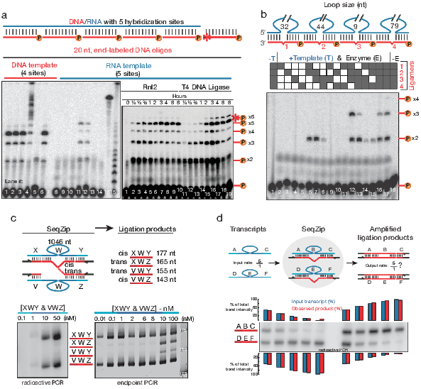
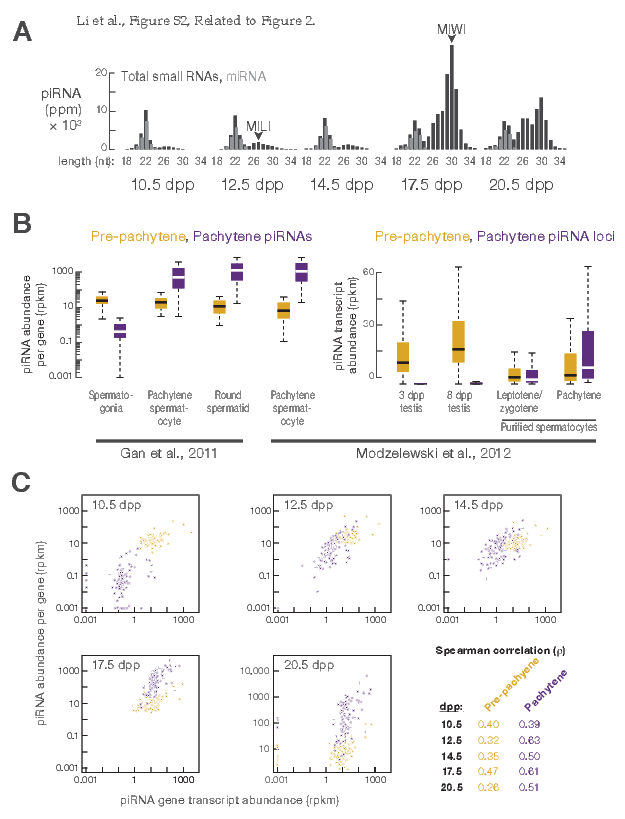
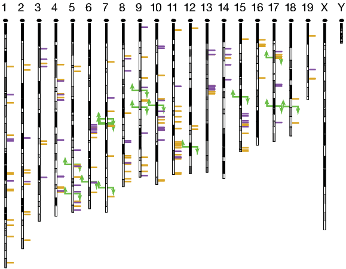
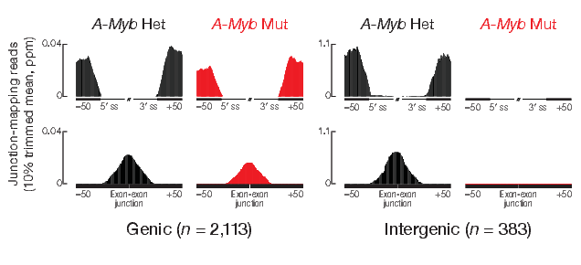

The two phenotypic forms of Schistocerca gregaria appear very different. The solitary form is green and generally larger, while its gregarious form is more brightly colored, smaller, and swarms in vast numbers. Photo from Wikicommons.
By definition swarms are temporary; the movement, en masse, from one location to another. But where do 12.2 trillion locusts go when not swarming? Does anyone care if their crops aren’t under assault? It seemed no one cared until 1921 when an important realization was made.
The power and destruction Schistocerca gregaria can inflict makes it difficult to believe that they are nothing more than common grasshoppers. Nothing more than grasshoppers not just by analogy, but by actual Taxonomy. “Desert” locusts are actually the gregarious form of Schistocerca gregaria (Figure 1.1), while the more familiar and docile looking “grasshopper” is the solitary form. How does such a dichotomy exist within the same organism—indeed the same genome?
Schistocerca gregaria are polyphenic, meaning that they have multiple (poly) physical forms (phenotypes). Polyphenism is a general feature among insects. These phenotypes are often extremely different. For example, pea aphids (Acyrthosiphon pisum), which usually exist in an asexually reproducing, wingless female form, respond to reduced food supply and overcrowding by producing winged sexually-reproducing offspring. Winged organisms travel to new sources of food and revert back to the asexually reproducing form [Purandare et al., 2014, Shingleton et al., 2003]. In the case of Schistocerca gregaria, the gregarious form is smaller and more brightly colored compared to its solitary cousins. This transformation can happen in as little as two hours. What is the underlying cause of this transformation?
In 2009, Anstey et al. [2009] reported that after two hours of forced crowding Schistocerca gregaria displayed elevated levels of the neurotransmitter serotonin in the ganglia (brain). Serotonin levels were strongly correlated with other gregarious form indicators. Serotonin regulates neuronal junctions and wiring in the brain [Hoeffer et al., 2003]. Through the integration of environmental and social cues, the grasshopper brain can be re-wired, resulting in tremendous changes in behavior and phenotype. These changes prepare the organism to deal with a different world. It allows the organism to survive. Survival that is to the detriment of surrounding agriculture.
In an extremely interesting article, David Dobbs compares the two forms of Schistocerca gregaria to that of Dr. Jekyll and Mr. Hyde, the principle characters in the Robert Louis Stevenson novella. For Dr. Jekyll in fiction, and for Schistocerca gregaria in reality, the power to morph into multiple forms demonstrates the incredible power of a fixed genome yet plastic gene expression.
It is often said that something is “in the genes.” Another oft-heard idiom that is perhaps more appropriate is: “it’s how you use them.” This thesis will illustrate that, with ever increasing resolution in the measurement of functional gene products (i.e. the “transcriptome”), we are beginning to realize the tremendous diversity and complexity of gene expression.
1.2 Nucleic Acid Sequencing
1.2.1 DNA Sequencing
Soon after it was realized that DNA is the source of genetic information in all living organisms [Watson and Crick, 1953], and the pretty and elegant arrangement of complementary, antiparrallel, DNA strands was known [Watson et al., 2012], the ability to determine specific arrangements of nucleotide bases in a given length of DNA (i.e. to “sequence”) was seen as a critical missing piece of technology. It took 25 years after the structure of DNA was known to be able sequence it. By 1977, two completely different methods developed by Sanger [Sanger and Coulson, 1975, Sanger et al., 1977] and Maxam-Gilbert [Maxam and Gilbert, 1992] were reported. These sequencing technologies, from then on referred to eponymously as “Sanger” or “Maxam-Gilbert” sequencing, were used to determine the specific order of a small piece of DNA (200–300 nt). Sanger sequencing soon dominated most sequencing reactions, likely due to the conceptually more intuitive nature of the technology. Over the next 35 years, DNA sequences were slowly cloned, sequenced, analyzed, and dutifully cataloged into knowledge.
During the late 1970’s and throughout the 1980’s, DNA sequences were typically communicated in important publications [Bell et al., 1980, Sanger et al., 1978]. The birth of the Internet in the 1990’s allowed publically-funded repositories to store sequence information [Benson et al., 2011]. Yet it was the human genome project [Lander, 2011, Venter et al., 2001], provided the important activation energy that brought DNA sequencing from a hard-to-perform, but necessary, analysis, to an organized large-scale effort of assembling the complete genetic material of complex genomes. An often criticized, but undeniably disrupting force in the human genome project was the competing efforts by the privately-owned company Celera [Venter, 2007]. Taking a higher-throughput and centralized approach to determining the sequence of the human genome, Celera fundamentally changed the landscape of genome assembly. Instead of assigning specific sections of the genome to be worked out by individual labs, Celera parallelized the effort. Celera collected the best “high-throughput” Sanger-sequencing devices from Agilent (ABI 3700 DNA Analyzer) and used a “shotgun” approach [Staden, 1979], sequenced pairwise [Roach et al., 1995]. Combined with sequence scaffolds made available by the publicly-funded project, Celera was able to assemble a high-quality genome quickly. Arguably, this was the first deep sequencing effort. Coincident with the beginning of a new millennium, it changed the landscape of molecular and biochemical research.
1.2.2 High-throughput Sequencing
Sequencing DNA by Sanger’s technology remains a valuable tool in every biological scientist’s toolbox. However, Sanger sequencing has a practical throughput limit. Each DNA molecule to be sequenced must be isolated, cloned, and amplified—using bacteria. Given that the human genome [Consortium, 2004] comprises >3 billion bp, and each Sanger reaction provides ~800 nt of quality sequence, at least ~4 million individual reactions are needed to determine the sequence of the human genome. This number assumes all “reads” are of sufficient quality, length, and do not overlap by even 1 nt. The use of reads with no overlap is out of the question, as overlaps are essential for assembling individual sequences via overlaps, critical for assembly through repeated sequences.
Even the best practical improvements to Sanger work-flows could not bring the technology in-line with aspirations of analyzing many species and/or organisms. Yet, the early 2000’s saw multiple efforts to improve the scale of DNA sequencing, first using MPSS [Brenner et al., 2000], but perhaps more importantly, by Pyro- [Ronaghi et al., 1998] and Polony sequencing [Shendure et al., 2005]. Both pyro- and polony sequencing utilize emulsion PCR [Nakano et al., 2003] for clonal amplification prior to sequencing, removing the bottleneck of bacterial cloning. In contrast to Sanger sequencing, where fluorescence signal from the last incorporated chain-terminating nucleotide is observed, pyrosequencing visualizes light given off by luciferase reacting with pyrophosphate (PPi), a by-product of nucleotide incorporation. This approach was later commercialized by 454 technologies. Polony sequencing involves a more complicated sequencing-by-ligation method, eventually commercialized by Applied BioSystems and branded as SOLiD sequencing. While both of these technologies provided valuable high-throughput sequences, neither has been as successful as the approach commercialized by Solexa, now known as Illumina.
Illumina sequencers use a sequencing-by-synthesis approach. After clonal amplification of DNA on a slide surface [Bentley et al., 2008], fluorescent nucleotides are visualized as they are incorporated into the growing DNA strand. Since 2006, iterations of the Illumina platform (e.g. GE, GE-II(x), HiSeq, HiSeq 2500, Hi X) have demonstrated a steady and impressive increases in both read depth and length. On February 15th 2012, Illumina announced on its Basespace blog, that they had sequenced a HapMap sample at 40X coverage, using the HiSeq 2500 platform and paired-end 100 nt reads in a single run. On January 14th, 2014, Illumina announced its HiSeq X system, the first platform to truly attain the mythical $1,000 genome. These machines demonstrate that sequencing genomes is no longer the monumental endeavor it once was and that completely new experimental possibilities are a reality for life science researchers (Figure 1.2).
The costs of sequencing the human genome has decreased on a log scale over a 10 year period due to major improvements in high-throughput sequencing. Data from Wetterstrand KA. DNA Sequencing Costs: Data from the NHGRI Genome Sequencing Program (GSP) Available at: www.genome.gov/sequencingcosts. Accessed 2013-09-03).
1.2.3 RNA Sequencing
Before reviewing sequencing technologies’ application to measuring gene expression, microarray technology must first be discussed. The importance of microarrays in the measurement of gene expression cannot be overstated [Marioni et al., 2008, Shendure and Ji, 2008]. Microarray use in recent publications, such as defining the transcriptome of the developing human brain Miller et al. [2014], was correct and essential. However, limitations of novel sequences discovery combined with analogue signal, make the relevance of microarray technology off-topic to this section.
The first widely-accepted large scale method used to measured gene expression was Serial Analysis of Gene Expression (SAGE) [Velculescu et al., 1995]. SAGE, like the before mentioned MPSS technique, produces a digital output of gene expression using a clever procedure of restriction endonucleolytic cDNA cleavage. Cleaved-product sticky ends are concatenated together to form long DNA fragments. Fragments are cloned into a vector, amplified, and Sanger sequenced. Using known sequences incorporated during concatenation, the number of sequenced fragments that align to a given gene is related to the abundance of the original RNA molecule. A clever molecular trick, SAGE allowed researches to dip into the 5-log range of mRNA expression. However, the technique it is still limited by Sanger sequencing read lengths and depth.
The Solexa/Illumina platform relies on clonal amplification of a single template directly on a slide surface and is therefore not restricted by bacterial cloning. Imaging spots with sensitive digital cameras after sequential addition of fluorescent nucleotides, sequencing by synthesis, turned out to be the right mix for a “second generation” HTS platform. Not long after the Solexa/Illumina platform achieved read lengths of sufficient length and depth necessary to measure gene expression were the first RNA-Seq papers published [Lister et al., 2008, Mortazavi et al., 2008, Nagalakshmi et al., 2008]. These papers provided a glimpse into the future of molecular biology. Indeed, in the years since, analysis by RNA-Seq has quickly overtaken other forms of gene expression analysis, as demonstrated by the number of accessions created in the publically-funded repository of sequencing data, the Gene Expression OmniBus (GEO) [Barrett et al., 2013]. RNA-Seq allows for digital quantification of RNA expression across physiologically-relevant ranges [Blencowe et al., 2009], novel sequence discovery, measuring RNA-editing [Li et al., 2011], and fuels the novel area of transcript assembly [Trapnell et al., 2010]. Through modification of the basic protocol or performing additional biochemical steps, RNA-Seq can be used to investigate many aspects of RNA biology (Figure 1.3 and [Mutz et al., 2013]).
In the short years since the first report of RNA-Seq, many variations have been reported. The figure above provides an incomplete graphical illustration of these variations. A more complete list of “*Seq” applications is maintained on this blog http://liorpachter.wordpress.com/seq.
RNA processing begins the moment the nascent RNA is exposed from the polymerase exit channel. Numerous methodologies enrich RNA-Seq libraries for particular types of RNA. For example, measurement of nascent transcripts can be performed via GRO-Seq [Core et al., 2008], and the extremely complicated process of RNA turnover (referring to the rates at which RNAs both are produced and degraded) has been examined [Ghosh and Jacobson, 2010, Tani et al., 2012]. RNA::Protein interactions can be measured with or without cross-linking the protein to the RNA, via CLIP or RIP, respectively (see section 5.2.2) [Licatalosi and Darnell, 2006, Singh et al., 2014, Ule et al., 2005]. Once an RNA has been fully transcribed, known processing steps such as 5′ 7meG CAP formation and poly(A)+ tail formation can be measured using any of the Cap-Seq/CAGE methodologies [Shiraki et al., 2003], or PAS/TAIL/PAL [Chang et al., 2014a, Shepard et al., 2011, Subtelny et al., 2014]. With appropriate size-selection steps, small RNAs [Ghildiyal et al., 2008] can also be captured. Finally, traditional RNA-Seq can capture many of the same RNA fragments as the above mentioned methods, even though it is mainly associated with measurement of traditional mRNA.
RNA-Seq (and all its flavors) are traditionally associated with quantification of RNA obtained from many tissue culture cells or bulk pieces of tissue. Recently, efforts to measure RNA expression occurring in individual cells has gained attention [Shapiro et al., 2013]. Perhaps the most interesting concept when thinking about measurement of gene expression in a single cell is the “biological uncertainty principle”, wherein it is possible to either know, or change — but not both— the RNA composition of a single cell. The name borrows from Heisenberg’s uncertainty principle [Kennard, 1927] and is often confused with the more appropriate “Observer effect” [Riley and Steitz, 2013]. Leaving that issue aside, measuring the unique transcriptome of a cell is surly an exciting and informative endeavor [Marinov et al., 2013, Shalek et al., 2013, Wills et al., 2013]. Compared to DNA, the diversity of RNA synthesis within living cells is potentially much more complicated [Shendure and Aiden, 2012], and the ability to accurately measure RNA dynamics should allow us to make much more informative observations concerning biology then is currently possible.
1.3 Nucleic Acid Splicing
1977 brought the discovery of “split genes” [Berget et al., 1977, Chow et al., 1977]. Almost immediately it was reasoned that split genes could be arranged in different combinations, greatly increasing the coding potential of a genome [Gilbert, 1978]. The process of rearranging genes, now known as alternative splicing, has proven to be an integral part of eukaryotic gene expression.
1.3.1 Alternative Splicing
The number of genes estimated to be alternatively spliced has grown considerably. In 1993, Phillip Sharp, Co-Nobel-prize winner for the discovery of splicing, stated that: “Approximately, one of every twenty genes is expressed by alternative pathways of RNA splicing in different cell types or growth states” Sharp [2014]. Not long after the assembly of the first human genome, a number of groups combed through Expressed Sequence Tag (EST) databases to increase that estimate to 35%-59% [Modrek and Lee, 2002]. Soon after, analysis using specially designed microarrays resulted in an increased estimate of 74% [Johnson et al., 2003]. In late 2008, three groups used RNA-Seq to demonstrate that between 86% and 95% of human multi-exon genes are subject to alternative splicing [Pan et al., 2008, Sultan et al., 2008, Wang et al., 2008]. Not only did they demonstrate that almost all genes are alternatively spliced, they also showed that alternative splicing often occurs in a tissue- and cell type-specific manner. In combination with regulation of transcription itself, the study of alternative splicing is critical to advance our understanding of the connections between the comparably static genomic DNA sequence and the highly flexible and adaptive abilities of organisms.
A pair of papers recently published in Science best illustrate the amazing complexity alternative splicing can generate between, and perhaps more importantly within, organisms [Barbosa-Morais et al., 2012, Merkin et al., 2012]. Analysis of RNA obtained from a diverse array of organisms and tissues by RNA-Seq has revealed that splicing patterns are shared more closely between organs of different species than between different organs of the same species. It seems that alternative splicing that is essential to the use of a common genome in roles required by physiologically-specialized organs.
1.3.2 A Splicing Code
A gene is alternatively spliced when, as a result of transcription and processing, there are at least two unique transcripts produced. Beyond isoform counting by RNA-Seq, a major area of effort is decoding sequence regulatory elements (SREs) contained in pre-mRNA that define alternative splicing site selection [Wang et al., 2008]. In contrast to core splicing signals, there exists limited knowledge of the SREs that serve to increase and decrease the strength of a particular splice site. Regulatory elements are always surrounded by a sea of other potential sites. Through a variety of mechanisms, SREs serve as cis-acting sequences and binding sites for trans-acting factors. Some of the best-studied SREs include Exon Splicing Enhancers and Silencers (ESEs and ESSs). Members of the Serine-Arginine (SR) protein family typically bind to ESEs located in an exon, promoting exon definition and thereby increasing the probability that the exon will be included in the final transcript [Graveley, 2000, Long and Caceres, 2009, Nilsen and Graveley, 2010]. Meanwhile, ESS recognition squelches inclusion through binding trans-acting heterogeneous ribonucleoprotein particles (hnRNPs) [Martinez-Contreras et al., 2007]. Therefore, trans-acting factor SRE binding can either promote or inhibit splicing machinery::pre-mRNA interactions. The current working hypothesis is that a finely tuned combination of these binding events determines the final exonic content of each isoform [House and Lynch, 2008].
Sequence motifs that compose the alternative splicing code have been teased out [Barash et al., 2010, Ladd and Cooper, 2002]. Additionally, assignment of binding motifs to tissue-specific trans-acting factors has also progressed [Jin et al., 2003, Licatalosi et al., 2008, Ule et al., 2005]. Many of these binding motifs were identified using combined computational and biochemical approaches. Computational approaches involve searching for a comparative enrichment of sequences near splice sites. Biochemical approaches include gel shift, SELEX, and cross-linking. Many of these approaches are performed in vitro and disregard the importance of cellular context on binding affinities. However, with increasing accessibility of HTS, many groups are extracting physiologically relevant, high-resolution data from traditional biochemical techniques [Ingolia et al., 2009, 2011]. Deep-sequencing approaches are also being applied to questions involving mechanisms of alternative splicing. In addition to the RNA-Seq experiments, High-Throughput Sequencing [following] Cross-Linking Immunoprecipitation (HTS-CLIP) has confirmed SRE motif data predicted from computational and microarray experiments [Hafner et al., 2010, Licatalosi et al., 2008]. Using HTS-CLIP, researchers can now enrich their samples for sequences that bind trans-acting factors of interest.
1.3.3 The Isoform Problem
Alternative splicing research now relies on large-scale (aka: global, genome-wide, high-throughput) techniques. Two of the most widely-applied technologies employed for large-scale analysis of gene expression are microarrays and “2nd generation” HTS. Unfortunately, both of these techniques have fundamental limitations, with the major issues being probe specificity for the former and read length for the latter.

A) Long RNAs may have multiple sites of alternative splicing, separated by 1000’s of nt; B) Most mRNAs have ~10 exons of ~150 nt each. Some have many more (and longer) exons. Read lengths of current sequencing technologies do not maintain connectivity between distant sites.
Microarrays rely on hybridization of a target sequence to a known probe averaging 25–100 nt in length [Southern, 2001]. Therefore, microarrays only report the presence of short sequences in the target sample and do not provide linkage information between the sequences. A hypothetical scenario can be used to describe this issue. The goal of this example is to investigate a transcript known to display two different regions of alternative splicing (Figure 1.5). Probes targeting these two regions demonstrate an increase in signal for both alternative splicing events. Unfortunately, it is not known if we observe an increase in unique transcripts, each containing only one region of alternative splicing , or an increase in production of a single transcript containing both regions [Calarco et al., 2007a]. This binary analysis is the heart of the “connectivity problem.” Microarrays have proven extremely informative and will likely continue to do so in more targeted applications. However, this issue, combined with concerns of cross-hybridization, reproducibility, and a comparably small dynamic range, has hastened the displacement of microarray by RNA-Seq as the preferred method for comprehensive analysis of gene expression [Shendure and Ji, 2008].
2nd generation HTS methodology is the de facto method for comprehensive transcriptome analysis. HTS allows for de novo identification of isoforms. RNA-Seq operates over a larger dynamic range and in a quantitative manner [Mortazavi et al., 2008]. Additionally, techniques exist to enrich samples for low-abundance isoforms, making the complete cataloging of alternative splicing events a possibility [Djebali et al., 2008, Salehi-Ashtiani et al., 2008]. Unfortunately, the current read-length abilities (Figure 1.5) of all sequencing platforms do not solve the connectivity problem. Excluding single-molecule read lengths of sufficient length [Shendure et al., 2004], other approaches proposed to solve the connectivity problem include traditional cloning and sequencing or hybridization of query oligos to single-molecule transcripts [Calarco et al., 2007a, Emerick et al., 2007, Zhu et al., 2003]. While these approaches can determine exon sequence connectivity, they scale poorly and are not feasible for large-scale applications.
Alternative splicing is an essential regulatory mechanism involved in the control of human gene expression. Its combinatorial nature could potentially answer many basic questions concerning gene expression, such as a physical explanation of what separates us from our closest evolutionary ancestor, the chimpanzee [Calarco et al., 2007b]. Additionally, the influence of alternative splicing on disease and cancer is slowly coming to light [Tazi et al., 2009]. Unfortunately, because of the limitations of methods currently used for the large-scale analysis of isoform expression, we fail to obtain the complete picture of alternative splicing. One specific missing element of that picture is the prevalence of coordination between different regions of alternative splicing separated by large spans of sequence. An efficient, large-scale, single-molecule technique that maintains isoform sequence connectivity is required to complete the complicated picture of alternative splicing.
Identification of proximally-acting SREs is progressing at a rapid pace. New and traditional biochemical methods, coupled with HTS, will undoubtedly fuel this progress. Unfortunately, a critical component of alternative splicing regulation currently neglected by the field is that of SREs acting across a considerable distance (>800 nt). One observation that may lead to the identification of long-range SREs is intramolecular coordination between distal splicing decisions. Figure 1.5 shows a model transcript that may exhibit coordinated distal regions of alternative splicing. In this model, the 5′ region of alternative splicing contains a cassette exon, which may or may not be included. This region is separated from the 3′ region of alternative splicing by many thousands of nucleotides. Does the decision to include the cassette exon have an effect on which of the mutually exclusive exons is included? This type of alternative splicing regulation may represent a general and pervasive phenomenon.
1.3.4 Coordinated Splicing
The provocative “Miller Spread”, showing spliceosomes associated with RNA transcripts, ignited the first thoughts that transcription and splicing are intricately linked [Osheim et al., 1985]. Twelve years later, the observation that polymerase speed can affect downstream splicing decisions was reported [Cramer et al., 1997], spawning a new field of research into linked transcription and splicing.
How would linkage between transcription and splicing manifest? One of the clearest examples is mouse Fibronectin (Fn1) (Figure 1.6) [Schwarzbauer and Tamkun, 1983, White and Muro, 2011]. In this gene, inclusion of the alternatively spliced Extra Domain A (aka “EDI” or “EDA”) region promotes splicing from one of three alternative 3′ Splice Sites (3′ SS) in the type III homology connecting segment (IIICS) region, resulting in more frequent production of shorter transcripts [Fededa et al., 2005]. This effect occurs over six constitutively expressed exons and 800 nt of sequence (5,400 nt if introns are considered). Fededa et al. [2005] also analyzed EST databases, concluding that approximately 25% of human genes contain multiple regions of alternative splicing. How many of these regions could show a coordinated effect, similar to that observed in Fn1? Providing some insight into this question, [Fagnani et al., 2007] used microarrays designed to report on inclusion levels of cassette exons in mammalian central nervous system tissues [Fagnani et al., 2007]. The results produced a set of 38 pairs of exons mapping to the same gene that showed a coordinated increase or decrease of inclusion levels.
A) There are three highly-studied regions of alternative splicing in mouse Fn1: Cassette exons EDB and EDA and the Variable(V)-region exon, which displays multiple 3′ splice sites. Each of these sites is separated by multiple constitutive exons. B) Considering simplistic splicing of these three exons, there are 12 different isoforms of mouse Fn1.
Few studies have investigated coordinated splicing between adjacent exons present in mRNA. The vertebrate genes 4.1B and 4.1R, members of the protein 4.1 family and encode cytoskeletal adaptor proteins. Both genes undergo splicing of upstream 5′ first exons to distal 3′ second exons, skipping a stronger proximal 3′ second exon [Parra et al., 2012, 2008]. This is accomplished through “intrasplicing” involving an intronic sequence element (“intraexon”) only present when transcription begins at the upstream 5′ exon. This allows the exon to ligate to the weaker distal 3′ second exon via an intermediate splicing event. Importantly, this type of splicing would be similar, but different from, recursive splicing seen in Drosophila melanogaster [Burnette et al., 2005].
Another example of the importance of Intronic Recognition Elements (ISE) on alternative splicing is that observed in equine β-casin, where the authors propose a model involving an IRE bound to the exit channel of the elongating polymerase. IRE binding promotes inclusion of downstream cassette exons [Lenasi et al., 2006]. Taking a more genome-wide approach Peng et al. [2008] examined human and mouse EST data looking for correlations between adjacent alternative splicing cassette exons. The authors note that positively correlated pairs of adjacent cassette exons typically resemble constitutive exons in splice strength, whereas negatively, or weakly correlated pairs are likely to be newly emerging exons, whose strength of splicing has not evolved enough to be constitutively included.
The last, most current, and thorough study of intra-gene splicing coordination involves the Caenorhabditis elegans gene slo1 [Glauser et al., 2011, Johnson et al., 2011]. slo1 is the Caenorhabditis elegans orthologue of the human BK channel gene Kcnma, also known to undergo extensive alternative splicing [Nilsen and Graveley, 2010] via 13 cassette exons, potentially coding for over 1,000 different isoforms. Kcnma is developmentally, spatially, and tissue regulated. It is involved in a diverse range of cellular processes, including hearing, circadian rhythms, urinary function, and vasoregulation [Fodor and Aldrich, 2009].
In worms, slo1 can produce up to 12 different isoforms. Glauser et al. [2011] used QPCR to demonstrate individual, alternative region inclusion frequencies do not correspond to complete isoform frequencies, when measured via TaqMan. They go on to describe a interdependent-splicing model that best fits the data and support interdependence via mutations at one sight altering both upstream and downstream sites of alternative splicing, separated by at least one other splicing event. After measuring the biophysical properties of the isoforms [Johnson et al., 2011]. [Glauser et al., 2011] conclude that coordinated alternative splicing is critical for proper BK channel function in vivo. It is interesting to note that this study also identified an IRE that displayed some type of coordinated, or co-regulated effect on alternative splicing .
Indeed the “Miller Spread” was an early glimpse into another aspect of Nature’s complexity. Over just the past ~5 years, layers of functional coupling between transcription and splicing have been observed [Merkhofer et al., 2014]. For example, specific chromatin marks seem to not only demarcate transcriptionally active regions of chromatin for silent ones, but also alternative splicing exons from constitutively chosen ones [Kolasinska-Zwierz et al., 2009] and first exons appear to be epigenetically marked to aid in transcriptional identification [Bieberstein et al., 2012]. Tied to the recurring theme of this thesis, increasing resolution of genome-wide data should reveal more ties between these cellular processes [Brown et al., 2012, Luco et al., 2011, Schwartz and Ast, 2010].
1.3.5 One Gene. Many Isoforms
Just as it is tempting to uncouple, for the purpose of research, the evolutionarily intertwined processes such as transcription and splicing, it is easy to think of alternative splicing as a binary process. Isoform A or B is produced based upon picking either exon A or B. What quickly becomes evident (and is far too real for researchers building transcriptome assembly algorithms) is that the combinatorial nature of alternative splicing makes it both a power means of generating isoform diversity and a difficult problem to study [Trapnell et al., 2012].
Alternative Event types per gene. Accessed from RefSeq on 2014-03-24.
One of the most recent attempts to investigate the breath of combinations produced by alternative splicing is the ENCODE project [Birney et al., 2007, Dunham et al., 2012]. The transcriptional annotation arm of the ENCODE project [Derrien et al., 2012, Djebali et al., 2012] used the data from analysis of 15 human cancerous cell lines, and found that each gene produces ~10 isoforms per gene, with a broad distribution in terms of isoforms expressed per sample.
The ENCODE project added to the building evidence that most human genes undergo alternative splicing in many more ways than previously appreciated [Pan et al., 2008, Wang et al., 2008]. Most genes contain multiple forms of alternative splicing (Figure 1.7). Despite the prevalence of complex alternative spliced genes, just a few genes are routinely used as examples to illustrate numerical possibilities and biological significance. For example, the human immune system relies heavily on alternative splicing for plastic antigen recognition and response [Lynch, 2004]. Modulation of extracellular signaling proteins such as CD44 and cellular adhesion protein CD45 have been well-studied [Ponta et al., 2003, Zikherman and Weiss, 2008].
Alternative splicing in humans, however, does not seem to produce the number of unique possible combinations as alternative splicing of genes in simpler organisms, such as Drosophila melanogaster (Figure 1.8 and Table 1.8). Perhaps this reduced alternative splicing per gene is due to gene specialization, with different genes working in combination, as oppose to utilizing unique isoforms from a single gene [Park and Graveley, 2007]. For example, the fruit fly gene muscle myosin heavy chain (Mhc) can produce up to 480 different isoforms through alternative splicing of 17 different cassette exons [Bernstein et al., 1983]. Section 1.3.6 will discuss an even more appropriate comparison between the human and fly extracellular binding protein DSCAM.
Data from [Brown et al., 2014], Supplemental Table 3. Number of transcript per bin, with bin sizes “closed” on the upper part of range.
| Gene Name | # Introns | # Transcripts | # Proteins |
| Mhc | 60 | 2040 | 511 |
| slo | 49 | 2070 | 279 |
| ps | 30 | 2099 | 27 |
| rg | 45 | 2178 | 23 |
| shot | 60 | 2478 | 886 |
| scrib | 53 | 2555 | 259 |
| heph | 75 | 2876 | 52 |
| CG42748 | 26 | 2876 | 51 |
| rdgA | 35 | 3003 | 89 |
| Mbs | 39 | 3080 | 119 |
| CaMKI | 41 | 3992 | 7 |
| par-1 | 48 | 4410 | 142 |
| GluClalpha | 27 | 4945 | 188 |
| Sap47 | 24 | 5011 | 49 |
| Patronin | 50 | 5615 | 590 |
| CG17838 | 37 | 8333 | 147 |
| unc-13 | 52 | 8391 | 279 |
| A2bp1 | 29 | 9055 | 58 |
| Imp | 33 | 9131 | 12 |
| pan | 38 | 9432 | 72 |
| Sh | 40 | 15995 | 66 |
| gish | 48 | 18972 | 142 |
1.3.6 Drosophila melanogaster Dscam1
Unquestionably, the gene most frequently used to demonstrate the combinatorial power of alternative splicing is Drosophila melanogaster Dscam1. The “architecture” of Dscam1 is rather unique, but as we see in Figure 1.8 and Table 1.8, Drosophila melanogaster contain numerous genes that generate tremendous isoform diversity from a single locus [Brown et al., 2014]. The basic structure of Dscam1 is shown in Figure 1.9.
Human Dscam (Down Syndrome Cellular Adhesion Molecule), for which Dscam1 was named, was identified while looking for genes on chromosome 21, specifically band 21q22, where extra copies expressed in Down syndrome patients, a trisomy 21 disorder, maybe causative for disease [Yamakawa et al., 1998]. Dscam was named according to this association, and its membership in the immunoglobulin super family of proteins with extracellular adhesion functions. Human Dscam does undergo some alternatively splicing and is broadly expressed in the developing nervous system. Yet, it does not contain the same impressive number of cassette exons as Dscam1.
Dscam1 has three clusters or “banks” of alternative cassette exons that are splicing out in a mutually-exclusive manner. The first bank, “Exon 4”, contains 12 different variants, of which only one is ever included into the mRNA. Similarly, banks 6 & 9 each contain 48 and 33 different variants, respectively. These three banks code for extracellular IgG domains, while the final region of alternative splicing, exon 17, encodes two different trans-membrane domains, again only one of which only one is included in the final mRNA.
Complex alternative splicing ofDscam1 was first noticed by the Zipursky lab in 2000 [Schmucker et al., 2000]. While looking for proteins associated with dock and pak, two proteins important for neuronal growth cone guidance, they biochemically co-purified DSCAM1. Sequencing of Dscam1 clones revealed that all clones contained different combinations of exons 4,6, and 9. In fact, these three exons are chosen from three clusters of mutually-exclusive cassette exons, containing 12, 48, and 33 different options each (Figure 1.9). The initial report kicked off an exciting period of research into Dscam1 structure and function. Determining the mechanism and functional significance of Dscam1 isoform diversity was a major goal of multiple labs.
Before the highlights of Dscam1 research are reviewed, it is illustrative to discuss some basic Drosophila melanogaster anatomy. There are 4 main regions where Dscam1 expression has been highly-studied. These four biologically important roles are shown in Figure 1.10.
- Hemocyte cells of the immune system
- Larva Class IV da Neurons
- Pupal Mushroom-body neurons in the developing brain
- Tetrad synapses of the eye
During larval development, Dscam1 is expressed in the da neurons of the larval body wall. The da neurons create a uniform sensory field that allow larva to respond to mechanical stimulus. Morphologically, da neurons resemble oak trees growing in a sunny field. In order to maximize coverage of the field, every {cell::cell} interaction (i.e. every synapse) must be a productive one. Molecularly, this is accomplished via an extracellular handshake between two copies of DSCAM1. If this handshake feels too familiar, a stable, lasting, and productive synapse is actively discouraged until a new and different handshake is felt [Wojtowicz et al., 2004]. The use of DSCAM1 to discern self from non-self determination is not unique to da neurons. It is also essential for an equally critical, and arguably more complex, nervous systems including the eye and brain. In the developing brain, Dscam1 is expressed in both axonal projections of neurons as they extend from Kenyon cell bodies and bifurcate into the two different mushroom body lobs [Zhan et al., 2004]. Finally, the involvement of Dscam1 in the innate immune system of insects has been demonstrated [Dong et al., 2006, Watson et al., 2005] where DSCAM1 recognizes and antigen via similar self vs non-self interactions.
Dscam1 has been high-studied in four different regions/cell types. (1) Hemocytes of the immune system, where DSCAM1 is involved in antigen recognition; (2) In Class IV da neurons, which sense mechanical stimulation of the larval body wall; (3) In mushroom body neurons of the pupal developing brain; and (4) (not shown) in Tetrad neurons of the eyes.
With the functionally significance of Dscam1 expression clear, it is important to review research into the mechanisms of generating tremendous isoform diversity. Soon after the initial Dscam1 report Celotto and Graveley [2001] investigated the genes developmental regulation. They focused on the 12 variants of cluster 4 and observed regulation of exon 4.2. Embryonic transcripts show little inclusion of this exon, while adult transcripts show frequent inclusion. Exon 4.8 demonstrates the opposite behavior. Similar regulation of cluster 4 exons was also observed in a closely related species, Drosophila yakuba.
In 2004, Neves et al. [2004] used a specially designed microarray to robustly characterize Dscam1 molecular diversity. They observed, at some rate, inclusion of virtually all alternative exons from clusters 4, 6, and 9. Additionally, they examined Dscam1 transcripts obtained from colonies grown from single cells and reported that multiple Dscam1 transcripts were expressed per cell, estimating between 7–50 different combinations per cell, depending on the cell type. As discussed above, the use of microarrays to perform this analysis precluded observing any potential coordination between variant exons.
Quickly after Neves et al. [2004] published their results, the Zipursky lab also published a microarray study of Dscam1 isoforms [Zhan et al., 2004]. They focused their analysis on neurons of the developing Mushroom body (Figure 1.10). Not only did they also show that most Dscam1 combinations are likely produced at some level, but that diversity of isoforms is required for bifurcation of neurons into different lobes of the developing mushroom body. These results highlighted a critical function for DSCAM1-mediating extracellular interactions via homophillic binding.
How is mutually-exclusive exon usage among 48 different options possible? Graveley [2005] observed a single “Docking site” within the intronic sequence just 5′ to exon 6.1. This docking site was conserved among 15 insect species examined, from closely-related Drosophila simulans to a distantly-related Tribolium castaneum (Red flour beetle). Astonishingly, the docking site was complementary to “selector sites” within intronic regions just 5′ of each of the 48 variant exons. A model was proposed where {docking::selector} interaction is required to choose which variant exons is included, while a splicing regulator protein, likely an hnRNP due to the repressive nature of the interaction, binds to unused selector sites contained in the pre-mRNA [Graveley, 2000]. Additional mechanisms have been reported for other clusters, including the iStem [Kreahling and Graveley, 2005] in cluster 4, and the hnRNP protein hrp36 [Olson et al., 2007].
[Neves et al., 2004] examined Dscam1 expression in hemocyte cells, and their results clearly show reduced variability in cluster 9 inclusion. Virtually all of the signal obtained from hemocyte cells for cluster 9 was seen in variants 9.[6,9,13,30,and 31]. [Watson et al., 2005] also examined Dscam1 expression in hemocyte cells, comparing it to that of neuronal cells. They propose that secreted forms of Dscam1 are essential for a robust innate immune system in insects. These studies highlight how nature has applied one gene that produces extreme molecular diversity to multiple problems involving determining self from non-self [Hattori et al., 2008, Shi and Lee, 2012]. Dscam1 use in these two very different biologically roles has been summarized previously [Hemani and Soller, 2012].
In 2007 the Zipersky lab published [Hattori et al., 2007] the first in a series of quality genetic reports describing the function and diversity of Dscam1. Using homologous recombination, Hattori et al. [2007] showed that Dscam1 diversity is required for proper neural wiring but that individual neuronal-isoform identity is not important. Two years later, Hattori et al. [2009] observed that flies capable of expressing at least 4,752 different Dscam1 isoforms were indistinguishable from wild-type controls. This series was recently advanced with another tour-de-force of genetic manipulation. Miura et al. [2013] used a collection of Dscam1 mutants allowing for visualization via GFP of specific cluster 4.X variant expression in real time. They concluded that a single neuron expresses multiple Dscam1 isoforms over time, and Dscam1 is expressed via “stochastic and probabilistic” mechanisms.
Research into Drosophila melanogaster Dscam1 has provided major advancements to our understanding of multiple aspects of transcription, including: 1) Exon definition; 2) Alternative Splicing of cassette exons; 3) Neuronal and cellular recognition; and finally 4) Allowing comparisons between how points 1–3 are accomplished in “simple” model organisms and humans. See sections 2.2 for more information concerning Dscam1.
1.4 Nucleic Acid Ligation
Biomedical research has always been advanced by countless technologies. Section 1.2 discusses implications of cheap DNA and RNA sequencing. This section discusses how the ability to join pieces nucleic acid has also advanced our understanding of biology. A particular focus is placed on an enzyme with relevance to Chapters 2 and 4—T4 RNA Ligase 2.
1.4.1 RNA-templated DNA-DNA ligation
In the late 1960’s and early 1970’s, the Lehman and Richardson labs characterized two workhorse-enzymes of modern molecular biology. Robert Lehman and colleagues, working at Stanford Medical School, first described the activity of polynucleotide-joining enzyme from Escherichia coli (now known as E. Coli DNA Ligase) [Olivera and Lehman, 1967]. Work on this enzyme paralleled that from the Richardson lab at Harvard Medical School, where they focused on polynucleotide ligase from Escherichia coli infected with T4 bacteriophage (now known as T4 DNA ligase) [Weiss and Richardson, 1967]. It became clear that while these two enzyme’s shared a common mechanism—later elucidated by [Modrich et al., 1973]—they had important differences. First, T4 DNA ligase required ATP as a cofactor, which E. Coli DNA Ligase did not (it was later discovered that DNA ligase required NAD as a cofactor). Second, only T4 DNA ligase could catalyze ligation of blunt-ended DNA [Tabor, 1987].
Adapted from [Nandakumar et al., 2006] and specifically for that of T4 RNA ligase 2.
The general mechanism of ligation (Figure 1.11) involves three steps: Step 1 (A) the ϵ-amino group from the active site lysine performs a nucleophilic attack on the α-phosphate of ATP in solution. B) The ligase is now charged with AMP and inorganic phosphate (PPi) is freed into solution. C) Step 2: Nucleophilic attack by the 5′ DNA phosphate on the 3′ side of the nick to the AMP:ligase phosphate. D) Adenylated DNA is now competent for DNA ligation. E) Step 3: the 3′ OH on the 5′ side of the nick performs a nucleophilic attack on the 5′ PO 4 across the DNA nick, liberating AMP into solution. F) Sealed nick resulting in: Ligase; AMP; and intact dsDNA.
In addition to elucidating the general mechanism of ligation, it was also discovered that T4 DNA ligase lacks a preference for terminal polynucleotide structures. The Khorana and Richardson labs both reported the activity of this enzyme on combinations of RNA and DNA duplexes [Fareed et al., 1971, Kleppe et al., 1970]. Both of these papers describe an activity of T4 DNA ligase, RNA-templated DNA-DNA ligation, that is of particular relevance to this thesis work. Unlike T4 DNA ligase, E. Coli DNA Ligase, will not join DNA strands on an RNA template [Bullard and Bowater, 2006]. Soon after demonstrating these activities in vitro, the Khorana lab reported detection of organism-generated DNA [Besmer et al., 1972], setting up an orthogonal field (respective to PCR) of nucleic acid sequence characterization [Conze et al., 2009].
An enzyme that can catalyze an RNA-templated DNA-DNA ligation is a very useful molecular biology tool for two main reasons. First, using RNA as a ligation guide means no modification is made to the template molecule. This contrasts cDNA analysis, where the RNA has been enzymatically converted by reverse transcription, potentially losing valuable RNA-coded information, such as modified bases. Second, synthesis of the DNA probes used in ligation is inherently easier and cheaper compared to synthesis of RNA probes (see section 5.3.2). In addition to being cheaper, synthesis of DNA probes has become high-throughput since the adoption of microarrays as a standard gene expression measurement tool [Schena et al., 1995]. A pair of papers from the Landegren lab first reported the utility of RNA-templated DNA-DNA ligation for analysis of RNA transcripts [Nilsson et al., 2001, 2000]. The Fu lab applied this approach in a multiplex experimental design in collaboration with Illumina [Li et al., 2012a, Yeakley et al., 2002], while the Nilsson and Landegren labs developed a single molecule application [Conze et al., 2010]. It is important to note that all of these studies used T4 DNA ligase. Clearly, there is interest and utility in analyzing RNA in both high-throughput and multiplex experimental designs, using cheap DNA probes, and without cDNA conversion.
For more than 40 years after its first description, T4 DNA ligase was the only choice for RNA-templated DNA-DNA ligation. However, a recent publication from New England Biolabs (NEB) describes this activity by another well-studied ligase, Chlorella Virus PBCV-1 DNA ligase (herein Chlorella DNA ligase) [Lohman et al., 2013]. Chlorella DNA ligase is a long-studied enzyme and had been reported to not display RNA-templated DNA:DNA ligation activity [Ho et al., 1997, Sriskanda and Shuman, 1998]. However, at high enough concentrations and under special buffer conditions (specifically a critical concentration of ATP), Lohman et al. [2013] have shown that Chlorella DNA ligase will join two DNA strands hybridized to an RNA template. They further demonstrated that it performs no worse in this activity than traditional T4 DNA ligase [Nilsson et al., 2001, Yeakley et al., 2002].
Building on the list of available enzymes that join hybrid polymer substrates Chapter 2 presents data supporting RNA-templated DNA-DNA ligation activity for another enzyme, T4 RNA Ligase 2.
1.4.2 T4 RNA Ligase 2
Proteins of the T4 and T7 bacteriophages have been a boon for molecular biology. Without enzymes like polynucleotide kinase [Richardson, 1965], T7 RNA polymerase [Summers and Siegel, 1970], and T4 DNA ligase [Weiss and Richardson, 1967], many essential manipulations of nucleic acids would have been impossible for decades. Obviously, these enzymes also have essential phage functions. T7 RNA polymerase is responsible for late stage replication of T7 phage transcripts, while T4 PNK works in concert with T4 DNA and RNA ligases to repair cleaved nucleic acids resulting from bacterial pathogens defense systems [Wang et al., 2002]. Specifically, T4 RNA ligase 1 (herein “Rnl1”, also known as gene 63) maintains phage replication by repairing tRNAs cleaved by an anticodon nuclease produces from the prr locus [Amitsur et al., 1987].
Given the utility and importance of these enzymes, novel enzyme discovery is a fruitful area of research. The Shuman lab has a distinguished record of discovering and characterizing numerous such enzymes, including many involved in nucleic acid synthesis, modification, and repair. Through a BLAST search looking for novel ligases with sequences related to Trypanosoma brucei RNA-editing ligases TbMP52 and TbMP48 [Ho and Shuman, 2002], they identified motifs in correct arrangement, spacing, and number indicative of an RNA ligase. The gene, identified as gp24.1, has quickly become an essential tool in the era of modern genomics.
Initial biochemical purification and characterization of gp24.1 [Ho and Shuman, 2002] revealed that it indeed codes for an RNA ligase, which was renamed T4 RNA ligase 2 (herein “Rnl2”). Rnl2 is a 374 amino acid monomeric protein composed of 2 distinct domains initially purified as a 42-kDA His-tagged recombinant protein. The N-terminal domain (1–243) is responsible for steps (1) and (3) of the general ligation mechanisms (Figure 1.11), while the C-terminal domain (244–329) is responsible for adenylation of the 5′ PO 4 on the 5′ residue at the 3′ side of the nick, as shown in step (2). Additionally, Rnl2 is routinely purified as a pre-adenylated and immediately poised for its first ligation. In contrast to the N-terminal domain, which is composed of motifs typical to main ligases, the C-terminal domain is not contained in other DNA ligases. While the biological function of Rnl1 is known, the biological function of Rnl2 remains a mystery more than 12 years after its discovery [Chauleau and Shuman, 2013]. However, there is some speculation that the flurry of research into bacterial CRISPR phage defense may reveal a role for Rnl2 [Barrangou et al., 2007, Chauleau and Shuman, 2013].
Rnl2 as crystalized and described by [Nandakumar et al., 2006]. Structures from {PDB:2HVQ} were generated with PyMol. Top left) Rnl2 is composed of a C-terminal and N-terminal domain. Top Right) The active site of Rnl2 is highlighted. Bottom left) Active site of Rnl2 as shown from bottom. This face interacts with substrate.
Mutational analysis of Rnl2, and later a crystal structure of the enzyme, have identified key functional residues [Ho et al., 2004, Nandakumar et al., 2004, 2006, Yin et al., 2003]. The lysine residue at position 35 (K35) receives the AMP in Step 1. The K227 residue in the C-terminal domain is essential for both forward and reverse adenylation of the 5′ PO 4 at the nick [Viollet et al., 2011]. Mutation of H37 results in an ~102 reduced ligation rate, indicating the important nature of this residue. Finally, T39 has been shown to interact with the 2′ OH on the 3′ side of the nick, preferring a C3′ endo sugar pucker conformation (Figure 1.13).
Rnl2 has a minimal footprint of 13 nt, centered on the nick, and only requires magnesium for transfer of AMP to the 5′ phosphate. Work done in the Shuman lab [Nandakumar et al., 2006] observed that 2′ deoxyribose residues on the 5′ side of the nick (i.e. DNA) adopt an RNA-like sugar pucker, leading to the correct orientation of the 3′ OH relative to the AMP leaving group and resulting in ligation. This conformation is of particular importance to results presented in Chapters 2 and 4.
Rnl2 complexed with nicked dsDNA as crystallized and described by [Nandakumar et al., 2006]. Structures from {PDB:2HVR} and images generated with PyMol.
While Rnl2 is extremely efficient at high concentration, displaying little or no reversible chemistry, a modified version of the enzyme containing only the N-terminal domain and a K227A point mutation (“Truncated mutant”) has no adenyltransferase activity [Viollet et al., 2011]. In this case, adenyltransferase refers to the ligase transferring AMP from an adenylated substrate to itself; reverse chemistry of step 2 in Figure 1.11). This mutant has been used in specialized cloning applications [Ghildiyal et al., 2008, Hafner et al., 2008, Viollet et al., 2011] that take advantage of this activity. In these reactions, the use of pre-adenylated 3′ DNA adapters allows for selective ligation among already phosphorylated species by limiting the enzyme-catalyzed transfer of AMP from the adapter to other phosphorylated species. Use of this truncated mutant to create a hybrid RNA/DNA molecule has greatly improved high-throughput sequencing work flows.
Ligation of hybrid substrates (e.g.. DNA-templated RNA:DNA vs DNA-templated DNA:DNA) have revealed general substrate preferences. DNA ligases appear to prefer the residue bearing the 5′ phosphate on the 3′ side of the nick to be 2′ deoxyribose, and have a relaxed requirement for the sugar on the 5′ side of the nick. RNA ligases have the reverse preference, demonstrating higher activities when the 5′ strand, 3′ OH residue also bears a 2′ OH. Rnl2 has an additional preference for an RNA residue at the penultimate 3′ side of a residue [Ho and Shuman, 2002, Ho et al., 2004, Nandakumar et al., 2004, 2006]. The two base requirement for RNA at the 5′ side of the double stranded nick biases Rnl2 to join RNA:[RNA/DNA] strands. Independent labs have measured this preference and have reported that the RNA-templated DNA-DNA joining activity of Rnl2 is below assay limits of detection [Bullard and Bowater, 2006]. However, results discussed in this work clearly show that with enough enzyme and sensitive downstream measurements, Rnl2 will catalyze RNA-templated DNA:DNA ligation (see Chapters 2 and 4). Previous reports of Rnl2 lacking this activity are likely due to a single turnover mechanism in this reaction imposed by a non-natural sugar pucker of the ligated DNA kinetically trapping the enzyme on the ligated duplex.
1.4.3 Ligases as molecular tools
Section describes the identification and development of ligases as tools in molecular biology. Ligation of templated duplexes has multiple uses in cloning and sequence characterization. The following section (1.5) discusses long nucleic acid polymers, specifically mammalian piRNA precursor transcripts. Little biology is known concerning these long transcripts. Chapters 2 and 4 discuss the application of Rnl2 to characterization of long nucleic acid polymers. This Chapter’s final section (1.6) discusses what is in effect in silico ligation of sequence reads–Assembly of full-length transcripts from short reads.
1.5 Nucleic Acid Polymers
Fire et al. [1998] brought small RNAs to the forefront of research. Recently lncRNA research has been in similarity exciting period [Guttman et al., 2009, Khalil et al., 2009]. Whether “small” or “long” all classes of RNA are polymers of ribonucleotides. This section will focus on an interesting class of nucleic acid polymer—Mammalian piRNA precursor transcripts. These transcripts, which share similarities to traditional mRNAs, are processed down piRNAs. Finally, the section ends with a history of transcript assembly of HTS data, without which the study of both types of polymer would not be possible.
1.5.1 It Started Small: Mammalian piRNAs
piRNAs are small RNAs 23–35 nt long. They are longer than other small RNAs (e.g.. miRNAs or siRNAs) and are believed to derive from single-stranded RNA precursors because unlike other small RNAs, their biogenesis does not the require double-stranded RNA-specific ribonuclease Dicer [Houwing et al., 2007, Vagin et al., 2006]. Yet, similar to other small RNAs, they bind a sub group of the Argonaute family of proteins, PIWI proteins, from which their name is derived (PIWI Interacting RNAs).
Aravin et al. [2001] first identified piRNAs in Drosophila melanogaster via northern blot probes from the Su(Ste) locus as heterogeneous 25–27 RNAs essential for silencing of Stellate and, more importantly, male fertility. In the years since the initial report, piRNAs have been cataloged, characterized, manipulated and mutated. Yet, very little about what they do is known. What is known is that without a functioning piRNA pathway male mice are also sterile [Deng and Lin, 2002, Kuramochi-Miyagawa et al., 2004]. Studies in humans have correlated SNPs in human PIWI proteins and decreased fertility [Gu et al., 2010]. What is unknown includes biogenesis of initial transcript to small RNA, physiological targets, and terminal function of sterility maintenance. Especially little is known concerning mammalian piRNAs, on which the following section will focus.
Virtually all known concerning piRNA biogensis is infered from flies [Hirose et al., 2014, Luteijn and Ketting, 2013, Siomi et al., 2011]. Where parallels break down is what is known concerning function. The most famous function for piRNAs in Drosophila melanogaster is suppression of transposon transcripts during gameotogensis [Malone and Hannon, 2009]. The Ping-Pong model elegantly explains how this might be accomplished: cyclic cleavage of transposon transcripts and piRNA precursor transcripts [Brennecke et al., 2007, Gunawardane et al., 2007]. Yet for mammals, it appears that piRNAs have diversified beyond just transposon silencing.
Four reports in 2006 defined the beginning of mammalian piRNA research [Aravin et al., 2006, Girard et al., 2006, Grivna et al., 2006, Lau et al., 2006]. Each observed small RNA species, most are 23–35 nt long, that bound PIWI proteins. They also noticed that when aligned to the mouse genome, most piRNAs map to the genome as “clusters” of discrete genomic loci. Overtime, it became clear that mammalian piRNAs can divided into three major classes (Figure 1.14). There are also three PIWI proteins in mice, each displaying a distinct expression profile during development and an association with piRNAs of a specific length.
Fetal piRNAs are present before birth. These piRNAs tend to be short, bind the PIWI protein MIWI2 (PIWIL4) in mice, and have sequences found in transposable elements [Carmell et al., 2007]. Quickly following MIWI2 in expression is the second PIWI protein expressed MILI (PIWIL2). It is during the “fetal” stage of piRNA biogenesis in mice that MIWI2 and MILI undergo ping-pong amplification, similar to that observed in flies, in order to silence expression of transposons during germ line formation [Aravin et al., 2006, Aravin and Hannon, 2008, Kuramochi-Miyagawa et al., 2004].
The next class of piRNAs, historically but confusing grouped with the previous class, are called Pre-pachytene piRNAs. Pre-pachytene piRNAs are expressed just before birth and continue to be expressed in functioning testes. These piRNAs tend to map to traditional, annotated, protein-coding genes. After birth, and during the “neonatal stage” only MILI is expressed, and piRNAs shift from mostly transposon-mapping to 3′ UTR mapping [Robine et al., 2009].
Finally, due to their unique sequence in the genome, the genetic origin of millions of piRNAs belonging to the third class, the pachytene piRNAs, was immediately known. Once the “first wave” of spermatogenesis [Laiho et al., 2013, Oakberg and Oakberq, 1956] reaches the pachytene stage of meiosis I when chromosomes pair up, cross over, and exchange genetic material, the “pachytene piRNAs” are expressed [Girard et al., 2006, Lau et al., 2006, Li et al., 2013a]. Pachytene piRNAs are extremely abundant compared to fetal and pre-pachytene piRNAs. They bind another Piwi protein MIWI (PIWIL1). The genomic origin of pachytene piRNAs, often unique in terms of genomic sequence, map within “gene deserts”—unannotated and devoid of introns. This is comparable to piRNA clusters in flies, such as flamenco, whose transcription can be abolished with a P-element insertion into a putative promoter, as measured by northern blot looking for piRNAs generated 168 kb downstream (Figure 1.15 [Brennecke et al., 2007, Goriaux et al., 2014]. This gene architecture makes the pachytene piRNA loci some of the most interesting RNA-producing regions of the mammalian genome. These clusters, (aka: “piRNA-producing loci” or “genes”) appear to produce single, continuous, relatively long, and un-spliced Pol II transcripts (see section 4) [Li et al., 2013a].
1.5.2 From Long to Small: Precursor processing to mature piRNAs
The process by which a long, single-stranded piRNA precursor transcript become small mature piRNA is full of black boxes and question marks. While we do know they are long, single-stranded piRNA transcripts [Brennecke et al., 2007, Li et al., 2013b], we are very unsure of many steps between transcription and terminal function of {piRNA::PIWI} complexes (PIWI-piRISC).
For example, how do piRNA precursor transcripts exit the nucleus? This is not known in mice, but there are clues from Drosophila melanogaster, where some piRNA clusters are bidirectionally transcribed and bound by the HP1 homologue Rhino [Klattenhoff et al., 2009]. Rhino co-localizes with the DEAD box protein UAP56 near the perinuclear compartment known as nuage [Zhang et al., 2012a]. It is believed that Rhino and UAP56 assist in a hand off of large precursor transcripts across the nuclear envelope where they are bound by the nuage protein VASA [Zhang et al., 2012a].
Once precursor transcripts exit the nuclease they likely enter chromatoid bodies (comparable to nuage in flies) [Lim and Kai, 2007, Meikar et al., 2011, Zhang et al., 2012a]. There they are then believed to be “fragmented” into shorter piRNA intermediates [Li et al., 2013c, Saito et al., 2010] by the protein MitoPLD (aka: PLD6) [Watanabe et al., 2011a]. Structures of the fly homologue of MitoPLD, Zucchini, support slicing activity in vitro [Ipsaro et al., 2012, Nishimasu et al., 2012], its activity has yet to be shown in vivo [Luteijn and Ketting, 2013]. Fragmentation may, or may not, impart the 5′ U preference seen in mature piRNAs [Brennecke et al., 2007, Gunawardane et al., 2007] and indeed Zucchini does not show a 5′ U bias in vitro [Ipsaro et al., 2012, Nishimasu et al., 2012]. However, this preference may result from downstream sequence preference of PIWI-protein binding [Cora et al., 2014].
Once fragmented into shorter RNAs, piRNA intermediates seem to be “loaded,” into a specific time- and expression-appropriate PIWI proteins (Figure 1.14). Following “loading,” piRNA intermediates are trimmed down to the length characterstic of bound Piwi by the appropriately named, but hypothetical, enzyme “Trimmer” [Li et al., 2013c]. Both “Loading” and “Trimmer” activity have not been shown in mammalian systems but are inferred from Silk worm (Bombyx mori) cellular extracts of ovary-derived BmN4 cells [Kawaoka et al., 2009]. Once trimmed, piRNAs are methylated on the 2′ OH position by the enzyme HEN1 [Horwich et al., 2007, Kawaoka et al., 2011, Kirino and Mourelatos, 2007]. At this point, a mature piRNA, complexed with a PIWI protein (PIWI-piRISC), is poised to perform cellular function(s).
What are the cellular activities of PIWI-piRISC? MILI and MIWI2 have been shown to direct epigenetic LINE1 and IAP transposon silencing in the embryonic male germline [Aravin et al., 2007b, Carmell et al., 2007, Kuramochi-Miyagawa et al., 2008]. Two studies [De Fazio et al., 2011, Reuter et al., 2011] used point mutations in the catalytic triad of MIWI, MIWI2, and MILI to remove slicer activity. De Fazio et al. [2011] found that MIWI2-deficient mice are fertile, silence transposons, and display all signs of secondary piRNA biogenesis and concluded that MILI (which is sterile) was required for transposon silencing. This finding was later elaborated upon by Di Giacomo et al. [2013] to work in concert with other forms of epigenetic silencing to repress LINE1 expression. Reuter et al. [2011] focused on MIWI and found that it required for silencing of LINE1 transcripts long after they were epigentically silenced (i.e. in the adolescent mouse).
The above studies point to a familiar scenario of piRNA-mediated target cleavage and/or transcriptional silencing by PIWI-piRISC [Meister, 2013]. Yet confusingly, HITS-CLIP of MIWI revealed that MIWI binds spermiogenic mRNAs without a piRNA guide [Vourekas et al., 2012] and Reuter et al. [2011] demonstrated that slicing of target by MIWI RISC requires near perfect binding.
How does does one reconcile these findings with the extremely uniquely-mapping quality of virtually all pachytene piRNAs? Put another way, if MIWI requires near perfect pairing between guide and target, and pachytene piRNAs perfectly pair with nothing else in the genome but antisense transcripts from their own loci, what is the mechanism target recognition? In fact, when taking all studies on the function of mouse piRNAs, frustratingly little is actually known or internally consistent. Indeed, the catalytic nature of PIWI proteins is a debated topic [Luteijn and Ketting, 2013, Meister, 2013]. A recent report that the DNA modification 5meC is high in piRNA intergenic gene bodies [Gan et al., 2013], combined with known functions of fetal PIWI-piRISC alludes to a function for self-mapping pachytene piRNAs.
Perhaps the site of PIWI-piRISC function is not cytoplasm. Indeed, fly PIWI is localized in the nucleus, and MILI and MIWI2 have been shown in induce DNA methylation [Aravin et al., 2008, Cox et al., 2000]. This is a potentially misleading course of logic. Localization does not confirm interaction [North, 2006] or function and inferring such from localization can be as dangerous as assuming cars function in parking lots. Finally, a extremely tantalizing additional potential function for mammalian piRNAs is that of genomic imprinting [Watanabe et al., 2011b]. This function is in good agreement with germ line-specific and developmentally timed nature of Piwi protein expression.
In summary, there are still many holes and black boxes in the story of mammalian piRNAs. Continued study is easily justified by the sterile phenotypes of all pathway mutants. Time will tell if mammalian piRNAs are involved in a satisfying process of biology or are crude side quest of Nature.
1.5.3 From Short to Long: Transcript Assembly
Initial genome-wide HTS of piRNAs revealed a tremendous amount of biology [Brennecke et al., 2007, Gunawardane et al., 2007], but could provide little information as to the original transcriptional unit. The ability to reconstruct piRNA precursors had to wait for technological improvements in HTS read length and alignment algorithms.
Working backwards from small RNA-Seq data to original transcription units was impossible. Mammalian piRNAs are too short (~30 nt) to allow for quality assembly using even the most current algorithms. They simply do not provide the necessary overlap of sequence to build scaffolds. Also, repeat elements are extremely abundant in mice [Nellå ker et al., 2012], and combined with short reads further reduce the ability to assemble full-length sequences. Therefore, it was necessary to sequence RNAs prior to mature piRNA formation.
Even with longer read lengths and the best assembly algorithms, the 5′ and 3′ ends of long and diverse transcripts like piRNA precursors often requires a combination of multiple HTS datatypes [Blower et al., 2013, Li et al., 2013b]. Tailored versions of RNA-Seq, such as CAP-Seq (see section 1.2.2), are not sufficient for accurate 5′ end determination, and require orthogonal datasets to verify TSSs. Taking a page from lncRNA transcript discovery, orthogonal data sets such as ChIP-Seq of H3K4 methylated histones, a marker for transcriptional initiation can supplement RNA expression data [Khalil et al., 2009]. More information about how multiple HTS datasets can be—and were used—to define the transcriptional unit of piRNA precursors transcripts is provided in Chapter 3.
General assembly of full length transcripts (not just piRNA precursor transcripts) is difficult for at least 3 reasons: (1) The transcriptome is expressed across 5 orders of magnitude and a typical RNA-Seq library contains many reads from a few highly-expressed genes and many fewer reads from lowly-expressed genes [Blencowe et al., 2009]; (2) RNA-Seq libraries are often not created from a completely pure source of mRNA and can contain reads from other RNA classes (e.g. tRNAs) or intronic reads from pre-mRNAs; and (3) Reads are often much shorter than a typical mRNA, making it difficult to assign which read goes to which isoform of a given gene (see the “connectivity problem” discussed in section 1.3.3. With these challenges in mind, what is the current state of transcript reconstruction (herein transcript assembly)?
Computational transcriptome assembly of short reads is currently performed in one of two modes: genome-guided and genome-independent [Garber et al., 2011]. The difference between these two approaches is use of a high-quality genome during the assembly process. Popular assembly programs such as Cufflinks [Trapnell et al., 2010] and Scripture [Guttman et al., 2010], use genome-aligned short reads as the bases for calling transcripts. Genome-independent methods include Trinity, Oasis, and Velvet [Haas et al., 2013, Schulz et al., 2012, Zerbino and Birney, 2008].
As mentioned previously, constraints imposed by the huge dynamic range of RNA expression is the major complicating factor with current transcript assembly programs. These programs frequently generate short transcript fragments (“contigs”) due to poor coverage of long and lowly-expressed transcripts [Rehrauer et al., 2013, Steijger et al., 2013]. Merging these contigs into a continuous annotation is a major goal. Improvements will surely come from greater sequencing depth, longer reads, and mRNA enrichment schemes, albeit with diminishing returns [Chang et al., 2014b]. See section 5.1.2 for more thoughts concerning transcript assembly. Longer-term barriers include repetitive sequences, transcript secondary structure [Wan et al., 2014], and mRNA processing including hydrolysis and RT processivity [Sharon et al., 2013]. Finally, multiple forms of mRNA enrichment and purification, specifically combining poly(A)+ tail and 5′ CAP selection, can be used to increase the accuracy of mRNA transcript assembly [Blower et al., 2013].
1.6 Nucleic Acid ’Omics
Biomedical science has just taken a very sharp step (Figure 1.2 into an era of cheap genomics. Most questions, including those of gene expression, molecular interactions, and evolution should no longer be asked on a small scale. Indeed questions and hypothesis concerning these topics should be approached on a “big scale” from the very onset in order to maximize return on investment. Much of the work required to reap maximum benefit falls squarely on our own education and experience. See section 5.4 for concluding thoughts.
Chapter 2
Simultaneous analysis of multiple site alternative splicing via RNA-templated
DNA-to-DNA ligation
2.1 Introduction
In eukaryotes, genome size does not scale with complexity, in large part due to expression of alternative mRNA isoforms. High-throughput sequencing has revealed that ~58% of Drosophila melanogaster genes and >95% of human genes produce multiple transcripts per gene [Brown et al., 2014, Pan et al., 2008, Wang et al., 2008], with many human genes expressing 10 or more isoforms [Djebali et al., 2012]. Isoform diversity is driven by alternative promoter use (i.e., alternative first exons), alternative splicing at internal sites, and alternative polyadenylation. With regard to alternative splicing, more than a quarter of human genes contain multiple alternative splicing regions separated by stretches of constitutively-included exons [Fededa et al., 2005]. The combinatorial potential of such multi-site alternative splicing exponentially increases the number of possible isoforms, with some human genes predicted to have >100 isoforms and Drosophila Dscam1, which utilizes four regions of mutually exclusive cassette exons, predicted to have 37,224!
Although bioinformatic analysis of high throughput sequencing data has proven incredibly powerful for identifying individual alternative splicing regions and characterizing the diversity exon utilization within them, current technology is limited to ~500 nt of contiguous sequence. Thus complete transcripts must be intuited by piecing together multiple short reads [Boley et al., 2014, Garber et al., 2011, Grabherr et al., 2011, Haas et al., 2013]. As a result, connectivity information present in individual mRNA molecules is lost. With regard to distal alternative splicing regions, this limits our ability to know (1) whether all possible combinations are actually produced and (2) whether there is any long-range coordination between different alternative splicing regions.
Linked processing events have been largely observed in reporter constructs as a dependence of downstream exon inclusion due to promoter-dependent polymerase speed [Kornblihtt et al., 2013]. There are also reports of coordinated endogenous exon usage [Fagnani et al., 2007], most notably for mouse Fibronectin (Fn1) [Fededa et al., 2005]. However, for many genes, including the notorious Drosophila melanogaster Dscam1, no coordination has been observed between distinct splicing decisions [Miura et al., 2013, Sun et al., 2013]. Rigorous examination of coordinated splicing remains technically challenging.
With an end goal of thorough analysis of linked splicing decisions, we designed a novel experimental approach, SeqZip (Figure 2.1, with which to accurately and rapidly profile multiple, distant (>1,000 nt) sites of alternative splicing contained in the same transcript. SeqZip employs RNA-templated DNA ligation of specific DNA oligonucleotides (oligos), termed “ligamers,” whose targeted sequences can be separated by hundreds or thousands of nucleotides. Each ~40 nt ligamer spans the ends of a single alternatively spliced exon, or the beginning and end of a large block of constitutively included exons, looping out the sequence in between the ends. Unique ligamer sets hybridized to individual RNA molecules are then joined by enzymatic ligation with T4 RNA ligase 2 (Rnl2) [Ho and Shuman, 2002]. The resultant multi-ligamer product reduces the sequence space occupied by the looped out regions of the target RNA while retaining targeted exon connectivity. This connectivity can then be assessed by either size separation or sequencing of ligation products. SeqZip can quantitatively report on RNA isoform abundance, and has a usable dynamic range spanning 6 orders magnitude. Further, SeqZip does not use reverse transcriptase (RT), so is not subject to the problems associated with RT of long RNAs.
Here we describe development and validation of SeqZip, its initial application to investigate potential connectivity among alternatively spliced exons in Fn1 and its use to characterize of the immense molecular diversity of Dscam1. We also suggest other potential applications for SeqZip, including multi-site SNP detection, multi-site smFISH probes, and Q-PCR improvements.
Using an RNA template, custom synthesized DNA oligonucleotide (“ligamers”) that have either one, or two regions of complementarity to the RNA are allowed to hybridize. Ligamers containing one region of complementarity target the terminal, flanking, constant sequences, and also contain primer sequences for subsequent amplification. Internal ligamers contain two regions of complementarity, separated by a spacer sequence. Hybridization of the internal ligamers encourages the RNA between the hybridization sites to loop out. Once all ligamers are hybridized, Rnl2 is added in excess, and the ligated DNA is amplified and analyzed.
2.2 Results
2.2.1 Method development and validation
The SeqZip assay requires efficient enzymatic ligation of DNA oligos hybridized to a RNA template (Figure 2.1). Although numerous ligases can join DNA or RNA fragments hybridized a DNA template [Bullard and Bowater, 2006], only T4 DNA ligase, and recently Chlorella virus DNA ligase, are known to previously shown to join DNA fragments hybridized to a RNA template [Lohman et al., 2013, Nilsson et al., 2001]. The commonly used T4 DNA ligase has a high proclivity for promiscuous ligation (NTL) [Kuhn and Frank-Kamenetskii, 2005]. Therefore, we tested the ability of several other commercially available enzymes to perform ligation reactions with four or five 5′ 32P-labeled 20 nt DNA oligos hybridized to adjacent positions on either a DNA or RNA template (Figure 2.2). As expected, all DNA ligases tested [Tth DNA ligase (Thermo), Tsc DNA ligase (Prokaria), Thermostable DNA ligase (Bioline), T4 DNA ligase (NEB), and E. coli DNA ligase (NEB)] efficiently joined all four oligos hybridized to the DNA template, and Rnl2 (NEB) lacked this activity (Figure 2.2A, left, lanes 1-6) [Bullard and Bowater, 2006]. Also as expected, T4 DNA ligase generated multiple slower migrating products, likely resulting from non-templated ligation (Figure 2.2A, left, lane 4). When the oligos were hybridized to an RNA template, only T4 DNA ligase and Rnl2 produced ligation products (Figure 2.2A, left, lanes 11-12). Titration of both enzymes revealed that Rnl2 had significantly higher activity on the RNA template than did T4 DNA ligase (data not shown). Further, at enzyme concentrations that yielded maximal ligation efficiencies after 8 hours, Rnl2 produced significantly less (7.5-fold) non-templated product than did T4 DNA ligase (Figure 2.2A, right, compare lanes 9,10 and 18,19), indicating that Rnl2 has a lower propensity for promiscuous ligation. Further, the inability of Rnl2 to mediate DNA-templated DNA-DNA ligation minimizes the possibility that contaminating genomic DNA in biological samples would confound SeqZip analysis (Figure 2.2B, left, lane 5). Therefore, we decided to move forward with Rnl2.

See section 2.2.1.1 for caption
We next assessed the feasibility of ligating multiple DNA oligos (ligamers), each spanning a loop in an RNA template (schematized in Figure-2B). Four different ligamers were constructed to loop out various lengths of a 307 nt transcript. Each 26 nt ligamer consisted of 10 nt hybridizing to either side of the loop separated by a 6 nt spacer. Ligamers were 5′ end labeled with 32P and hybridized to the template RNA individually, pairwise, in threes, or as a complete set. Ligation products were only observed when ligamers targeting adjacent RNA sequences were present in the reaction, and 4-way ligation products were obtained only when all ligamers were present. Thus DNA oligos designed to loop out various lengths of a template RNA can be used to condense the connectivity information in an RNA by more than 3 fold (i.e., a 94 nt RNA was condensed to a 26 nt DNA). In subsequent studies we were able to push this condensation ratio to >49 fold (see below).
2.2.1.1 Caption for Figure 2.2
T4 RNA Ligase 2 will catalyze RNA-templated DNA-to-DNA ligation
(left) A screen of ligases was performed (see section 2.4). Ligases were incubated with an RNA or DNA template and a common pool of end-labeled DNA oligos. Importantly, the DNA template was only 80 nt long and could therefore only accommodate 4 oligos. Successful ligation is visualized as products of 40, 60, 80, or 100 nt. The doublet visible at 20 and 40 nt represents intermediate adenylated oligos. The viability of each enzyme was confirmed using the DNA template. Of note is the inability of Rnl2 to create ligation products longer than 40 nt using a DNA template. Ligases examined and venders are as follows: Lanes 1&8) Tth DNA ligase (Thermo), 2&9) Tsc DNA ligase (Prokaria), 3&10) Thermostable DNA ligase (Bioline), 4&11) T4 DNA ligase (NEB), 5&12) T4 RNA ligase 2 (Rnl2)(NEB), 6&13, E. Coli DNA ligase (NEB). Lanes 7&15 were not loaded. Lane 14 contains radio-labeled oligos but no RNA template, Lane 15 contains the radiolabeled template, Lane 16 shows a 5 nt RNA ladder. (right) A ligation time course was performed for Rnl2 and T4 DNA ligase (section 2.4). Non-templated ligation (NTL) products are annotated as “x-6*” as there are only 5 hybridization sites on the RNA template. (b) The ability of Rnl2 to ligate adjacently hybridizing ligamers was tested by adding combinations of ligamers to individual reactions and visualizing the mobility of the ligation products on a denaturing PAGE gel. Only when adjacently hybridizing ligamers are included in a reaction are bands of the expected mobility visible. (c) Four different in vitro transcribed RNAs were created by through amplification of a plasmid with specific pairs of primers, creating a 1,163 nt RNA with unique sequences on the 5′ and 3′ ends. These RNAs were incubated in pairs at different concentrations, along with a pool of common ligamers hybridizing to the unique sequences and a ligamer designed to loop out the common, 1,046 nt, internal sequence. After radioactive (left) or endpoint (right), ligation products were visualized on a native PAGE gel. Trans-transcript products are not visible in radioactive PCR, are only at RNA concentrations >10 nM in the endpoint PCR analysis. (d) “ABC” and “DBE” RNAs were combined in different ratios (blue) in the same background of poly(A)+ RNA. Ligation product band intensity (red) was obtained by radioactive PCR.
2.2.2 Trans-transcript hybridization and ligation is minimal
One concern when looping out sections of RNA is the potential for an individual ligamer to hybridize simultaneously to two different RNA molecules. This could result in the undesired formation of ligation products from intermolecular (trans) rather than intramolecular (cis) hybridization (Figure 2.2C). To investigate this, we combined equimolar concentrations of two 1,127 nt RNA transcripts, each containing a common 1,106 nt internal sequence connected to unique 5′ and 3′ termini, with a ligamer set designed to loop out 1,046 nt of the common internal sequence (Figure 2.2C). Following incubation with Rnl2, ligation products were PCR amplified. Ligations arising from cis-transcript hybridization result in 177 and 143 nt PCR products, whereas ligations from trans-transcript hybridization result in 165 and 155 nt PCR products. Trans hybridization efficiency should be much more sensitive to RNA concentration than cis hybridization efficiency. Consistent with this, trans hybridization products were only abundant in endpoint PCR reactions when the two RNA targets were ≥10 nM, whereas cis hybridization products were readily detectable for reactions containing as little as 0.01 nM target RNA (Figure 2.2C, lower left). Even in samples containing 10 or 50 nM target RNA, radioactive PCR revealed that cis hybridization products predominated at low cycle numbers (Figure 2.2C, lower left). As detailed below, both ligamer hybridization and ligation for SeqZip analysis of complex samples are carried out on magnetic beads on which poly(A) RNA derived from 5 μg of total RNA is adhered. Based on calculations of known mRNA abundances, the vast majority of cellular mRNAs are present at concentrations well below 1 nM on these beads. Thus trans hybridization is highly disfavored compared to cis hybridization under these conditions.
To be useful for measuring the abundance of isoforms, SeqZip should faithfully recapitulate input isoform ratios. To test the ability of SeqZip to measure input isoform ratios, we combined two RNA transcripts at ratios varying from 1:1 to 1:100 (Figure 2.2D). Output ratios determined by radioactive PCR were indistinguishable from input. With regard to dynamic range, we have obtained ligation products from as little as 903 molecules (50 * 10-18 mole in 30 μL) of target mRNA (data not shown).
2.2.3 Reverse transcriptase-based detection versus SeqZip
As a first test of the SeqZip method for measuring relative spliced isoform abundances of an endogenous target, we chose human CD45 (aka PTPRC) mRNA [Zikherman and Weiss, 2008]. CD45 is expressed in T-cells, where mRNA isoforms (R) contain various combinations of exons 4, 5, and 6 (Figure 2.3A). Jurkat cells (resembling naïve primary T-cells) predominantly express isoforms R56, R5 and R0 (R0 denotes exclusion of all three exons) while U-937 cells (resembling activated T-cells) predominantly express R456 and R56 [Yeakley et al., 2002]. These three cassette exons are adjacent to one another and together comprise only 585 nt, making this region of CD45 mRNA amenable to analysis by both RT and SeqZip, and thus provided an excellent benchmark for comparison between methods. Whereas the RT-PCR products varied in length between 365 and 848 nt, shorter SeqZip-PCR products varied between 132 and 260 nt (Figure 2.3B), representing a ~3-fold compression of the connectivity information.
Poly(A)+-selected RNA samples from Jurkat and U-937 cells, or an equimolar combination of the two (Mix), were assessed by RT or SeqZip, both followed by radioactive PCR. Both methods reported the expected isoform profiles for every sample and relative isoform abundances reported by the two techniques were remarkably similar (Figure 2.3C). Importantly, SeqZip did not underreport the abundance of R456 in the Mix sample (which contained all four isoforms), even though detection of R456 required three more ligation events than R0. Thus SeqZip is a robust method for detecting and quantifying spliced isoforms of endogenous transcripts.
See subsection 2.2.3.1 for caption.
2.2.3.1 Figure 2.3 Caption
SeqZip on endogenously expressed RNAs
(a) Schematic demonstrated analysis of isoforms of the human CD45 gene by SeqZip. (b) Denaturing PAGE gels showing products of RT (top) or SeqZip (bottom) CD45 obtained from two different human T-cell lines, or a 1:1 mixture of the two. (c) Quantified band intensity from the gels shown in (b) (top) and a mirror image of the lane profile from the mix lanes (bottom). (d) When considering the cassette exons EDA (blue), and the Variable region (light blue), mouse Fn1 can produce 6 different isoforms. Isoform nomenclature used in the rest of the figure is shown next to the block schematic. Filled boxes depict exons, diagonal lines indicate isoform sequences not shown, straight lines show absence of exon in the final mRNA. (e) schematic showing more detail for the three regions of Fn1 alternative splicing investigated. Also shown are different ligamer pools (red). Looped regions indicated by dashed red lines, priming sequences as black arrows. (f) SeqZip was performed on poly(A)+ RNA from various Fn1 modified cell lines (see Figure 2.4). Ligation products were amplified via radioactive PCR. (g) isoform band intensities are from (f) were quantified in triplicate and are plotted. Black bars indicate individual exon intensities (EDA; V-Region), or calculated expected frequencies (black bars under “Combination pool”). Shown in light grey are observed combination isoform intensities and when available, frequencies of PacBio reads from RNA of each sample (grey).
2.2.4 SeqZip maintains connectivity and abundance between many sites of alternative splicing
Mouse Fn1 contains three well-characterized sites of alternative splicing: Extra Domain B (EDB,B), which is included in embryos but excluded in almost all adult tissues except brain; Extra Domain A (EDA (A), which displays a more variable alternative splicing pattern both across developmental stages and adult tissue types; and Variable Region (V) wherein three alternative 3′ splice sites lead to 120, 95, or 0 additional amino acids in FN1 (Figure 2.3D). One study has suggested that EDA exclusion is associated with preferential use of the most promoter-proximal 3′ splice site (120) in the V region [Fededa et al., 2005]. However, another concluded that splicing of the EDA and V regions occurs autonomously [Chauhan et al., 2004]. These contrary results are possibly explainable by differences in both mRNA source (MEFs vs. adult tissues, respectively) and quantitation methods (region-specific or exon-specific RT-PCR, respectively).
Together, the EDA and V regions produce up to six different spliced isoforms (Figure 2.3D). These two alternative splicing regions are separated by constitutively included exons 34-39 comprising 815 nt. Analysis of the EDA and V exons using traditional RT-PCR generates cDNAs ranging in size from 1 to 1.6 kilobases (kb). Using SeqZip, we could compress the exon connectivity information >5-fold into uniquely sized ligation products (139 to 318 nt), greatly simplifying connectivity and abundance analysis.
To examine possible coordination between the EDA and V regions, we first made ligamer sets that reported on each region individually (individual pools A and V) and in combination (Figure 2.3E). Using these ligamer pools, we obtained ligation products from poly(A)+ RNA of MEF cells and analyzed them using radioactive PCR (Figure 2.3F and G). EDA and V isoform distributions were analyzed separately or in combination (Figure 2.3F, top row, black bars). The expected isoform distributions for all EDA and V combinations, assuming the null hypothesis of no coordination, were calculated from the individual frequencies (Figure 2.3G, light grey bars). Connected splicing decisions should appear as deviations from null-hypothesis frequencies. In no case did the SeqZip data exhibit any significant deviance from the null hypothesis expectation. Thus, at least in primary MEFs, EDA and V region alternative splicing appears to be independently regulated.
To directly test the effects of EDA inclusion or exclusion on splicing of the V region, Chauhan et al. [2004] used homologous recombination to create mice where the intronic splicing enhancers were modified to favor either constitutive inclusion (+/+) or exclusion (-/-) of exon 33. They also analyzed the parental strain (wt) and mice heterozygous for the modified locus (+/-). We analyzed RNA obtained from immortalized MEFs of all four genotypes using SeqZip as above(Figure 2.3G, lower 4 rows). While we did observe constitutive inclusion or exclusion of the EDA exon as expected, in none of the lines did we observe an effect of EDA inclusion or exclusion on the V-region. We further confirmed these mRNA isoform distributions by directly sequencing full-length RT-PCR products on the PacBio platform (Figure 2.3G, grey bars). Thus, our results are consistent with the findings of Chauhan et al. [2004] that the EDA and V regions are indeed autonomous with regard to splicing.
2.2.5 Dscam1 analysis by high-throughput sequencing
Unquestionably, the most challenging system for measuring multi-site alternative splicing exon connectivity and isoform abundance is Dscam1 (Figure 2.4A). Dscam1 has four regions of alternative splicing (exons 4, 6, 9 and 17), all utilizing mutually exclusive cassette exons (with 12, 47, 33 and 2 variants, respectively). Thus there are 37,224 possible Dscam1 mRNA isoforms, and previous studies have suggested that all isoforms have the potential to be generated [Neves et al., 2004, Sun et al., 2013, Zhan et al., 2004]. Consistent with this, a recent study examining Dscam1 expression in individual neurons showed that all exon 4 variants are used and are incorporated in a stochastic and probabilistic manner [Miura et al., 2013]. Only one study so far has attempted to assess the extent to which specific exon choices in the different cassette regions influence one another [Sun et al., 2013]. That study examined connectivity between exons 4, 6 and 9 using an RT-PCR-based method dubbed “CAMSeq”.
A) The Dscam1 gene. B) Triple-Read library preparation schematic. C) Rank-order expression for different in vitro Dscam1 isoforms. Blue - in vitro products added to libraries. with isoform identities at 4.X, 6.X, and 9.X. Red - template-switched isoforms, Yellow - ligation products created via inclusion of near-cognate ligamers. Green - in vivo isoforms measured from S2 cells. CAM-Seq data from [Sun et al., 2013]. See also Figure 2.8. D) Schematic showing how ligamers include exon-specific barcodes. E) SeqZip application to Dscam1 isoform profiling. F) Technical and biological replicates for S2 cells. and 14-16 hr embryos using SeqZip G) Number of reads and isoforms observed per sample type. Also shared isoforms between libraries. H) Rank order isoform expression by sample type.
A) The similarity of sequence between cDNA, circularized cDNA, and ligation products was measured [Notredame et al., 2000, Waterhouse et al., 2009]. B) The rank-order in terms of expression for different in vitro Dscam1 isoforms is plotted. Blue dots indicate true in vitro products added to the libraries, Red dots indicate template-switch isoforms sequenced from, but not added to, each library. Yellow dots indicate ligation products created via inclusion of near-cognate ligamers during SeqZip ligation. Green dots indicate in vivo isoforms measured from S2 cells using SeqZip. CAMSeq data is from [Sun et al., 2013]. See also Figure 2.4.
Potentially problematic for RT-PCR-based approaches are long stretches of sequence identity in the constitutive exons separating each cluster, as well as the high sequence similarity between individual exon 4, 6 and 9 variants (Figure 2.5). Long regions of sequence homology favor template switching during both RT and PCR [Houseley and Tollervey, 2010, Judo et al., 1998]. That is, an incompletely extended DNA strand can hybridize to a different template during the RT step or any subsequent PCR cycle, leading to novel “switched ” isoforms not present in the original biological sample.
To test how template switching might affect Dscam1 isoform interrogation, we developed an RT-PCR-based Triple-read sequencing method for examining exon connectivity between alternative splicing regions 4, 6 and 9, similar to CAMSeq (Figure 2.4B, & section 2.4). To specifically assess template switching, we generated four full-length cDNA clones (Dscam11,33,9, Dscam112,32,9, Dscam11,24,6, and Dscam17,9,6; where the superscripted numbers indicate the included 4.X, 6.Y, and 9.Z exon variants respectively). Runoff RNA transcripts were mixed together in three different ratios (1:1:1:1, 3:3:1:1, and 5:1:1:1) and the mixtures were then processed in parallel to generate deep sequencing data. Indicative of template switching, many novel transcript isoforms containing exon combinations not present in original control transcripts were observed (Figure 2.4C). These template-switched isoforms made up 34% to 55% of the total isoforms detected, with many being significantly more abundant than one or more of the input isoform(s). We next analyzed similar control data from the CAMSeq study [Sun et al., 2013]. CAMSeq proved to be much more robust than our Triple-read protocol for accurately reporting both individual exon and individual transcript isoform abundances over five orders of magnitude. Nonetheless, template-switched isoforms were present in the CAMSeq data, with many switched species being more abundant than the lowest input species. Further, many additional invasive isoforms of unknown source were detected. Although the template-switched and unknown source isoforms represented just 0.6–0.94% of total reads, they represented 99.9% of all isoforms detected (5,378–5,906 switched and source-unknown isoforms versus 8 input isoforms) (Figure 2.5B). Thus, extensive template in both RT-PCR-based approaches (Triple-read and CAMSeq) compromised their ability to accurately identify the exact isoform set present in the original sample and faithfully report their relative input levels.
The technical issue of template switching can be greatly minimized using SeqZip and ligamers containing an exon-specific barcode in the linker region (Figure 2.4D). The added sequence diversity and decreased length make SeqZip ligation products, in principle, much less prone to template switching (Figure 2.5A). Exon-specific barcodes also ensure unambiguous isoform alignment. To apply SeqZip to Dscam1, we designed ligamers targeting each variant exon in clusters 4, 6, and 9 plus constitutive exons 3, 5, 7–8, and 10 (97 ligamers in all) (Figure 2.4E). Whereas the exon 3–10 region ranges in size from 1,722–1,751 nt (median = 1,734 nt) in Dscam1 mRNAs, our ligamer design compresses this ~5-fold to a 356 nt median-length, 7 ligamer-containing (6 ligation events) products. These products could be completely sequenced in a single Illumina MiSeq paired-end 250 nt run.
To assess (1) maintenance of input isoform ratios, (2) template switching during PCR amplification, and (3) inappropriate ligamer hybridization during the ligation reaction, we performed control experiments containing 3 different in vitro transcribed Dscam1 isoforms mixed at a 1:10:100 ratio in a background of total RNA from mouse Hepa 1-6 cells (Figure 2.6A, section 2.4). Separate ligation reactions each containing a 97-ligamer pool wherein two highly expressed exons within each cluster were differently coded between the pools allowed for detection of template-switched isoforms, both in our control experiments and in biological samples. Following ligation, differentially coded samples are mixed together, subjected to PCR and sequenced (Figure 2.4C, 2.5B & section 2.4). As expected, SeqZip faithfully maintained Dscam input isoform abundance in the control samples (Figure 2.5BB). Further, we detected no template-switched isoforms (Figure 2.5C). Thus, as expected, our ligamer design strongly disfavors template switching during PCR amplification. This also held true for a complex biological sample (poly(A)+-selected RNA from S2 cells) where the same differentially coding approach revealed just 17 of 111,242 reads (0.015%) corresponding to switched isoforms (Figure 2.5C).
A) The three in vitro cDNAs used as in vitro transcript controls. B) Expression of in vitro controls in SeqZip analysis. Blue are true transcripts, yellow near-cognate transcripts. C) Schematic showing template-switching observation scheme. Also shown is quantified template-switched products from Control and S2 libraries. D) Comparison of E6.[8 & 9] ligamer sequences. E) Folding energies of between ligamers 6.9 and 6.24 to all exons 6.X sequences.

Left) Folding energies between all cognate exon:ligamer 6 pairs. Right) Nearest-NearCognate folding energies for all ligamer:exon pairs. On both Left and Right panels, Yellow line = folding energy of -36 J/mol and Blue line = -67 J/mol.
Given the high sequence similarity between variant exons within each cluster, ligamer hybridization to near cognate sequences is potentially problematic. Ligamer hybridization is specified by the sequences at the ends of target exons (Figure 2.1). To assess the potential for mis-pairing, we calculated the free energy of hybridization [Reuter and Mathews, 2010] between each ligamer and all exon variants within its target cluster. As expected, cognate ligamer-exon pairs had predicted hybridization energies lower than ΔG∘ = -67 kcal/mol, with the closest near-cognate pair being at least 12 units higher (Figure 2.7, section 2.4). In the control samples, only 642 of 50,475 high-confidence alignments (1.3%) contained ligamers for exons not present in any input transcript, with the vast majority of these species (221/236) being represented by 3 or fewer reads. The two highest near-cognate hybridization products had abundances well below those of the true targets (Figure 2.4C, 2.5B, 2.6D, 2.6E), indicating that, while detectable, near-cognate hybridization is not a major problem for SeqZip.
2.2.6 Analysis of Dscam1 transcripts
Having validated SeqZip as a reliable approach for analyzing Dscam1 isoforms, we next analyzed RNA samples from S2 cells, 4–6 and 14–16 h embryos. Between ~450,000–1,000,000 reads were obtained for each sample. In total, 8,397 of the possible 18,612 unique isoforms were detected (Figure 2.4G). Individual isoform abundances were highly correlated in both technical and biological replicates (Figure 2.4F; r=0.95-0.8). Of the 97 possible exons represented in our ligamer set, all were detected except 6.11, for which substantial evidence indicates it to be an unused pseudo-exon [Neves et al., 2004, Sun et al., 2013, Watson et al., 2005, Zhan et al., 2004]. Thus absence of exon 6.11 reads from our libraries additionally confirms the specificity of our technique. Yet another confirmation was the individual exon utilization patterns observed in S2 cells, the only sample directly comparable between the SeqZip and CAMSeq datasets (Figure 2.7A & B). Overall, the S2 exon utilization patterns were remarkably similar between the two analyses. The exception was exon 6.47, which was well represented in the CAMSeq data, but undetectable in the SeqZip data. We currently do not understand this failure of ligamer 6.47 to capture exon 6.47 containing transcripts. Nonetheless, the similarity between the SeqZip and CAMSeq data with regard to all other exon abundances demonstrates the general robustness of SeqZip for accurately reporting exon abundances in highly complex samples.
Pearson correlations of expression for each exon from all libraries were calculated and are plotted as shaded boxes with Yellow = r of 1 and Blue = r of -1.
Comparison of exon utilization patterns across biological samples in our SeqZip data revealed a substantial increase in diversity going from S2 cells (least diversity) to 4-6 hour embryos (intermediate) to 14-16 hour embryos (highest) (Figure 2.9A). As previously reported, the utilization patterns across clusters 4 and 9 exhibit dramatically change during development, whereas the utilization pattern across cluster 6 remains relatively static [Celotto and Graveley, 2001, Miura et al., 2013, Neves et al., 2004, Sun et al., 2013, Zhan et al., 2004]. S2 cells are characterized by poor utilization of exons 4.[2,9], and almost exclusive utilization of exons 9.[6,9,13,30,31]. This pattern is characteristic of hemocytes [Watson et al., 2005], consistent with the macrophage-like nature of S2 cells [Schneider, 1972]. Whereas 4-6 hour embryos are very similar to S2 cells in their cluster 4 and 9 exon utilization patterns, 14-16 hour embryos show a significant increase in exon diversity, especially in cluster 9. New isoforms are likely neuronal in origin. To compare the expression levels of hemocyte- and non-hemocytes indicative isoforms within each sample, we color coded them in the scatter plots in Figure 2.9B. This makes it easy to see that as a class, the “hemocyte-indicative” isoforms (i.e., those lacking exon 4.[2,9] or containing exon 9.[6,9,13,30,31]) dominate all samples in terms of abundance. As development proceeds, however, “non-hemocyte indicative” isoforms increase in both number and abundance.
For all three samples (S2 cells, 4-6 h and 14-16 h embryos), we calculated expected pairwise and triple combination frequencies in individual transcript isoforms by simple multiplication of individual variant exon frequencies in each cluster. Plotting these expected frequencies against observed frequencies (Figure 2.9B) revealed no obvious outliers. Therefore, consistent with previous analyses [Neves et al., 2004, Sun et al., 2013], we conclude that there is no coordination between Dscam1 clusters 4, 6 and 9 with regard to alternative exon choice.
A) Expression of each variant exon, for each library. Individual libraries are plotted as gray-shaded bars. B) Scatterplots showing mean Observed versus Expected individual exon abundances for the pairs, or all exon clusters (4, 6, and 9). Isoforms are colored red when hemocyte indicative or blue when not.
A) Individual exon usages observed for S2 cells observed using either SeqZip (Top) or CAMSeq (Bottom).
2.3 Discussion
Here we describe development and implementation of a new method, SeqZip, for compressing sequence information of long RNAs while maintaining connectivity between distant regions of individual molecules. Completely orthogonal to traditional methods of RNA sequence investigation such as RT-PCR, SeqZip can be used to quickly and efficiently examine complex alternative splicing events, and is particularly useful for investigating genes harboring multiple distal sites of alternative splicing. Using SeqZip to investigate the splicing coordination in mouse Fn1 transcripts and in Drosophila melanogaster Dscam1 we found no evidence of splicing coordination in either gene.
2.3.1 Deconvoluting Dscam1
Many of the Dscam1 variant exons arose from exon-duplication and, therefore, have very high sequence similarity [Lee et al., 2010]. The extreme diversity of Dscam1 has been implicated in important biological functions, including neuronal self recognition and immune function [Watson et al., 2005, Wojtowicz et al., 2004, Zipursky and Grueber, 2013]. While flies coding for 4,752 unique isoforms have been shown to display equivalent neurite formation as wild-type controls, animals expressing 1,152 isoforms display neuronal branding defects, supporting the view that diversity of molecules, and not sequence, is essential for biological function [Hattori et al., 2009].
Multiple technical hurdles currently hamper characterization of Dscam1 isoforms: (1) determining the relative utilization of individual exons within each cassette region, while maintaining connectivity information between cassettes using current Illumina-platform RNA-Seq read lengths is currently not possible [LeGault and Dewey, 2013, Neves et al., 2004, Zipursky and Grueber, 2013]; (2) sequencing full-length mRNAs expressed across 5 orders of magnitude is technically challenging and costly [Hattori et al., 2008, Sharon et al., 2013]; and (3) due to sequence similarity between Dscam1 isoforms, template switching artifacts complicate high-throughput sequencing library preparation.
Recently, two studies have lent additional support to a longstanding hypothesis that Dscam1 isoforms are produced via stochastic processing. The first is an elegant genetic investigation into exon 4 variants, demonstrating that changes in variant expression are not due to any requirement at a specific time, cell, or tissue, and instead is determined by modulating the probability of choosing certain variants [Miura et al., 2013]. In the second study, Sun et al. [2013] employed a novel high throughput sequencing approach (CAMSeq). CAMSeq begins by amplifying barcoded 2 kb Dscam1 RT products circularized into ~1 kb inserts containing exon clusters 4, 6 and 9. Circularized products are amplified again, and deep sequenced via sequential hybridization of three constitutive exon-specific primers, sequencing exons 4, 6, and 9. CAMSeq is extremely similar to the Triple-read approach described above. CAMSeq analysis of Dscam1 diversity in multiple Drosophila melanogaster (S2 cells, embryos, larva, pupae, and adult brains) led the authors to conclude that all possible isoforms are expressed at all developmental stages, again in a stochastic fashion.
Two potential complications of the CAMSeq approach are: (1) chimera formation via intermolecular ligation during the circularization step, and (2) template switching during the RT step or either round of PCR. Using a clever barcoding scheme, the authors were able to determine that chimeras represented ~1% of their CAMSeq libraries, indicating that this is a non-trivial problem. Indeed, in control libraries made from a mixture of 8 in vitro transcribed Dscam1 isoforms, chimera formation resulted in detection of >5,000 other isoforms not present in the original mix, with ~500 being represented by ≥ 10 reads (Figure 2.5B).
Whereas barcoding can distinguish bona fide isoforms from chimeras, there is no way to distinguish isoforms present in the original RNA sample from artificial combinations created by template switching. Template switching can occur during the initial RT step [Houseley and Tollervey, 2010], or during either PCR amplification step [Judo et al., 1998, Meyerhans et al., 1990]. With these potential experimental complications in mind, we decided to investigate and characterize isoforms of Dscam1 using the SeqZip method.
Our analysis of Dscam1 yielded a very similar exon usage frequency to that of CAMSeq at each stage examined (Figure 2.10). Additionally, we also observed no connectivity between exon choices from any of the three clusters (Figure 2.9B). We do observe increased exon 9 diversity in 14-16 h embryos. Taken together, our data also support the view that flies use a complex mixture of Dscam1 isoforms, produced via stochastic and probabilistic splicing, in order to discriminate self from non-self neuronal processes [Zipursky and Grueber, 2013].
Even a relatively shallow analysis of the human transcriptome using single-molecule sequencing on the PacBio platform has revealed a rich population of previously unreported isoforms, and thorough analysis of complex spliced genes is becoming a reality [Sharon et al., 2013]. However, the most interesting spliced genes often produce long (>1,500 nt) transcripts that are often expressed in the central nervous system [Park and Graveley, 2007]. While human Dscam does play a role in the neurologically disorder down syndrome, it does not undergo extensive splicing [Yamakawa et al., 1998]. Unlike Dscam, human protocadherin and neurexins are heavily processed and, similar to Dscam1, are involved in neuronal wiring [Ushkaryov et al., 1992, Wu and Maniatis, 1999]. Recently, PacBio was used to rigorously determine neurexin isoforms, and found that these genes do produce many different isoforms, but lack any coordination in their alternative processing events [Treutlein et al., 2014]. Perhaps efficient cell-cell recognition is accomplished not by an ordained and complicated system, but by random and frequent shuffling of exons.
2.3.2 Other applications of SeqZip
A potentially more routine use of the SeqZip methodology is highlighted by our analysis of mouse Fn1, where we simultaneously measured 12 different alternative splicing isoforms and determined their relative expression using traditional PAGE. While it is intriguing to think that inclusion of the EDA exon in this gene influences alternative splicing decisions over a kilobase and multiple exons away, we saw no evidence for this type of regulation in any of the cell lines investigated.
SeqZip could also be used to assess the integrity of long RNAs, extended 3′ UTRs [Wang and Yi, 2013], or piRNA-precursor transcripts [Li et al., 2013a]. A more routine laboratory task where SeqZip could prove useful is Q-PCR. SeqZip does not include an RT step, providing an orthogonal means of measuring RNA abundance. Also, any sequence can be placed between each ligamers two regions of complementarity. Therefore sequences for custom priming, restriction digestion, recombination, etc., can be introduced allowing for quantification or manipulation of ligation products. Analysis of ligation products can even be multiplexed, allowing for simultaneous generation and analysis of internal controls and primer sets. As demonstrated by our Dscam1 study, SeqZip ligation products can be analyzed with high-throughput sequencing via incorporation of platform-appropriate priming sequences either in the terminal PCR primers, or in the spacer sequences of the internal ligamers. Therefore, this robust methodology, which only takes 1.5 days to complete, complements more traditional analysis via RT-PCR.
2.4 Materials and Methods
- Cell lines and Drosophila melanogaster stocks
-
U-937 (CRL-1593.2), Jurkat (TIB-152), and S2 (CRL-1963) cell lines were obtained from ATCC. Primary MEF cells were from C57BL/6J strain background and were obtained from The Jackson Labs. MEF lines were immortalized using SV40 retroviral infection. Mixed Drosophila melanogaster Oregon-R males and females were maintained at 25 ∘C. Embryos 4-6 hour, and 14-16 were collected.
- Ligamer design
- The 5′ and 3′ most sequences of a target sequence (ex. exon or multiple exons) were obtained from online databases (Ensembl, UCSC, etc.). The Tm of these sequences was normalized to 60 ∘C ± 5 ∘ C according to nearest-neighbor rules [Xia et al., 1998] by adding or removing flanking nucleotides. Most regions of complementarity fell 12–25 nt in length. After assembling complementary region sequences, matching sequences (i.e. the 5′ and 3′ edge sequences of a specific exon) were combined with a short spacer sequences included between them. For this study the spacer was restricted to (TGA)*N, where N was typically 2. With the full sequence now assembled, the reverse complement was taken, ligamers requiring 5′ phosphorylation for subsequent ligation were marked, and ligamers were ordered in 96 well format from Integrated DNA Technologies (IDT). Ligamers were reconstituted to 1 μM in sets targeting specific regions on a specific gene and subsequently diluted further for use in the SeqZip protocol.
- SeqZip
- Total RNA was isolated from a cell line or tissue type using TriReagent (MRC) according to the manufacturer’s instructions. Poly(A)+ RNA was isolated using the Poly(A)Purist MAG kit from Ambion (AM1922). Poly(A)+ RNA was not eluted from magnetic beads, and after the last wash step, beads were aliquoted into appropriate amounts and reconstituted in hybridization buffer (60 mM Tris-HCl pH 7.5 @ 25 ∘C, 1.2 mM DTT 2.4 mM MgCl2 , 480 μM ATP) including 10 nM appropriate ligamers. Hybridization was performed in a thermocycler by heating samples to 62 ∘C for 5 minutes and cooling to 45 ∘C in 3 ∘C by 10 minute increments. Samples were left at 45 ∘C for 1 hour, then cooled again in 3 ∘C by 10 minute increments until 37 ∘C was reached, followed by enzyme addition. T4 RNA ligase 2 (NEB, M0239) was added to compose 10% of final volume (ex. 2.5 μl in 22.5 μL previous samples). At this point the samples were in 1X ligation buffer (51 mM Tris-HCl pH 7.5 @ 25 ∘C, 2.01 mM DTT, 5 mM KCl, 2 mM MgCl2, 400 μM ATP, 3.5 mM (NH4)2SO4, 5% glycerol). Samples were incubated at 37 ∘C for 8–16 hours. Ligation products were amplified by PCR and analyzed by either native PAGE or sequencing.
- PacBio FN1 Analysis
- cDNA prepared using primers designed to amplify EDB->IIICS region was submitted for library construction using “The DNA Template Prep Kit 2.0 ”and sequenced on a PacBio RS II. Circular Consensus reads were aligned to an index of FN1 isoforms using BLAT.
- MiSeq Library Preparation
- Individual SeqZip ligation reactions were amplified for 12 cycles using common primers, in individual PCR reactions. After amplification, PCR reactions were run on a 5% acrylamide gel, and DNA in the appropriate size range of full-length ligation products was cut from the gel, and eluted. Eluted DNA was precipitated, and amplified for another 22 cycles using primers containing Illumina priming sequences with integrated barcodes. These PCR reactions were cleaned using a PCR clean up kit (Qiagen) and quantified. Samples were mixed and submitted for sequencing on the MiSeq instrument, paired-end 250 nt read option.
- MiSeq Library Analysis
- Paired reads were split according to the index read. Libraries were aligned against an index of all possible Dscam1 ligamer arrangements using bowtie2 [Langmead and Salzberg, 2012] in the “-very-sensitive-local” mode and constrained using “-no-discordant” to only look for reads where both pairs aligned to the same isoform. Read counts per isoform were extracted using the SAMtools software package [Li et al., 2009a]. Analysis of count values and graph generation was performed using R [R Development Core Team, 2011].
- Triple Read Sequencing
- To interrogate, RNA samples, reverse transcription
was performed using 5 μg total RNA, Superscript II (Invitrogen) and
random hexamer at 42o C for one hour. Three strand-switching control
experiments were performed by mixing plasmids encoding isoforms
Dscam11.33.9, Dscam112.32.9, Dscam11.24.6, and Dscam17.9.6 in the ratios of
3:3:1:1, 1:1:1:5, and 1:1:1:1. PCR primers specific to exon 3 (Not1Ex3For:
TAT CGG CGG CCG CGG ACG TCC ATG TGC GAG CCG) and exon
10 (Ex10RevNot1: ATA TCG CGG CCG CGA GGA TCC ATC TGG GAG
GTA) with a Not I restriction enzyme site on the 5′ ends were used
to amplify the cDNA or plasmids containing the region encompassing
exons 4, 6, and 9 using Phusion polymerase (NEB) with an annealing
temperature of 55 ∘C and 1 minute extension. PCR products were gel
purified and digested with Not1 for 2 hours at 37 ∘C, followed by a heat
inactivation at 65 ∘C for 20 minutes. 0.5 μg of the digested PCR products
were circularized in 500 μL 1X T4 ligase buffer (NEB) with 1 μl T4 ligase at
18 ∘ C overnight. Inverse PCR was then performed with primers specific to
exons 7 (PEex7Rev:CAA GCA GAA GAC GGC ATA CGA GAT CGG TCT
CGG CAT TCC TGC TGA ACC GCT CTT CCG ATC TAT GAA CTT GTA
CCA T) and 8 (PEex8For: AAT GAT ACG GCG ACC ACC GAG ATC TAC
ACT GTT TCC CTA CAC GAC GCT CTT CCG ATC TAA GTG CAA GTC
ATG G) that containing Illumina paired-end clustering sequences using
Phusion polymerase (NEB) with a 55 ∘C annealing temperature and 30
second extension. Libraries were gel purified, quantified and clustered on
a Genome Analyzer IIx paired-end flow cell on an Illumina cluster station
using the standard clustering protocol.
Sequencing was performed on an Illumina GAIIx by modifying the protocol for paired-end sequencing with an index read. Briefly, read 1 was performed for 24 cycles with a primer complementary to the 5′ end of exon 8 (Ex8For:ACG ACG CTC TTC CGA TCT AAG TGC AAG TCA TGG). The flow cell was denatured to remove the exon 9 sequencing products, a primer complementary to exon 3 (Ex3For:CCC GGG ACG TCC ATG TGC GAG CCG) was annealed, and read 2 sequenced for 12 cycles. Next, the flow cell was re-clustered using the paired-end protocol and read 3 performed for 20 cycles using a primer complementary to exon 7 (Ex7Rev:GAA CCG CTC TTC CGA TCT ATG AAC TTG TAC CAT).
Base calling was performed from the raw images using the Firecrest, Bustard, and Gerald software modules of GAPipeline-1.4.0 and a matrix.txt file for a PhiX lane from a previous flow cell for calibration. This generated a single FastQ file per lane containing the three reads from each cluster concatenated together. The reads within the FastQ files were parsed to separate the three reads and the identity of each exon within each cluster, and thus the full isoform, determined by matching to a database of known exon sequences using Perl scripts.
- Determining Sequencing Similarity of Dscam1 Sequences
- Endogenous Dscam1 sequences were obtained from genomic build DM3 using BEDTools [Quinlan and Hall, 2010]. All possible Dscam1 were assembled using a PERL script. Five hundred random isoforms were obtained, and aligned using TCOFFEE [Notredame et al., 2000] in the Jalview package [Waterhouse et al., 2009]. Consensus scores of alignments were exported and graphed in R. The same analysis was performed on Dscam1 ligation products, except ligamer sequences were used in place of endogenous exonic sequences.
- Trans-transcript RNA design
- PCR was performed using oligos specified in Table S2 in desired combinations. These oligos have partial complementarity to the open reading frame (ORF) of human eiF4A3. A plasmid containing this ORF was used (RefSeq: NM_014740 ) as a template for PCR. The sequences of the individual RNAs were confirmed by sequencing.
- Reverse Transcription
- Reverse transcription was performed using SuperScript III (Invitrogen), 200 ng poly(A) selected RNA, and either a gene-specific antisense primer or anchored oligo(dT).
- Radioactive PCR
- A 5′ 32P-radiolabeled antisense primer was used in PCR reactions run for a limiting number of PCR cycles. Multiple cycle numbers were performed to test for expected increases in signal (typically 15,18, and 21 cycles). Reactions analyzed on denaturing acrylamide gels to size resolve ligation products. Bands were quantified using a Typhoon imager (GE Healthcare) and the ImageQuant software package (GE Healthcare).
- Endpoint PCR
- Using a 25 μl reaction volume, after 8 hours of ligation, 2 μl reaction volume was added into a 20 μl PCR reaction with 500 nM primers and 50% Green master mix from Promega. Samples were amplified for 35 cycles using a hybridization temperature 5 ∘C below the T m of the primers. 10 μl of each PCR reaction was run out on an appropriate percentage native 29:1 (acrylamide: bis-acrylamide) native acrylamide gel.
- Statistical Analysis
- Error bars represent the standard error of the mean of the experimental replicates. Errors were propagated from individual standard deviations according to the formula ΔZ = Z(SQRT(((ΔA/A)^2)+((ΔB/B)^2))) where Z = A/B.
2.5 End Matter
- ACKNOWLEDGEMENTS
- Alper Kucukural for bioinformatics support. Kristen Lynch and Eric Shuman for plasmids. Andrés Muro for Fn1 cell lines.
- AUTHOR CONTRIBUTIONS
- CKR, BRG, PDZ, and MJM conceived the experiments. CKR and SO performed the experiments and conducted the analysis. CKR, PDZ, and MJM wrote the paper.
- COMPETING FINANCIAL INTERESTS
- The authors have applied for a patent (12/906,678) concerning the SeqZip protocol.
Chapter 3
An Ancient Transcription Factor Initiates the Burst of piRNA Production
during Early Meiosis in Mouse Testes
3.1 Preface
The contents of this Chapter have been published previously as:
Li, X. Z., Roy, C. K., Dong, X., Bolcun-Filas, E., Wang, J., Han, B. W., Xu, J., Moore, M. J., Schimenti, J. C., Weng, Z., and Zamore, P. D. (2013a). An ancient transcription factor initiates the burst of piRNA production during early meiosis in mouse testes. Molecular cell, 50(1):67–81
For information not contained in this chapter (i.e. supplemental tables), please refer to the following locations:
NCBI: http://www.ncbi.nlm.nih.gov/pubmed/23523368
Molecular Cell: http://www.cell.com/molecular-_cell/abstract/S1097-_2765(13)00172-_X
Supplemental tables can also be found on the Zamore Lab website: http://www.sciencedirect.com/science/article/pii/S109727651300172X#appd003
3.2 Introduction
P-element induced wimpy testis (PIWI)-interacting RNAs (piRNAs) can be distinguished from other animal small silencing RNAs by their longer length (typically 23–35 nt), 2′ -O-methyl-modified 3′ termini, and association with PIWI proteins, a distinct subgroup of Argonaute proteins, the small RNA-guided proteins responsible for RNA interference and related pathways [Aravin et al., 2008, Cenik and Zamore, 2011, Farazi et al., 2008, Kim et al., 2009, Kumar and Carmichael, 1998, Thomson and Lin, 2009]. piRNA production does not require Dicer, the double-stranded RNA endonuclease that makes microRNAs (miRNAs) and small interfering RNAs (siRNAs), and piRNAs are thought to derive from single-stranded rather than double-stranded RNA [Houwing et al., 2007, Vagin et al., 2006].
In most bilateral animals, germline piRNAs protect the genome from transposon activation, but also have other functions [Aravin and Hannon, 2008, Aravin et al., 2007a, 2001, Ashe et al., 2012, Brennecke et al., 2007, Carmell et al., 2007, Hartig et al., 2007, Kuramochi-Miyagawa et al., 2008, Lee et al., 2012, Shirayama et al., 2012, Vagin et al., 2004]. A few days after birth, the majority of piRNAs in the mouse testis are pre-pachytene piRNAs; 25% of these piRNA species map to more than one location in the genome. A second class of piRNAs, typically derived from intergenic regions, has been reported to emerge in the mouse testis 14.5 days postpartum (dpp), when the developing spermatocytes synchronously enter the pachytene phase of meiotic prophase I. These pachytene piRNAs compose >95% of piRNAs in the adult mouse testis. Loss of genes required to make pachytene piRNAs blocks production of mature sperm [Aravin et al., 2001, Deng and Lin, 2002, Reuter et al., 2011, Vourekas et al., 2012]. What triggers the accumulation of pachytene piRNAs when spermatocytes enter the pachynema is unknown.
In Caenorhabditis elegans, each piRNA is processed from its own short RNA polymerase II (Pol II) transcript [Gu et al., 2012]. In contrast, insect and mouse piRNAs are thought to be processed from long RNAs transcribed from large piRNA loci. Supporting this view, a transposon inserted into the 5′ end of the flamenco piRNA cluster in flies reduces the production of flamenco piRNAs 168 kbp 3′ to the insertion, suggesting that it disrupts transcription of the entire locus [Brennecke et al., 2007]. High-throughput sequencing and chromatin immunoprecipitation (ChIP) has been used to define the genomic structure of the piRNA-producing genes of immortalized, cultured silk moth BmN4 cells [Kawaoka et al., 2012]. However, for flies and mice, we do not know the structure of piRNA-producing genes, their transcripts, or the nature of the promoters that control their expression.
Instead, piRNA loci have been defined as clusters: regions of the genome with a high density of mapping piRNA sequences [Aravin et al., 2006, Brennecke et al., 2007, Girard et al., 2006, Grivna et al., 2006, Lau et al., 2006, Ro et al., 2007]. In reality, piRNA-producing loci correspond to discrete transcription units that include both intergenic loci believed to encode no protein [Brennecke et al., 2007, Brennecke and Malone, 2008, Vourekas et al., 2012] and protein-coding genes that also produce piRNAs [Aravin et al., 2007b, Robine et al., 2009, Saito et al., 2009].
We used high-throughput sequencing data to define the genes and transcripts that produce piRNAs in the juvenile and adult mouse testis. Using these data, we identified the factor that initiates transcription of pachytene piRNA genes: A-MYB (MYBL1), a spermatocyte protein that serves as a master regulator of genes encoding proteins required for cell-cycle progression through the pachytene stage of meiosis [Bolcun-Filas et al., 2011, Trauth et al., 1994]. A-MYB also initiates transcription of the genes encoding many piRNA biogenesis factors. The combined action of A-MYB at the promoters of genes producing pachytene piRNA precursor transcripts and genes encoding piRNA biogenesis proteins creates a coherent feedforward loop that triggers a >6,000-fold increase in pachytene piRNA abundance during the ~5 days between the early and late phases of the pachytene stage of male meiosis. A-MYB also promotes its own transcription through a positive feedback loop. The A-MYB-regulated feedforward loop is evolutionarily conserved: A-MYB is bound to the promoters of both piRNA clusters and PIWIL1, TDRD1, and TDRD3 in the rooster (Gallus gallus) testis.
3.3 Results
3.3.1 Defining piRNA-Producing Transcripts in the Mouse Testis
To define the structure of piRNA-producing loci in the testis of wild-type adult mice, we assembled the transcripts detected by three biological replicates of strand-specific, paired-end, rRNA-depleted, total RNA sequencing (RNA-seq; Figure 3.1A). We mapped reads to the mouse genome using TopHat [Trapnell et al., 2009] and performed de novo transcriptome assembly using Trinity [Grabherr et al., 2011] to identify unannotated exon-exon junctions. We used all mapped reads, including reads corresponding to unannotated exon-exon junctions, to perform reference-based transcript assembly (Cufflinks; [Trapnell et al., 2010].
(A) Strategy to assemble the mouse testis transcriptome. Rectangles with rounded corners, input or output data; rectangles, processes. Decisions are shown without boxing.(B) Aggregated data for piRNA-producing transcripts (5% trimmed mean). Oxidized small RNA (>23 nt) sequencing data were used to detect piRNAs; transcript abundance was measured using total RNA depleted of rRNA (RNA-seq). RNA Pol III data were from SRA001030. Dotted lines show the transcriptional start site (Start) and site of polyadenylation (End). See also Figure 3.2.

To identify the transcripts that produce piRNAs, we sequenced piRNAs from six developmental stages of mouse testes (10.5 dpp, 12.5 dpp, 14.5 dpp, 17.5 dpp, 20.5 dpp, and adult) and mapped them to the assembled transcripts. The first round of spermatogenesis proceeds synchronously among the tubules of the testis: mouse testes at 10.5 dpp advance no further than the zygotene stage (staging according to [Nebel et al., 1961]; 12.5 dpp to the early pachytene; 14.5 dpp to the middle pachytene; 17.5 to the late pachytene; and 20.5 dpp to the round spermatid stage. For each stage, we prepared two sequencing libraries: one comprising all small RNAs and one in which oxidation was used to enrich for piRNAs by virtue of their 2′-O-methyl-modified 3′ termini [Ghildiyal et al., 2008].
To qualify as a piRNA-producing transcript, an assembled RNA was required to produce either a sufficiently high piRNA abundance (>100 ppm; parts per million uniquely mapped reads) or density (>100 rpkm; reads per kilobase of transcript per million uniquely mapped reads). These criteria retained both long transcripts producing an abundance of piRNAs and short transcripts generating many piRNAs per unit of length. To refine the termini of each piRNA-producing transcript, we supplemented the RNA-seq data with high-throughput sequencing of the 5′ ends of RNAs bearing an N(5′ )ppp(5′ )N cap structure (cap analysis of gene expression; CAGE) and the 3′ ends of transcripts preceding the poly(A) tail (polyadenylation site sequencing; PAS-seq). The assembled piRNA-producing transcripts likely correspond to continuous RNAs in vivo because the CAGE library used to annotate transcript 5′ ends was constructed after two rounds of poly(A) selection. Thus, the RNA molecules in the library derive from complete transcripts extending from the 5′ cap to the poly(A) tail (Figure 3.1B). Conventional 5′ and 3′ RACE (rapid amplification of cDNA ends) analysis of piRNA-producing transcripts confirmed the ends of 16 loci (data not shown). To provide additional confirmation of the 5′ end of each piRNA-producing transcript, we also determined the locations of histone H3 bearing trimethylated lysine 4 (H3K4me3), a histone modification associated with RNA Pol II transcription start sites Guenther et al. [2007].
3.3.1.1 Caption for Figure 3.2
(A) Positions of the 214 major piRNA-producing genes on the 19 autosomes of mice. We detected no loci on the X or Y chromosomes. (B) Cumulative distributions for all piRNAs and for uniquely mapping piRNAs comparing the piRNA loci defined by our methods and by previous approaches [Girard et al., 2006, Lau et al., 2006]. (C) Histogram of distances (in 200 bp bins) from the annotated 5′ or 3′ end of a piRNA gene (this study) or cluster to the nearest peak of reads from high-throughput sequencing for transcript 5′ (CAGE-seq) or 3′ (PAS-seq) ends, transcription start sites (H3K4me3) or A-MYB binding.
3.3.2 piRNA Precursor RNAs are Canonical RNA Pol II Transcripts
The presence of 5′ caps and poly(A) tails and the binding of histone H3K4me3 to the genomic DNA immediately upstream of the transcription start site of each piRNA locus suggest that piRNA transcripts are produced by RNA pol II 3.1. Moreover, using antibodies to RNA pol II but not RNA pol III, ChIP-seq showed a peak at the transcription start site as well as polymerase occupancy across the entire piRNA gene (Figure 3.1B; [Kutter et al., 2011]. We conclude that piRNA transcripts are conventional RNA pol II transcripts bearing 5′ caps and 3′ poly(A) tails.
3.3.3 A Transcript-based Set of piRNA Loci
Our transcriptome assembly yielded 467 piRNA-producing transcripts that define 214 genomic loci (Figure 3.2A and Table S1). Among the ~2.2 million distinct piRNA species and ~8.8 million piRNA reads from the adult mouse testis, the 214 genomic loci account for 95% of all piRNAs.
Previous studies defined piRNA clusters based solely on small RNA sequencing data [Aravin et al., 2007a, Girard et al., 2006, Lau et al., 2006]. Our approach differs in that it (1) uses RNA-seq data, whose greater read length facilitates the identification of introns, allowing us to define the architecture of piRNA precursor transcripts and (2) uses CAGE, PAS-seq, and H3K4me3 ChIP-seq data to refine the 5′ and 3′ ends of the piRNA transcripts. Consequently, the piRNA loci presented here account for more piRNAs using fewer genomic base pairs than those previously defined (Figures 3.2B and 3.2C; [Girard et al., 2006, Lau et al., 2006]. Our piRNA-producing loci include 41 piRNA loci that escaped previous detection [Aravin et al., 2007a, Girard et al., 2006, Lau et al., 2006], 37 of which contain introns. The 41 loci account for 2% of piRNAs at 10.5 dpp and 0.36% in the adult testis.
3.3.4 Three Classes of piRNAs During Post-Natal Spermatogenesis
Mice produce three PIWI proteins: MIWI2 (PIWIL4), which binds piRNAs in perinatal testis [Aravin and Hannon, 2008, Carmell et al., 2007]; MILI (PIWIL2), which binds piRNAs at least until the round spermatid stage of spermatogenesis [Aravin et al., 2006, 2007a, Kuramochi-Miyagawa et al., 2004]; and MIWI (PIWILl), which is first produced during the pachytene stage of meiosis [Deng and Lin, 2002]. From 10.5 to 20.5 dpp, piRNA abundance increases and longer piRNAs appear, reflecting a switch from MILI-bound piRNAs, which have a 26-27 nt modal length [Aravin et al., 2006, Aravin and Hannon, 2008, Montgomery et al., 1998, Robine et al., 2009], to MIWI-bound piRNAs, which have a 30 nt modal length (Figure 3.4A; [Reuter et al., 2009, Robine et al., 2009]. This switch occurs at the pachytene phase of meiosis. MILI-bound pre-pachytene piRNAs predominate before the onset of pachynema; at the pachytene and round spermatid stages, most piRNAs are MIWI-bound pachytene piRNAs.
We used hierarchical clustering to analyze the change in piRNA abundance from 10.5 to 20.5 dpp for the 214 genes defined by our data (Figures 3.3A and 3.4A and Table S2). Three types of piRNA-producing genes were identified according to when their piRNAs first accumulate and how their expression changes during spermatogenesis: 84 pre-pachytene, 100 pachytene, and 30 hybrid loci. At 10.5 dpp, the earliest time we evaluated, 84 genes dominate piRNA production (median piRNA abundance per gene = 16 rpkm; Figure 3.3B). Nearly all (81 out of 84) were congruent with protein-coding genes. The 84 pre-pachytene piRNA genes account for 13% of piRNAs at 10.5 dpp, but only 0.31% of piRNAs in the adult testis. Of the pre-pachytene piRNAs accounted for by the 84 loci, 15% derive from 31 piRNA-producing genes that, to our knowledge, have not previously been described.

A parallel analysis of piRNA precursor transcription using RNA-seq (>100 nt) corroborated the classification based on piRNA abundance; of the 100 piRNA genes classified as pachytene based on the developmental expression profile of their piRNAs, 93 were grouped as pachytene according to the developmental expression profile of their transcripts. Of these 93, 89 are intergenic. All 84 piRNA genes designated pre-pachytene using piRNA data were classified as pre-pachytene according to their transcript abundance.
Despite their name, pre-pachytene piRNAs were readily detected in >90% and ~95% pure pachytene spermatocytes, as well as round spermatids (Figure 3.4B; [Gan et al., 2011, Modzelewski et al., 2012]. Transcript abundance from the 84 pre-pachytene loci was high at 3 dpp (median abundance = 11 rpkm), higher by 8 dpp (18 rpkm), and lower in purified leptotene/zygotene spermatocytes (3.3 rpkm; 3.4B). Yet piRNA precursor transcripts were readily detectable in purified pachytene spermatocytes at a level (4.6 rpkm) comparable to that in purified leptotene/zygotene spermatocytes (Figure 3.4B); [Gan et al., 2011, Modzelewski et al., 2012]. From 10.5 to 20.5 dpp, the steady-state level of pre-pachytene piRNA precursor transcripts remained constant (Figure 3.4B).
Finally, the abundance of pre-pachytene piRNA precursor transcripts was better correlated with pre-pachytene piRNA abundance at 17.5 dpp (ρ = 0.47), when pachytene spermatocytes compose a larger fraction of the testis, than at 10.5, 12.5, or 14.5 dpp (0.32 ≥ ρ ≤ 0.40; Figure 3.4C). Our data suggest that the pre-pachytene loci continue to be transcribed and processed into piRNAs long after spermatocytes enter the pachytene stage of meiosis. Thus, the name pre-pachytene piRNA is a misnomer that should be retained only for historical reasons.
Hierarchical clustering identified 100 pachytene genes whose piRNAs emerge at 12.5 dpp, 2 days earlier than previously reported [Girard et al., 2006]. Nearly all the pachytene genes are intergenic (93 out of 100). piRNA expression from pachytene piRNA genes peaks at 17.5 dpp (Figure 3.3B). Overall, the median abundance of piRNAs from these 100 loci increased >6,000-fold from 10.5 to 17.5 dpp. Transcripts from pachytene genes were low at 10.5 dpp (median abundance = 0.15 rpkm) and increased 116-fold from 10.5 to 17.5 dpp. From 10.5 to 20.5 dpp, the dynamics of pachytene piRNA abundance from each piRNA gene correlated with the increase in abundance of its precursor transcripts (0.39 ≥ ρ ≤ 0.63; ρvalue ≤ 7.3x10 - 5; Figure 3.4C). The 100 pachytene genes account for 92% of piRNAs in the adult testis, making it unlikely that biologically functional pachytene piRNAs originate from thousands of genomic loci [Gan et al., 2011]. Figures 3.5 and 3.6 provide examples of pachytene and pre-pachytene piRNA genes defined by our data.

Hierarchical clustering detected a third class, hybrid piRNAs, which derives from 30 genes with characteristics of both pre-pachytene and pachytene piRNA loci. Like pre-pachytene, hybrid piRNAs were detected at 10.5 dpp (median abundance = 3.7 rpkm) and in purified spermatogonia [Gan et al., 2011]. Like pachytene piRNAs, hybrid piRNA abundance increased during the pachytene stage of meiosis, but the increase was delayed until late (17.5 dpp) rather than early pachynema (14.5 dpp). Overall, piRNAs from hybrid genes increased >10-fold from 14.5 to 17.5 dpp. The median abundance of piRNAs from hybrid piRNA genes ranged from 90-120 rpkm in purified pachytene spermatocytes, >20-fold greater than their median abundance in spermatogonia [Gan et al., 2011, Modzelewski et al., 2012]. Moreover, hybrid piRNA precursor transcripts were readily detected in purified pachytene spermatocytes (median abundance = 9.0 rpkm; [Modzelewski et al., 2012]).
3.3.4.1 Caption for Figure 3.3
(A) Normalized piRNA density (rpkm) for each piRNA-producing gene is shown as a heatmap across the developmental stages. Hierarchical clustering divided the genes into three classes. Arrowheads mark seven pachytene piRNA genes that were not classified as pachytene according to the change in the abundance of their precursor RNAs from 10.5 to 17.5 dpp.(B) Top: box plots present piRNA density per gene as spermatogenesis progresses (here and elsewhere, pre-pachytene in yellow and pachytene in purple). Middle: expression of A-Myb, B-Myb, Mili, and Miwi was measured by RNA-seq. Bottom: box plots present piRNA precursor expression per gene, measured by RNA-seq, from 10.5 to 20.5 dpp. See also Figure 3.4 and Table S2.
3.3.4.2 Caption for Figure 3.4
(A) As shown previously by others using lower temporal resolution, the modal length of piRNAs increases as spermatogenesis proceeds to more advanced stages. (B) Total piRNA rpkm abundance and piRNA transcript abundance per locus by class, from purified spermatogonia, spermatocytes, round spermatids, and 3 dpp and 8 dpp testis [Gan et al., 2011, Modzelewski et al., 2012]. (C) Correlation between piRNA abundance per locus and piRNA precursor transcription from 10.5 to 20.5 dpp. Throughout the Figures, gold indicates pre-pachytene and purple indicates pachytene piRNA loci.
3.3.5 A-Myb Regulates Pachytene piRNA Precursor Transcription
The coordinated increase in pachytene piRNA precursor transcripts suggests their regulation by a common transcription factor or factors. Among the 100 pachytene piRNA genes, 15 pairs (30 genes) are divergently transcribed. The 5′ ends of the piRNA precursor RNAs from each pair are close in genomic distance (median = 127 bp), suggesting that a shared promoter lies between the two transcription start sites.
We took advantage of the unique genomic organization of these 15 pairs of divergently transcribed piRNA genes to search for sequence motifs common to their promoters. The MEME algorithm [Bailey and Elkan, 1994] revealed a motif highly enriched in these bidirectional promoters (E = 8.3 x 1012; Figure 3.7A). This motif matches the binding site of the Myb family of transcription factors (Figure 3.7A; [Gupta et al., 2007, Newburger and Bulyk, 2009]. The Myb motif is not restricted to bidirectional promoters; MEME identified the same motif using the promoters of all pachytene piRNA genes (E = 9.1 x 10-28; Figure 3.7B).
The Myb transcription factor family is conserved among eukaryotes. Like other vertebrates, mice produce three Myb proteins, A-MYB (MYBL1), B-MYB (MYBL2), and C-MYB (MYB), each with a distinct tissue distribution [Latham et al., 1996, Mettus et al., 1994, Oh and Reddy, 1999, Trauth et al., 1994]. Testes produce both A- and B-MYB proteins. Multiple lines of evidence implicate A-MYB, rather than B-MYB, as a candidate for regulating pachytene piRNA transcription. First, the expression of A-Myb during spermatogenesis resembles that of pachytene piRNAs: A-Myb transcripts appear at ~12.5 dpp and peak at 17.5 dpp (Figure 3.3B; [Bolcun-Filas et al., 2011]. The expression of A-Myb messenger RNA (mRNA) increases ~15-fold from 8 dpp to 19 dpp, whereas B-Myb mRNA expression remains constant and low during the same time frame and into adulthood [Horvath et al., 2009]. Our RNA-seq data (Figure 3.3B) corroborate these findings. Indeed, in our RNA-seq analysis of adult testes, A-Myb mRNA was 24-fold more abundant than B-Myb. Second, a testis-specific A-Myb point-mutant allele, Mybl1repro9, which is caused by a cytosine-to-adenine transversion that changes alanine 213 to glutamic acid, leads to meiotic arrest at the pachytene stage with subtle defects in autosome synapsis; A-Myb null mutant mice have defects in multiple tissues, including the testis and the mammary gland [Bolcun-Filas et al., 2011, Toscani et al., 1997]. Third, our RNA-seq analysis of A-Myb mutant testes shows that there is no significant change in B-Myb expression in the mutant, compared to the heterozygous controls, at 14.5 or 17.5 dpp. Finally, B-MYB protein is not detectable in pachytene spermatocytes [Horvath et al., 2009].
To assess more directly the role of A-MYB in pachytene piRNA precursor transcription, we used anti-A-MYB antibody to perform ChIP followed by high-throughput sequencing of the A-MYB-bound DNA. The anti-A-MYB antibody is specific for A-MYB, and the peptide used to raise the antibody is not present in B-MYB. The model-based analysis of ChIP-seq (MACS) algorithm [Zhang et al., 2008] reported 3,815 genomic regions with significant A-MYB binding (false discovery rate, FDR < 1025); we call these regions A-MYB peaks or peaks. Among the 500 peaks with the lowest FDR values, 394 (80%) contained at least one significant site (ρ < 104) for the MYB binding motif (Figure 3.7A). Figure 3.7B shows an example of such an A-MYB peak at the bidirectional promoter of the divergently transcribed pair of pachytene piRNA genes 17-qA3.3-27363.1 and 17-qA3.3-26735.1. A-MYB occupancy of this genomic site was confirmed by ChIP and quantitative PCR (ChIP-qPCR) (Figure 3.8A).
The median distance from the transcription start site to the nearest A-MYB peak was ~43 bp for the 100 pachytene piRNA genes but >66,000 bp for the 84 pre-pachytene genes (Figure 3.7C). Our data suggest that during mouse spermatogenesis A-MYB binds to the promoters of both divergently and unidirectionally transcribed pachytene piRNA genes.
To test the idea that A-MYB promotes transcription of pachytene, but not pre-pachytene, piRNA genes, we used RNA-seq to measure the abundance of RNA > 100 nt long from the testes of A-Myb point-mutant (Mybl1repro9) mice and their heterozygous littermates (Figure 3.9). Pachytene piRNA precursor transcripts—both divergently and unidirectionally transcribed—were significantly depleted in A-Myb mutant testes compared to the heterozygotes: the median decrease was 45-fold at 14.5 dpp (q = 1.1 x 10-13) and 248-fold at 17.5 dpp (q = 3.9 x 10-23). The abundance of pre-pachytene piRNA transcripts was not significantly changed (q ≥ 0.34). The binding of A-MYB to the promoters of pachytene piRNA genes, together with the depletion of pachytene piRNA transcripts in the A-Myb mutant, further supports the view that A-MYB directly regulates transcription of pachytene piRNA genes.
3.3.6 A-Myb Regulates Pachytene piRNA Production
To test the consequences of the loss of piRNA precursor transcripts, we measured piRNA abundance in the A-Myb mutant. Like pachytene piRNA precursor transcription, pachytene piRNA abundance significantly decreased in mutant testes. At 14.5 dpp, median piRNA abundance per pachytene gene decreased 87-fold in A-Myb homozygous mutant testes compared to heterozygotes (ρ < 2.2X10-16; Figure 3.9. By 17.5 dpp, median pachytene piRNA abundance was >9,000 times lower in the A-Myb mutant than the heterozygotes (P < 2.2 x 10-16). In contrast, pre-pachytene piRNA levels were essentially unaltered. Figure 6 presents examples of the effect at 14.5 and 17.5 dpp of the A-Myb mutant on piRNA precursor transcript and mature piRNA abundance for one pre-pachytene and three pachytene piRNA genes.
Our data show that A-MYB binds to the promoters of pachytene piRNA genes; A-Myb, Miwi, and pachytene piRNA precursor transcription begins at 12.5 dpp; and A-Myb mutant spermatocytes reach pachynema with subtle defects in autosome synapsis [Bolcun-Filas et al., 2011]. Could pachytene piRNA depletion nonetheless be an indirect consequence of the meiotic arrest caused by the A-Myb mutant? To test this possibility, we sequenced small RNAs from Spo11 mutant testes, which failed to generate double-stranded DNA breaks at the leptotene stage and display a meiotic arrest [Baudat et al., 2000, Romanienko and Camerini-Otero, 2000]. The median abundance of piRNAs from pre-pachytene genes did not decrease at 14.5 dpp. By 17.5 dpp, piRNA from pachytene genes decreased just 5.9-fold in the Spo11 mutant testes compared to the heterozygotes (Figure 3.10). We note that A-MYB protein abundance is reduced in the Spo11 mutant [Bolcun-Filas et al., 2011].
Trip13 is required to complete the repair of double-strand DNA breaks on fully synapsed chromosomes. Trip13 mutants display a meiotic arrest similar to that in A-Myb mutant testes [Li and Schimenti, 2007]: pachytene arrest with synapsed chromosomes. To further test whether the loss of pachytene piRNA precursor transcripts in A-Myb mutants reflects a general effect of meiotic arrest, we measured piRNA precursor transcript abundance in Trip13 mutant testes at 17.5 dpp. Unlike A-Myb, piRNA precursor transcripts were readily detectable in the Trip13 mutant (Figure 3.12). We conclude that the loss of pachytene piRNA precursor transcripts and piRNAs in A-Myb mutant testes is a direct consequence of the requirement for A-MYB to transcribe pachytene piRNA genes and not a general feature of meiotic arrest at the pachytene stage.
3.3.7 A-Myb Regulates Expression of piRNA Biogenesis Factors
The A-Myb mutant more strongly affected pachytene piRNA accumulation than it did the steady-state abundance of the corresponding piRNA precursor transcripts (Figure 3.9; the median decrease in pachytene piRNA abundance was 2-fold greater at 14.5 dpp and 38-fold greater at 17.5 dpp than the decrease in the steady-state abundance of pachytene precursor transcripts (Table S1). These data suggest that A-MYB exerts a layer of control on piRNA accumulation beyond its role in promoting pachytene piRNA precursor transcription.
Miwi has previously been proposed to be a direct target of A-MYB; Miwi mRNA abundance is reduced in A-MYB mutant testes, and ChIP microarray data place A-MYB on the Miwi promoter [Bolcun-Filas et al., 2011]. Our RNA-seq data confirm that accumulation of Miwi mRNA requires A-MYB: Miwi mRNA decreased more than 50-fold in testes isolated from A-Myb mutant mice at 14.5 dpp compared to their heterozygous littermates (Figures 3.13A and 3.14 and Table S3). Furthermore, our ChIP data confirm that A-MYB binds the Miwi promoter in vivo (Figures 3.13B, 3.8B, and 3.14). Like pachytene piRNAs, Miwi transcripts first appear at 12.5 dpp (Figure 3.3B), and MIWI protein is first detected in testes at 14.5 dpp [Deng and Lin, 2002]. Loss of MIWI arrests spermatogenesis at the round spermatid stage [Deng and Lin, 2002].
A previous study reported that piRNAs fail to accumulate to wild-type levels in Miwi mutant testes [Grivna et al., 2006]. However, our data suggest that the overall change in piRNA abundance caused by loss of MIWI is quite small: RNA-seq detected no change at 14.5 dpp (change in total piRNA abundance = 1.1; n = 2) and only a modest decrease at 17.5 dpp (change in total piRNA abundance = 0.58; n = 1). piRNAs from pachytene loci decreased just 2.7-fold at 14.5 dpp (p = 0.0046) and 3.5-fold at 17.5 dpp (p = 1.8 x 10-6) in Miwi mutant testes (Figure 3.9). By comparison, pachytene piRNAs declined 87-fold at 14.5 dpp and 9,400-fold at 17.5 dpp in the A-Myb mutant.
Does the loss of MIWI affect piRNA precursor transcription? We measured transcript abundance and piRNA expression in Miwi null mutant testes at 14.5 and 17.5 dpp. In Miwi-∕- testes, pachytene piRNA precursor transcripts were present at levels indistinguishable from Miwi heterozygotes (median change = 1.0- to 1.4-fold; q = 1; Figure 3.9). Thus, loss of MIWI does not explain loss of pachytene piRNA precursor transcripts in A-Myb mutant testes.
In addition to Miwi, ChIP-seq detected A-MYB bound to the promoters of 12 other RNA-silencing-pathway genes (Figure 3.13B and Table S3). Of these, the mRNA abundance—measured by three biologically independent RNA-seq experiments—of Ago2, Ddx39 (uap56 in flies), Mael, Mili, Mov10l1, Tdrd9, and Vasa did not change significantly at 14.5 dpp in A-Myb mutant testes compared to heterozygotes (q > 0.05); except for Ago2, all decreased significantly in the mutant at 17.5 dpp. In contrast, the abundance of the mRNAs encoding Tudor domain proteins decreased significantly in A-Myb mutant testes: Tdrd6 (64-fold decrease; q = 3.1 x 10-5) and Tdrd5 (7.5-fold decrease; q = 1.0 x 10-5). Tdrd5 is expressed in embryonic testes then decreases around birth [Yabuta et al., 2011]. TDRD5 protein reappears at 12 dpp, increasing throughout the pachynema [Smith et al., 2004, Yabuta et al., 2011]. Our data indicate that A-MYB activates Tdrd5 transcription at the onset of the pachytene stage of meiosis. Similarly, Tdrd6 mRNA can be detected at the middle pachytene, but not the zygotene stage, and peaks after late pachytene; TDRD6 protein can be detected at 17 dpp and continues to increase until 21 dpp [Vasileva et al., 2009]. The findings that TDRD5 and TDRD6 colocalize with MIWI in pachytene spermatocytes [Hosokawa et al., 2007, Vasileva et al., 2009, Yabuta et al., 2011] and that TDRD6 binds MIWI [Chen et al., 2009, Vagin et al., 2009, Vasileva et al., 2009] suggest a role for these Tudor domain proteins in pachytene piRNA production or function. As in Miwi-/- testes, spermatogenesis arrests at the round spermatid stage in Tdrd5-∕- and Tdrd6-∕- mutant testes [Vasileva et al., 2009, Yabuta et al., 2011]. Loss of Tdrd6 expression has little effect on piRNA levels (Figure 3.6; [Vagin et al., 2009], perhaps because the functions of Tudor domain proteins overlap.
Other genes encoding piRNA pathway proteins whose promoters are bound by A-MYB and whose expression decreased significantly in A-Myb mutant testes include MitoPld (Pld6; 3.9-fold decrease; q = 0.0095) and Tdrd12 (5.3-fold decrease; q = 0.0046). MitoPld encodes an endoribonuclease implicated in an early step in piRNA biogenesis in mice and flies [Haase et al., 2010, Houwing et al., 2007, Huang et al., 2011, Ipsaro et al., 2012, Nishimasu et al., 2012, Pane et al., 2007, Watanabe et al., 2011a]. The function of Tdrd12 is not known, but its fly homologs (Yb, Brother of Yb, and Sister of Yb) are all required for piRNA production [Handler et al., 2011]. Tdrd1 decreased 3.4-fold, but with q value = 0.015. Tdrd1 is first expressed in fetal prospermatogonia, then re-expressed in pachytene spermatocytes [Chuma and Hosokawa, 2006]. In Tdrd1 mutant testes, spermatogenesis fails, with no spermatocytes progressing past the round spermatid stage [Chuma and Hosokawa, 2006]. TDRD1 binds MILI and MIWI [Chen et al., 2009, Kojima et al., 2009] and colocalizes with TDRD5 and TDRD6 in the chromatoid body [Hosokawa et al., 2007].
Together, these data support the idea that at the onset of the pachytene phase of meiosis, A-MYB coordinately activates transcription of many genes encoding piRNA pathway proteins.
3.3.8 A-MYB and the Pachytene piRNA Regulatory Circuitry
A number of genes encoding known and suspected piRNA pathway proteins are bound and regulated by A-MYB (Figures 3.13B and 3.14C). Our data support a model in which A-MYB drives both the transcription of pachytene piRNA genes and the mRNAs encoding genes required for piRNA production including Miwi, MitoPld, and Tdrd9. Regulation by A-MYB of both the sources of pachytene piRNAs and the piRNA biogenesis machinery creates a coherent feedforward loop (Figure 3.13C). Feedforward loops amplify initiating signals to increase target gene expression. Furthermore, they function as switches that are sensitive to sustained signals; they reject transient signals [Osella et al., 2011, Shen-Orr et al., 2002].
A-MYB also bound to the A-Myb promoter (Figure 3.13B), and A-Myb transcripts decreased 4.2-fold in testes from an A-Myb point mutant (Mybl1repro9; Figure 3.13B). The A-Myb mutant fails to produce the high level of A-MYB protein observed in wild-type testes at the late pachytene stage of meiosis [Bolcun-Filas et al., 2011]. Instead, A-MYB protein never becomes more abundant than the level achieved in wild-type testes by the beginning of the pachytene stage. While the lower level of A-MYB in the A-Myb mutant may reflect instability of the mutant protein, a simpler explanation is that mutant A-MYB cannot activate A-Myb transcription.
3.3.8.1 Caption for Figure 3.13
(A) mRNA abundance in A-Myb mutant versus heterozygous testes. The 407 genes with a significant (q < 0.05) change in steady-state mRNA levels are shown as red circles. The 203 with A-MYB peaks within 500 bp of their transcription start site are filled. (B) A-MYB ChIP-seq signal at the transcription start sites of A-Myb and genes implicated in RNA silencing pathways. For each, the figure reports the change in mRNA abundance between 17.5 and 10.5 dpp in wild-type testes and the mean change between A-Myb mutant and heterozygous testes at 14.5 dpp (mean ± SD; n = 3). (C) A model for the regulation of pachytene piRNA biogenesis by A-MYB. See also Figure 3.14 and Table S3.
3.3.8.2 Caption for Figure 3.14
A) mRNA abundance in 17.5 dpp A-Myb versus heterozygous testes. The 2,853 genes with a significant (q < 0.051) change in steady-state mRNA abundance are shown as open red circles. Among them, 8721,009 genes also had A-MYB peaks within 500 bp of their transcription start sites. These “A-MYB targets” are marked with filled red circles. (B) Same as (A) but in 14.5 dpp Miwi mutant versus heterozygous testes. The genes encoding proteins implicated in RNA silencing pathways that were labeled in (A) and that showed no change in expression in Miwi mutant testes are highlighted as green filled circles. As expected, Miwi, showed a significant decrease in mRNA abundance in Miwi-/- testes. (C) The change in mRNA abundance (rpkm) in A-Myb and Miwi mutant testes versus heterozygous controls for the RNA silencing genes highlighted in (A) and (B).
3.3.9 Feed-Forward Regulation of piRNA Production is Evolutionarily Conserved
Is A-MYB-mediated, feedforward control a general feature of regulation of piRNA production among vertebrates? To test whether A-MYB control of piRNA precursor transcription is evolutionarily conserved, we used high-throughput sequencing to identify piRNAs in adult rooster testes. Birds and mammals diverged 330 million years ago [Benton and Donoghue, 2007]. After removing the sequences of identifiable miRNAs [Burnside et al., 2008] and annotated noncoding RNAs, total small RNA from the adult rooster testis showed peaks at both 23 and 25 nt (Figure 3.15A). When the RNA was oxidized before being prepared for sequencing, only a single 25 nt peak remained, consistent with the 25 nt small RNAs corresponding to piRNAs containing 2′-O-methyl-modified 3′ termini. These longer, oxidation-resistant species typically began with uracil (62% of species and 65% of reads; Figure 3.15B), and we detected a significant Ping-Pong amplification signature (Z score = 31; Figure 3.15C). We conclude that the oxidation-resistant, 24-30 nt long small RNAs correspond to rooster piRNAs. Like piRNAs generally, rooster piRNAs are diverse, with 5,742,529 species present among 81,121,893 genome-mapping reads. Like mouse pachytene piRNAs, 70% of piRNAs from adult rooster testes mapped to unannotated intergenic regions, 19% mapped to transposons, and 14% mapped to protein-coding genes. Of the piRNAs that map to protein-coding genes, >95% derive from introns. Forty-two percent of piRNA species mapped uniquely to the Gallus gallus genome.
Using 24-30 nt piRNAs from oxidized libraries, we identified 327 rooster piRNA clusters (Figure 3.16). These account for 76% of all uniquely mapping piRNAs. Of the 327 clusters, 25 overlapped with protein-coding genes. To begin to identify the transcription start sites for the rooster piRNA clusters, we analyzed adult rooster testes by H3K4me3 ChIP-seq. More than 81% (268 out of 327) of the clusters contained a readily detectable H3K4me3 peak within 1 kbp of the piRNA cluster. In contrast, the median distance from a cluster to the nearest transcription start site of an annotated gene was 73 kbp, suggesting that the H3K4me3 peaks reflect the start sites for rooster piRNA precursor transcripts.
Next, we asked where in the genome A-MYB bound in adult rooster testes. A-MYB ChIP-seq identified 5,509 significant peaks (FDR < 10-25). MEME analysis of the top 500 peaks with the lowest FDR values identified a motif (E = 2.6 x 10-201; Figure 3.15D) similar to that found in the mouse (Figure 3.7A). A-MYB is the only one of the three chicken MYB genes expressed in adult testis (X.Z.L. and P.D.Z., unpublished data), supporting the view that these peaks correspond to A-MYB binding. The core sequence motif associated with A-MYB binding in mouse differs at one position (CAGTT) from that in rooster (C C/G GTT). This difference between mammalian and chicken MYB proteins has been noted previously [Deng et al., 1996, Weston, 1992].
To determine whether chicken A-MYB might regulate transcription of some piRNA clusters in the testis, we compared the A-MYB peak nearest to each piRNA cluster with the nearest H3K4me3 peak. Of the 327 rooster piRNA clusters, at least 104 were occupied by A-MYB at their promoters, as defined by an overlapping H3K4me3 peak. These 104 clusters account for 31% of uniquely mapping rooster piRNAs.
The chicken genome encodes at least two PIWI proteins: PIWIL1 and PIWIL2. Remarkably, the promoter of Gallus gallus PIWIL1, the homolog of mouse Miwi, contained a prominent A-MYB peak (Figure 3.15E). TDRD1 and TDRD3 also showed A-MYB peaks (Figure 3.15E). Thus, as in mice, Gallus gallus A-MYB controls the transcription of both piRNA clusters and genes encoding piRNA pathway proteins. We conclude that A-MYB-mediated feedforward regulation of piRNA production was likely present in the last common ancestor of birds and mammals.
In mice, we found no piRNA-producing genes on the sex chromosomes (Figure 3.2A), perhaps because mouse sex chromosomes are silenced during the pachytene stage [Li et al., 2009a]. Birds use a ZW rather than an XY mechanism for sex determination, so roosters are homogametic (ZZ), allowing the sex chromosomes to remain transcriptionally active in males [Namekawa and Lee, 2009, Schoenmakers et al., 2009]. Indeed, we find that 39 of the 327 rooster piRNA clusters are on the Z chromosome, accounting for 12% of uniquely mapping piRNAs (Figure 3.16). Of the 39 Z chromosome clusters, 18 had an A-MYB peak at their promoter.
3.3.9.1 Caption for figure 3.15
(A) Length distributions of total rooster testis small RNAs (black) and miRNAs (gray).(B) Sequence logo showing the nucleotide composition of piRNA reads and species.(C) The 5′ -5′ overlap between piRNAs from opposite strands was analyzed to determine if rooster piRNAs display Ping-Pong amplification. The number of pairs of piRNA reads at each position is reported. Z score indicates that a significant 10 nt overlap (Ping-Pong) was detected. Z score > 1.96 corresponds to p value < 0.05.(D) MEME-reported motif of the top 500 (by peak score) A-MYB ChIP-seq peaks from adult rooster testes.(E) A-MYB, H3K4me3, and input ChIP-seq signals at the transcription start sites of rooster PIWIL1, TDRD1, and TDRD3. See also Figure S8.
3.4 Discussion
The data presented here provide strong support for the view that piRNAs in mammals begin as long, single-stranded precursors generated by testis-specific, RNA Pol II transcription of individual piRNA genes (see also Vourekas et al. [2012]. Transcription by RNA Pol II affords piRNA genes the same rich set of transcriptional controls available to regulate mRNA expression. Our data establish that developmentally regulated transcription of piRNA genes determines when specific classes of piRNAs emerge during spermatogenesis.
During mouse spermatogenesis, transcription of pachytene piRNA genes begins at the onset of the pachytene stage of meiosis; pachytene piRNAs accumulate subsequently. The presence of the MYB binding motif near the transcription start sites of pachytene piRNA genes, the physical binding of A-MYB to those genes, and the loss of pachytene piRNA precursor transcripts and piRNAs in testes from A-Myb mutant mice all argue that A-MYB regulates pachytene piRNA production.
A-MYB also drives increased expression of piRNA pathway genes. Among these, Miwi expression shows the greatest dependence on A-MYB, but A-MYB also drives transcription of genes encoding other proteins in the piRNA pathway, including MitoPld, Mael, and five genes encoding Tudor domain proteins. For example, A-MYB increases expression of Tdrd6 more than 500-fold. Loss of A-MYB function more strongly depletes pachytene piRNAs than loss of MIWI, in part because pachytene piRNAs can still be loaded into MILI in Miwi mutant testes, although MILI-loaded pachytene piRNAs do not suffice to produce functional sperm. In the A-Myb mutant, expression of mRNAs encoding multiple piRNA pathway proteins decreases. We speculate that in wild-type male mice, the increased expression of these mRNAs at the onset of the pachytene stage of meiosis ensures that sufficient piRNA-precursor-processing and MIWI-loading factors are available to cope with the large increase in pachytene piRNA precursor transcription.
We propose that induction of A-MYB during the early pachytene stage of spermatogenesis initiates a feedforward loop that ensures the precisely timed production of these piRNAs. Coherent feedforward loops show delayed kinetics in order to reject background stimuli [Mangan and Alon, 2003]. Indeed, we observed a delay from the early to middle pachytene in the accumulation of pachytene piRNAs, despite the continued increase in A-Myb expression (Figure 3.3A). Pachytene piRNA levels increase 75-fold (median for the 100 genes) from 10.5 to 12.5 dpp, coincident with increased expression of A-Myb. However, from 12.5 to 14.5 dpp, pachytene piRNAs increase only 1.2-fold. Pachytene piRNAs subsequently resume their accumulation, increasing 65-fold from 14.5 to 17.5 dpp. We believe this delay is a consequence of a feedforward loop that ensures the production of pachytene piRNAs only at the pachytene stage of spermatogenesis. Regulation by a feedforward loop also predicts a rapid shutdown of pachytene piRNA pathways at round spermatid stage VIII, when A-MYB protein levels decrease [Horvath et al., 2009]. Supporting this idea, the abundance of MIWI decreases sharply by the elongated spermatid stage of spermatogenesis [Deng and Lin, 2002]. Testing this proposal is a clear challenge for the future.
In fruit flies and zebrafish [Brennecke et al., 2007, Houwing et al., 2007], most piRNAs map to repetitive regions, whereas in mammals, uniquely mapping intergenic piRNAs predominate in the adult testis. The discovery that 70% of rooster piRNA reads map to intergenic regions suggests that the expansion of intergenic piRNAs controlled by A-MYB feedforward regulation arose before the divergence of birds and mammals. In the future, detailed analysis of piRNA production across avian spermatogenesis should provide insight into the evolutionary origins and functions of pachytene piRNAs, a class of piRNAs thus far only detected in mammals.
In summary, we have shown that mouse piRNA genes are coregulated transcriptionally, establishing that A-MYB coordinately regulates the biogenesis of an entire piRNA class, the pachytene piRNAs. The discovery that a loss-of-function A-Myb mutant, Mybl1repro9 , disrupts piRNA precursor transcription in vertebrates provides a tool to understand the transformation of long, single-stranded piRNA precursors into mature piRNAs and to explore the functions and targets of the pachytene piRNAs.
3.5 Experimental Procedures
- Mice
-
Mybl1repro9, Spo11tm1Sky, and Piwil1tm1Hf mice were maintained and used according to the guidelines of the Institutional Animal Care and Use Committee of the University of Massachusetts Medical School and genotyped as described [Baudat et al., 2000, Bolcun-Filas et al., 2011, Deng and Lin, 2002]. - Sequencing
-
Small [Ghildiyal et al., 2008, Seitz et al., 2008] and long RNA-seq [Zhang et al., 2012b] and analysis [Li et al., 2009b] were as described. Reads that did not map to mouse genome mm9 were mapped to piRNA precursor transcripts to obtain splice junction mapping small RNAs. Total small RNA libraries from different developmental stages and from mutants were normalized to the sum of all miRNA hairpin mapping reads. Oxidized samples were calibrated to the corresponding total small RNA library via the abundance of shared, uniquely mapped piRNA species. piRNA expression data were grouped with Cluster 3.0. Differential gene expression was analyzed with DESeq R [Anders and Huber, 2010]; ChIP-seq reads were aligned to the genome using Bowtie version 0.12.7 [Langmead et al., 2009], and peaks were identified using MACS [Zhang et al., 2008]. - Acknowledgments
-
We thank K. Chase and K. Schimenti for help collecting tissues; C. Tipping for help with mouse husbandry; P. Johnson and B. Keagle for providing rooster testes; G. Farley for technical assistance; H. Lin for reagents; Xi Chen, Xiaotu Ma, Oliver Rando, and Benjamin Carone for advice on ChIP; and members of our laboratories for critical comments on the manuscript. X.Z.L. was supported by the Lalor Foundation and the Jane Coffin Childs Memorial Fund for Medical Research. - Accession Numbers
-
The Gene Expression Omnibus (GEO) accession number for the RNA-seq, ChIP-seq, and small RNA data reported in this paper is GSE44690. - Animals
-
Mice were maintained and used according to the guidelines of the Institutional Animal Care and Use Committee of the University of Massachusetts Medical School. C57BL/6J (Jackson Labs, Bar Harbor, ME, USA; stock number 664); Mybl1repro9 in a mixed 129X1/SvJ x C57BL/6J background; Spo11tm1Sky in a C57BL/6J background; and Piwil1tm1Hf in a mixed 129X1/SvJ x C57BL/6J background (“Miwi”) mice were genotyped as described [Baudat et al., 2000, Bolcun-Filas et al., 2011, Deng and Lin, 2002]. Rooster testes from White Leghorn of the Cornell Special C strain, about 15 months old, were used for small RNA analysis; and testes from the Brown Leghorn strain, about one year old, were used for ChIP analysis. - RNA Sequencing
-
Small RNA libraries were constructed and sequenced as described [Ghildiyal et al., 2008, Seitz et al., 2008] except that 18-35 nt RNA was isolated and 2S rRNA depletion omitted. Sequencing was performed using either a Genome Analyzer GAII (36 or 76 nt reads) or HiSeq 2000 (50 nt) instrument (Illumina, San Diego, CA, USA). We analyzed published small RNA libraries from purified mouse spermatogonia (SRR069809), spermatocytes (SRR069810, GSE39652), or spermatids (SRR069811; [Gan et al., 2011, Modzelewski et al., 2012]; from Mili mutant or heterozygous testes at 10 dpp (SRX003089 and SRX003088; [Aravin and Hannon, 2008]; from Tdrd6 mutant or heterozygous testes at 18 dpp (SRX012165 and SRX012166; [Vagin et al., 2009]; and MILI IP samples from Tdrd9 mutant or heterozygous testes at 14 dpp (SRX015795, SRX015796, SRX015797, and SRX015798; [Shoji et al., 2009].Strand-specific RNA-seq libraries [Zhang et al., 2012a] using Ribo-Zero Gold (Epicentre Biotechnologies, Madison, WI, USA) were sequenced using the paired-end protocol on a HiSeq 2000.
- Small RNA Analysis
-
Small RNA sequence analysis was as described [Li et al., 2009b] using mouse genome release mm9 and chicken genome release galGal3. Non-coding RNA annotations comprised data from ncRNAscan, the known tRNAs from UCSC, and 18S, 28S and 5.8S rRNAs. miRNA hairpin and mature miRNA annotation was from miRBase Release 19. Mouse and chicken transposons were annotated using Repeat Masker from UCSC. Reads that did not map to the mouse genome (mm9) were mapped to piRNA precursor transcripts to obtain splice junction-mapping small RNAs. Total small RNA libraries from different developmental stages and from mutants were normalized to the sum of all miRNA hairpin-mapping reads. Oxidized samples were calibrated to the corresponding total small RNA library via the abundance of shared, uniquely mapped piRNA species. Table S1 reports the statistics for high-throughput sequencing. For oxidized (i.e., piRNA-enriched) samples, uniquely mapping small RNAs >23 nt were mapped to each assembled piRNA precursor transcript and reported as reads per kilobase pair per million reads mapped to the genome (rpkm) using a pseudo count of 0.001. - Small RNA Analysis
-
RNA-seq reads were aligned to the genome (NCBI 37/mm9) using TopHat 2.0.4 [Trapnell et al., 2009]. Reads were mapped uniquely using the “-g 1” switch. We assembled the mouse testes transcriptome (see below). For genes with multiple isoforms, the transcript with the highest average rpkm value among the three replicates of adult testes was selected for further analysis. Fragments with both reads mapped within a transcript, or to piRNA precursor transcripts, were counted using BEDTools [Quinlan and Hall, 2010]. The sum of the reads aligning to the top quartile of expressed transcripts per library was used to calibrate the samples. The number of reads per transcript was normalized by length, divided by the library-specific calibration factor, and reported as rpkm with a pseudo count of 0.001. Table S1 presents the statistics for the RNA-seq data. Sequences mapping to five genes (Table S1) that overlapped with or were embedded within a piRNA gene were excluded when calculating piRNA precursor transcript abundance. - PAS-seq Library Construction and Analysis
-
PAS-seq libraries (Table S1) were prepared essentially as described [Shepard et al., 2011] and sequenced using a HiSeq 2000 (100 nt read length). We first removed adaptors and performed quality control using Flexbar 2.2 (http://sourceforge.net/projects/theflexibleadap) with the parameters “-at 3 -ao 10 –min-readlength 30 –max-uncalled 70 –phred-pre-trim 10.” For reads beginning with GGG including (NGG, NNG or GNG) and ending with three or more adenosines, we removed the first three nucleotides and mapped the remaining sequence with and without the tailing adenosines to the mouse genome using TopHat 2.0.4. We retained only those reads that could be mapped to the genome without the trailing adenosine residues. Genome-mapping reads containing trailing adenosines were regarded as potentially originating from internal priming and thus discarded. The 3′ end of the mapped, retained read was reported as the site of cleavage and polyadenylation. - CAGE Library Construction and Analysis
-
CAGE (cap analysis of gene expression; Table S1) was as described [Yang et al., 2011] and sequenced using a HiSeq 2000 (100 nt reads). After removing adaptor sequences and checking read quality using Flexbar 2.2 with the parameters of, we retained only reads beginning with NG or GG (the last two nucleotides on the 5′ adaptor). We then removed the first two nucleotides and mapped the sequences to the mouse genome using TopHat 2.0.4. All unique 5′ ends of the mapped positions were considered as CAGE-tag starting sites and grouped into tag clusters using a distance-based method in which the maximal distance between two neighboring tags was required to be <20 bp. The peak position of a tag cluster was then reported as the transcription start site.
- Transcriptome Assembly and Annotation
-
De novo transcriptome assembly from three biological replicates of strand-specific RNA-seq data from adult testes was performed using Trinity (r2012-06-08) with default parameters [Grabherr et al., 2011]. The assembled RNA sequences were aligned to the mouse genome (mm9) with BLAT [Kent, 2002], and the alignments with more than 95% of sequence length mapped and fewer than 1% mismatches retained.We extracted novel junctions from Trinity (i.e., reads with [0-9]+M[0-9]+N[0-9]+M pattern in the CIGAR string of SAM output), and re-mapped all RNA-seq reads to these junctions, rescuing 1,402,444 reads in three replicates. Rescued reads were combined with TopHat alignments (supplied with “-max-multihits 100” to assembly through repetitive regions) and used as input for reference-based assembly.
We used Cufflinks v2.0.2 [Trapnell et al., 2010] with parameters of:
to assemble transcripts. To join small transcript fragments caused by insufficient read coverage or embedded repetitive elements, two different gap-joining distance cutoffs were used for the assembly of genes (“overlap-radius 100”) and piRNA loci (“–overlap-radius 250”). We used Cuffcompare v2.0.2 [Trapnell et al., 2010] to annotate the 49,840 Cufflinks-assembled transcripts using parameters optimized for genic conditions (“overlap-radius 100”).
- piRNA Precursor Transcript Annotation
-
We combined transcripts from the two Cufflink assemblies with those from the Trinity assembly, producing 136,069 unique transcripts. Those transcripts with 100 ppm or 100 rpkm unique mapping piRNAs at any time point (10.5, 12.5, 14.5, 17.5, 20.5 dpp and adult oxidized small RNA from testis) were selected for manual annotation.To refine the termini of the piRNA-producing transcripts, we supplemented the RNA-seq data with high-throughput sequencing of 5′ ends of RNAs bearing (5′ )ppp(5′ ) cap structures (CAGE) and of the 3′ ends of transcripts flanking the poly(A) tail (PAS-seq). To provide independent confirmation of the 5′ ends of each piRNA-producing transcript, we used chromatin immunoprecipitation (ChIP-seq) of RNA polymerase II (pol II) and histone H3 bearing trimethylated lysine-4 (H3K4me3). Refinement of transcriptional starts required both a CAGE and a H3K4me3 peak to support the 5′ end of the transcript. When no H3K4me3 peak corroborated alternative transcription start sites proposed by the CAGE data, the alternative transcripts were merged with the fully substantiated transcript.
- piRNA Gene Nomenclature
-
When piRNA-producing genes overlap an annotated protein coding gene, we refer to them using the name of the overlapping gene preceded by “pi-”; when they do not, their names refer to their genomic location followed by a number indicating the piRNA abundance in ppm at 6 weeks post-partum. The last digit of a piRNA gene name specifies the rank order of expression among isoforms, determined by the highest abundance of transcripts (rpkm) observed for that gene among the six developmental stages of testis. - Grouping piRNA Precursor Transcripts
-
For the most abundant transcript in each locus, the abundance (rpkm) of piRNAs at each stage was expressed as a fraction of the maximum abundance reached during the developmental time course. These data were then analyzed by hierarchical clustering according to Euclidean distance and complete linkage using Cluster 3.0. Clustering results were visualized using Java Tree View 1.1.3. - Analysis of Differential Gene Expression
-
We determined differential gene expression using DESeq R [Anders and Huber, 2010]. For each annotated mRNA, reads from each library were aligned to the most abundant assembled transcript. Transcripts with q < 0.05 were considered to be differentially expressed. Table S3 lists the genes that were differentially expressed in A-Myb at 14.5 dpp. Three biologically independent replicates were used for A-Mybhomozygotes and heterozygotes at 14.5 and at 17.5 dpp. - Motif Discovery
-
For divergently transcribed piRNA gene pairs, the promoter region was defined as the region between the transcription start sites defined by CAGE peaks. Sequence motifs in these putative promoter regions were detected ab initio using MEME [Bailey et al., 2009, Bailey and Elkan, 1994] in TCM mod (any number of repetitions per sequence) and compared to existing JASPAR and TRANSFAC libraries via TOMTOM [Gupta et al., 2007]. FIMO was used to detect motif sites within the putative promoters (default p < 10-4; [Grant et al., 2011]. - Chromatin Immunoprecipitation (ChIP)
-
ChIP was performed as described [Chen et al., 2008] except that testes were macerated on ice and then fixed with 1.5% (w/v) formaldehyde for 20 min. Samples were then further crushed using 20 strokes with a “B” pestle in a Dounce homogenizer (Kimble-Chase, Vineland, NJ, USA). Chromatin was sheared by sonication and immunoprecipitated using anti-A-MYB (HPA008791; Sigma, St. Louis, MO, USA) or anti-H3K4me3 (ab8580; Abcam, Cambridge, MA, USA) antibody; immunoglobulin G (IgG; Sigma, item 2729) served as a control. ChIP-quantitative PCR (qPCR) was performed using the CFX96 Real-Time PCR Detection System with SsoFast EvaGreen Supermix (Bio-Rad, Hercules, CA, USA). Data were analyzed using DART-PCR [Peirson, 2003]. Relative ChIP enrichment values were normalized to MyoD1, a gene not expressed in testes. Table S1 lists ChIP-qPCR primers. ChIP-seq libraries for anti-A-MYB and control input DNA were prepared following the Illumina ChIP-seq protocol and sequenced on a HiSeq 2000 (50 nt reads). - ChIP-seq Analysis
-
ChIP-seq reads were aligned to the genome using Bowtie version 0.12.7 [Langmead et al., 2009]. Reads were mapped uniquely using the “-M 1 –best –strata” switches and one mismatch was allowed (-v 1). ChIP peaks were identified using MACS version 1.4.1 [Zhang et al., 2008] using default arguments, input as control, and a cutoff p-value = 10-25 was used. BEDTools was used to assign peaks to the nearest 5′ end of genes. Table S1 reports sequencing statistics for ChIP-seq. - RT-PCR
-
Total RNA was treated with Turbo DNase (Ambion, Austin, TX, USA), and then reverse transcribed using SuperScript III (Invitrogen, Eugene, OR, USA) with random primers (Promega, Madison, WI, USA). The resulting cDNA was analyzed by conventional PCR. Table S1 lists the primers used in Figure 3.12. - Ping-Pong Analysis
-
Ping-Pong amplification was analyzed by the 5′ -5′ overlap between piRNA pairs from opposite genomic strands [Li et al., 2009b]. Overlap scores for each overlapping pair were the product of the number of reads of each of the piRNAs from opposite strands. The overall score for each overlap extend (1-30) was the sum of all such products for all chromosomes. Heterogeneity at the 3′ ends of small RNAs was neglected. Z-score for 10 bp overlap was calculated using the scores of overlaps from 1-9 and 11-30 as background. - Rooster piRNA Cluster Detection
-
We developed a dynamic programming algorithm to identify the genomic regions with the highest piRNA density. We used oxidized small RNA reads (>23 nt) to detect clusters. We used the conservative assumption that piRNA clusters compose at most 2% of the chicken genome. We first split the genome into 1 kbp non-overlapping windows and computed piRNA abundance for each window. The mean of the top 2% of windows was used as the penalty score for the dynamic programming algorithm. The algorithm computes the cumulative piRNA abundance score as a function of the window index along each chromosome. The score at a window is the sum of the score in the previous window and the piRNA abundance in the current window, minus the penalty score; if the resulting score was negative it was reset to 0. The maximal score points to the largest piRNA cluster. We extracted the largest piRNA cluster, recomputed the scores at the corresponding windows, and searched for the next cluster. The process continued until the scores for all windows were zero. The boundaries of each cluster were further refined by including those base pairs for which piRNA abundance exceeded the mean piRNA abundance of the top 2% windows. We considered only those clusters with abundance >10 ppm for uniquely mapping piRNAs. In Figure 3.15E, gene models were corrected using data from our unpublished adult rooster testis RNA-seq data.
Chapter 4
SeqZip - Development and Applications
4.1 Overview
Development of the SeqZip methodology began with an attempt to circumvent an obvious shortcoming in second generation HTS—short read lengths. Until second generation HTS (i.e. reads <100nt on either the Illumina or SOLiD platforms), most sequencing was done using cloned fragments, stored in a bacteria, and analyzed using dideoxy “Sanger Sequencing” (see 1.2.1). Indeed, this is how most ??1.2.1). Once research transitioned over to heavy use of the second generation HTS, all of that connectivity was lost, and all the inherent information with it.
Second generation HTS can be supplemented with other technologies. This has been demonstrated perhaps most successfully with long-read assisted genome assembly [Koren et al., 2012]. Why not supplement the disconnected nature of short reads with another technology? To that end, Phillip D. Zamore proposed an RNA-templated DNA-DNA ligation approach as drawn in Figure 4.1 (see US Patent application 12/906,678). Using this approach, two or more distant sequences of RNA are investigated using short DNA oligonucleotides to force the intervening sequences to loop out. Incorporation of the hybridized DNA via ligation with those of DNAs adjacently hybridized generates a positive read out of sequence presence.
This is the original concept diagram of the SeqZip methodology. (A) Specific DNA oligos target an mRNA and loop out the RNA sequence. Ligases is added to join the DNA oligos together; (B) & (C) Two different possibilities of ligation products templated from the RNA in (A), where Exon 2 is an cassette exon.
Along with Patent 12/906,678, Chapter 2 presents much of the early and important developmental work demonstrating reduction to practice of this method (termed “SeqZip"), and its application to investigating connectivity of sequence content in the biologically-interesting genes Fn1 and Dscam1.
Presented in this Chapter are experiments demonstrating SeqZip application to the following questions and issues:
- Section 4.2: Simultaneous investigation of 10 genes ("Multiplex") for coordinated alternative splicing.
- Section 4.3: Investigate of RNA integrity using SeqZip.
- Section 4.4.4: Demonstrating the presence of long, continuous piRNA precusors by SeqZip
The three sections add to the data discussed in Chapter 2 in some important ways. Section 4.2 demonstrates that the SeqZip method can not only be used to investigate an extremely complex alternatively spliced gene (Dscam1) in a comprehensive manner, but can also be applied to looking at multiple genes at once. Section 4.3 exploits a subtle feature of the method—that the RNA must be intact in order to produce a ligation product. This can be used to report on a fraction of intact RNA and deduce meaningful information such as the amount of intact RNA virus (see, or the existence of as-yet unobserved mega transcripts, like mammalian piRNA precursors (section 4.4).
4.2 Multiplex SeqZip Application
Is the coordination discussed in section 1.3.4 a general phenomenon? One of the major goals of developing SeqZip was to investigate potential coordination genome-wide. By genome-wide, what we really mean is to analyze many (or all) of the RNA transcripts in a tissue for evidence of coordinated splicing decisions. When development of the method reached the point that it could be applied to a multiplex study, I did not posses the bioinformatic skills necessary to (1) identify target transcripts, exons, and sequences to investigate for potential connectivity and (2) design ligamers in an automated and high-throughput fashion. Both of these points are discussed later (see 4.4 and 5).
In order to make some progress on applying the technique to multiple genes at once, I used data presented by Fagnani et al. [2007]. This paper identified genes displaying tissue-specific splicing patterns, focusing on those with CNS-specific patterns. One section focused on “Coordination between alternative splicing events belonging to the same genes,” and seemed to be the exact type of genes we were interested in applying the SeqZip method too. Five hundred of the 3,044 genes investigated by their microarrays contained 2–5 alternative exons. Fagnani et al. [2007] contained an additional data file listing all pair-wise combinations of alternative exons in the same gene (with that gene having significant expression in >20 different tissues), along with the standard and partial spearman correlations.
It is important to note that the genes above also contain alternative first exons, a prominent type of alternative splicing (Figure 1.7). Indeed, from microarrays studies, it has been estimated that approximately 16%–23% of all alternative splicing events involve alternative first and last exons [Bingham et al., 2008]. It is known that, through alternative use of first and last exons, cells can fine-tune a transcript’s untranslated region (UTR) and control many aspects of mRNA regulation including nuclear export, localization, expression, and stability [Hughes, 2006].
Using the Fagnani et al. [2007] data, I filtered exon pairs to those with a distance >350 nt between exons in the final pre-mRNA. I also visualized their transcript architecture, and EST evidence using NCBIs AceView tool [Thierry-Mieg and Thierry-Mieg, 2006]. For example, the exons with strong correlation of expression in Chl1 are in the beginning (second exon) and end (fourth from last exon, accession BC060216) with plenty of supporting evidence for these exons being expressed and skipped. After combing through [Fagnani et al., 2007] data, I assembled a list of 11 genes (Table 4.1).
| Gene name | nt mRNA between | possible isoforms | Exon 1 | Exon 2 |
| Chl1 | 4665 | 18 | 2 | 24 |
| Mdm1 | 1846 | 4 | EDA | IIICS |
| PTPRF-Y | 1633 | 4 | 2 | 13 |
| Cacna1c | 1403 | 4 | 15 | 21/22 |
| PTPRF-X | 936 | 4 | 9/10 | 21 |
| FN1 | 813 | 8 | 13/14 | 21/22 |
| Apbb1 | 802 | 260 | 1/2b | 2/3e |
| Agrn | 736 | 8 | 33/34c | 33/34a |
| Exoc7 | 513 | 4 | 7 | 13 |
| Prom1 | 512 | 4 | 7 | 9 |
| Lphn2 | 396 | 32 | 19 | 24/25a |
| Lphn2 | 396 | 32 | 19 | 24/25a |
I hand-designed ligamers to observe potentially coordinated splicing decisions. These oligos were ordered from IDT in a 96-well plate format, pooled according to gene, and used to develop a multiplex approach to applying SeqZip, as well as investigate coordination between these exons, in these genes, using mouse total RNA from brains (see section 2.4 for methods).
A) Two pools of ligamers “Combination” and “Individual” were used to investigate splicing of cassette exons individually or while maintaining connectivity. Ligation products were sequenced on the Illumina platform using a paired-end approach. B) A hypothetical example of showing how individual splicing rates can confound true isoform identity when observing regions independently.
After attempts to perform SeqZip on all 10 genes in one ligation failed, I reverted back to per-gene ligation reactions in order to trouble shoot and optimize the assay. Once I had obtained ligation products from per-gene ligation reactions for both the individual and combination ligamers pools, I pooled all the ligation products and amplified them. Amplified products were sent for paired-end 100 sequencing on the Illumina GEIIx platform.
After considerable delay and optimization from the Umass Sequencing Core (due to low library sequence diversity) the analyzed data demonstrated little alternative splicing in the genes examined. Put another way—most of the transcripts observed via SeqZip were uniform in exon inclusion, and showed little variation for cassette exon inclusion (Figure 4.3). These results forced us to rethink applying SeqZip to multiple genes or complex alternative splicing (i.e. Dscam1). For most genes, there was too few reads aligning to combination products, arguing for more careful mixing of the more efficient individual products with lower-efficiency combination products prior to sequencing. For a discussion of an “ideal” multiplex study, see section 5.3.1.
A) Region of Apbb1 investigated. Two alternative promoters, a 5′ cassette exon (“E:1/2”) and a 3′ group of cassette exons (“Exon 2/3 {A–G}”). B) Number of sequencing reads mapping to individual Apbb1 ligation products (left) and combination (right). C) RT-PCR of total RNA taken from a mouse brain looking for cassette exon usage at each position shown in (A). Also shown in the size in nt of the expected bands. D) Schematic of cDNAs cloned and sequencing from mouse brain total RNA.
4.3 RNA Integrity
An exciting use of SeqZip is rapid quantification of RNA integrity. Integrity defined as the faction of molecules that are continuous and unbroken nucleic acid polymers, from the original site of transcript to 3′ processed end. Quantification of integrity has many uses including: (1) quality control of RNA before downstream analysis such as RT or sequencing, and (2) implications of infectivity for viruses that package and RNA genome in the virion.
4.3.1 Demonstration of Concept
In order to demonstrate the feasibility of the SeqZip assay toward performing these type of analysis, I in vitro transcribed a 9,800 nt long RNA that I digested using ZnCl2 at two different concentrations and times (Figure 4.4). The RNA was probed using three ligamers, two to the very edges of the RNA and one that looped out the intervening 8,000 nt. The amount of product observed should be directly tied to the abundance of the full length template.
Top) Schematic demonstrating the experimental design to test ability of SeqZip to report on transcript integrity. A middle ligamer (L), that hybridizes to the edges of a 8,000 nt section of RNA should only ligate to flanking ligamers when the template RNA is intact.
Middle) Intensity of PCR products amplified using end-labeled primers such that the intensities of all bands can be quantitatively compared (i.e. semi-quantitative PCR). Bottom) A denaturing agarose gel stained with EtBr showing the intactness of the template RNA used in position-matched ligation reactions in the middle panel.
Figure 4.4 shows promising results toward the ability of SeqZip to report on RNA integrity. The apparent intensity of the bands shown in (middle) was tied to the amount of intact RNA seen in (bottom). However, the lane where the RNA was degraded for two minutes with 10 mM ZnCl2 compared to 30 seconds with 100 mM ZnCl2 were not in good agreement, with clearly less intact RNA in the two minute lane, but just as much ligation product. We hypothesized that this was due to inherent secondary structure in the template we used (a section of the HIV genome, discussed in section 4.3).
At what concentration of template do “long” ligamers generate ligation products from template fragments? Using pools of ligamers targeting fragments and the complete template (the same template used in Figure 4.4). SeqZip was performed using a 1:1 ratio of RNA fragments. Results (Figure 4.5) show that SeqZip accurately reports on the presence of fragments, and not full length transcripts at ≤1 nM template. This is in good agreement with results presented in Chapter 2.
Left) Schematic of experimental design: Three pools of ligamers were used. Two (labeled “3” and “5”) hybridize to the 5′ and 3′ sections of a 9,800 nt template RNA. The last, labeled “L” connects these two regions via a long longer with target 5′ and 3′ regions of complementarity. (Right;Top) Combinations of the ligamer pools were used with different concentrations of template RNA in the SeqZip assay. Ligation products were amplified with end-labeled PCR primers and amplified using radioactive PCR. Shown are low (left column) and high (right column) versions of two different exposure times (1x on bottom and 6x on top). Right Bottom) Quantification of the bands shown in the gel above, grouped by input template RNA concentration. The fold difference in band intensity between the lowest signal “5” or “3” ligamer pool and the “L” pool is indicated. Y-Axis is the raw band intensity.
These results are encouraging, but bear repeating in order to address the issues of potential secondary structure and repetitive regions inherent to the template RNA used. Put differently—they should be repeated with a template RNA of mRNA original, instead of a highly-structured and repetitive template such as the HIV genome.
4.3.2 HIV Genome Integrity
In late 2010–early 2011, a graduate student in the Gottlinger lab, Anna Kristina Serquiña observed that a cell line expressing ATPase-defective forms of the SF1 helicase UPF1 [Bhattacharya et al., 2000] did not infect reporter cell lines to the same as control. Previous Mass-spec results had reported MOV10 (a SF1 family helicase [Gregersen et al., 2014]) was packaged into extracellular viral particles. Anna hypothesized that the decrease in infectivity was due to a problem with RT when the genetic material is injected into target cells. The results of this study were recently published [Serquiña et al., 2013].
Anna was interested in using the SeqZip methodology to quantify intact HIV virus in virus-producing cells and extracellular virions. The first step in applying SeqZip to HIV was to design ligamers.
4.3.3 HIV Ligamer Design
Research into the integrity of the HIV RNA genome using SeqZip began with designing a set of ligamers against two different clones. The first, targeting transcripts from the M19921 plasmid (so called “M” clone), and the section from the K03455 clone containing nearly identical sequence. We targeted a difference in sequence for one site of ligation (4.6)A). Three different pools of ligamers were created: a Five(5) ligamer pool, with three ligamers designed to test for the presence of sequence in the first 1,140 nt of the HIV genome, importantly the first site of ligation in the 5 region pool should contain a mismatch in the K clone sequence; a three(3) pool, testing the last 1,210 nt of the genome, and a Long (L) ligamer pool, also containing three ligamers, but the middle ligamer of which spans the 5 and 3 regions, looping out 8,633 nt of sequence in the middle of the HIV genome.
In vitro transcripts were created using both the K and M clones. These transcripts were added to a background of total MEF RNA, and SeqZip was performed. Ligation products were successfully amplified from all ligamer pools when using the M clone transcript and all three ligamer pools. Also the abundance of these ligation products, as measured by endpoint PCR, seemed to be spike-concentration dependent. Notably, Ligation products were not obtained from the K clone using either the 5 or L ligamer pools, likely due to the mismatch between the transcript and the ligamers at the site of ligation. Also of note was the appearance of ligation products from purified endogenous virions of the M clone from all three ligamer pools, and the absence of products from virions purified from plasmids containing a defective protein, Gag, essential for viral packaging.
A) Schematic demonstrating the experimental design. Three different pools are used to probe for connectivity on the 5′ (Five(5)) and 3′ (Three(3)) ends. Additionally, a Long (L) ligamer is used to check for connectivity between the two ends. We used two different clones of the HIV genome, described in the text and denoted as “M” and “K”. Important here is that the “K” contains difference base at a ligation site of the 5 ligamer pool. B) A series of end-point PCR gels showing amplified ligation products templated with in vitro transcribed RNA at 10 nM or 10 pM of either the K or M clones, or from purified virions of (M clone origin). Show are two different end points of PCR, 12 cycles (top) or 22 cycles (bottom). Also shown is a legend of expected ligation products lengths
The results show (Figure 4.6) that SeqZip and these three pools of ligamers can be used to profile in vitro HIV transcripts and RNA from purified virions. Important features of the figure are: (1) Ligation products are not observed for ligation reactions using the K clone template RNA and the Five(5) pool of ligamers, verifying the specificity of the ligamers to the different base of the M clone; and (2) That the amount of product from reactions using the L pool of ligamers required more cycles (22vs.12) in order to be visualized, as would be expected given the physical constrain of hybridizing to two sequences separated by >8,000 nt.
Again, while these results were encouraging, access to purified material and a general push to publish Anna’s UPF1 story lead the Gottlinger lab to substantiate the viral genome integrity claims effecting infectivity using a traditional northern blot [Serquiña et al., 2013]. However, these results warrant additional optimization and application.
4.4 piRNA Precursors
The first genome-wide studies of piRNAs in Drosophila melanogaster suggested their production from a long, single-stranded RNA, as discussed in section 1.5 [Brennecke et al., 2007, Gunawardane et al., 2007]. Yet, demonstration of precursor transcripts existing as continuous, long, RNA molecules had, as of 2010, yet to be demonstrated. If it could be shown through experimentation that precursors existed as long RNAs, it would provide valuable clues as to their biogenesis, included how such a long RNA is packaged and transported around the cell. With these goals in mind, the following section describes efforts to demonstrating the continuity of precursor transcripts using SeqZip.
4.4.1 Mammalian piRNA Precursor Loci
Chapter 3 discuses 214 genomic loci that account for >95% of all pachytene piRNAs. Many of these loci are intergenic. That is they reside many thousands of base pairs away from another protein-coding gene. Yet, many of these loci are traditional protein coding genes themselves, making investigation into their eventual biogenesis to mature piRNAs more complicated. Finally, some loci are generated from what appear to be bidirectional promoters. Figure 4.7 shows the location of each of these types of precursor loci on each of the 19 autosomal chromosomes of the mouse. There were no loci identified on the X and Y chromosomes, likely due to transcription silencing during gametogenesis.

Shown are the 19 autosomal and 2 allosomal mouse chromosomes. They are banded according to ideogram staining and oriented with the centromere (dark black circle) on the top. Yellow bars indicate the location of classified “pre-pachytene” loci, which are mostly coincident with previously annotated mRNAs. Purple bars indicate pachytene loci, and are usually far from any other annotated transcript. Finally green arrows, pointing in opposite directions, represent those pachytene loci that are divergently transcribed from a single promoter.
The bidirectionally-transcribed sub-type of the pachytene loci are extremely interesting, and useful. A motif search of the small sequence between the annotated 5′ TSSs of these transcripts allowed for identification of A-MYB as the transcription factor that drove loci transcription (see section 3.3.5). Also, even as the 214 loci account for >95% of the adult pachytene piRNAs, one could consider just 5 of these promoters, including 4 that drive bidirectional transcription, and account for >50% of the pachytene piRNAs. Table 4.2 describes these loci and transcripts, along with the cumulative number of piRNAs accounted.
| Cluster Name |
|
|
|
|
|||||||||||
| 17-qA3.3-26735.1 | 17-qA3.3-27363 | 3,021,022 | 17.2 | 17.2 | |||||||||||
| 17-qA3.3-27363.1 | 17-qA3.3-26735 | 1,742,695 | 9.9 | 27.2 | |||||||||||
| 9-qC-31469.1 | 9-qC-10667 | 1,006,333 | 5.7 | 32.9 | |||||||||||
| 9-qC-10667.1 | 9-qC-31469 | 272,385 | 1.6 | 34.5 | |||||||||||
| 7-qD2-24830.1 | 7-qD2-11976 | 652,564 | 3.7 | 38.2 | |||||||||||
| 7-qD2-11976.1 | 7-qD2-24830 | 280,312 | 1.6 | 39.8 | |||||||||||
| 6-qF3-28913.1 | 6-qF3-8009 | 564,930 | 3.2 | 43.0 | |||||||||||
| 6-qF3-8009.1 | 6-qF3-28913 | 180,210 | 1.0 | 44.0 | |||||||||||
| 2-qE1-35981.1 | NA | 1121042 | 6.4 | 50.4 | |||||||||||
Currently, the Zamore lab is designing sequence-specific DNA modifications (via TALENs and CRISPRs) to remove these promoters from the mouse genome. Once strains are created with these promoters removed, it is hoped that the phenotypes displayed will provide clues to the function of pachytene piRNAs in mice.
4.4.2 Pachytene Precursors are Unique Pol II Transcripts
Though mammalian piRNA precursor transcription is driven by Pol II, transcripts themselves have a unique architecture. They tend be very long (some are >100 kb). While not especially long compared to some annotated mRNAs, what is unique is that many are not interrupted by introns for tens of thousands of nucleotides. Given the coupling between splicing and transcription (discussed in section 1.3.4) it is strange to see so much transcribed RNA, surely containing cryptic splice sites, be largely skipped by the spliceosome. Perhaps more confusing is that pre-pachytene precursors do have traditional mRNA-like design and introns typical of Pol II transcripts. Yet, both types of transcripts are processed into piRNAs. How does the cell partition these transcripts (see section 5.2.1)? Also refer to Figure 4.8 for comparisons between “genic” (i.e. prepachytene) and “intergenic” (i.e. pachytene) precursor transcripts (see Appendix A.2) and two other classes of Pol II transcripts, mRNAs and non-coding RNAs (ncRNA).
Top, left) Comparison between genic piRNA precursor transcripts (i.e. pre-pachytene), mRNAs, Intergenic precursor transcripts (i.e. pachytene), and non-coding RNAs (ncRNA) for overall length in nucleotides. Top, middle) Intron length. Top, right) Number of introns. Bottom) Same as above, but considering fully processed (i.e. “spliced”) versions of the transcripts.
An initial goal of characterizing piRNA precursor transcripts was to demonstrate their existence as continuous RNA polymers in total RNA obtained from mouse testes. Given the tremendous length of these transcripts (Figure 4.8), the go-to experimental approach one would use to demonstrate continuity would be gene-specific RT-PCR. A DNA oligo was designed to hybridize near the 3′ end of the loci 17-qA3.3-27363.1 (aka “M1”), the longest and most studied of the mice piRNA-generating loci. RT would be primed using this oligo, generating cDNAs that would extend (1) until the 5′ end of the transcript was reached or (2) RT fell off the template. Following cDNA generation, pairs of DNA primers hybridizing to 5′ sections of the proposed transcript were used in PCR reactions. Boundaries of the proposed transcript were determined using a combination of small RNA sequencing and poly(A)+-unstranded RNA-Seq. A schematic of the approach is shown in Figure 4.9A.
One expected issue when performing RT on such a long transcript expressed at low levels is the lack of dependence on the RT primer. This is illustrated in Figure 4.9B, where in the “+RT; -Primer” lanes there is still a clear signal for all 7 primer pairs. The signal is virtually gone when leaving out RT, suggesting that an RNA template is the source of the signal. It is believed that extremely short DNA species (as short as 4 nt) are priming cDNA at some very low rate in the “-Primer” reactions. This complication removes RT-PCR as a suitable experimental approach to demonstrate the continuity of piRNA precursor transcripts.
A) Experimental design of RT-PCR demonstration of piRNA precursor 17-qA3.3-27363.1 continuity. Shown in black, numbered 1-7 are primer pairs amplified by PCR, after cDNA generation using the red “RT primer”. Also shown is the length of the locus, the small RNA signal in green, and the RNA-Seq signal in black. The locus is shown 5′ (left) to 3′ (right). B) Results from RT-PCR using the 7 primer pairs shown in A, and various combinations of ± RT-primer and RT-PCR enzyme.
4.4.3 Connectivity of Distance Intramolecular Sequences
Before applying SeqZip to these extremely difficult transcripts, we designed a set of oligos to demonstrate the continuity of a traditional mRNA. The mRNA picked, Dst1, was (1) of sufficient length (>23 kb as a fully processed mRNA) and (2) expressed in mouse testes. Ligamers were designed to loop out ~5kb sections spaced evenly along the length of the transcript. A ligamer was designed to loop out 22 kb of the message, from 5′ to 3′ end. An illustration of the experimental design is shown in Figure 4.10.
A) A model of the Dst1 gene. Arrows show direction of transcription (5′ to 3′ ). Exons are tall lines, intronic regions join the exons. A scale bar is shown for size in kb. B) A schematic showing how SeqZip was used to investigate 5 different regions of Dst1 transcripts (called A-E). Indicated are the nt of each loop in kb. C) End-point PCR of SeqZip ligation products from each of the ligamer sets shown in (B).
As seen in Figure 4.10C, ligation products were obtained from every ligamer combination, including the critical set (“AE”) where >22 kb of the message was looped out. In the control experiment, no ligation products were observed. This experiment represents the longest successful “looping” in a SeqZip experiment targeting an endogenously expressed RNA.
An additional demonstration of SeqZip’s application to profile long RNAs at multiple sites are experiments involving Fn1. As described previously (see section 2.2.1 Fn1 contains three main sites of alternative splicing: EDB, EDA, and V-region. Using the proper mix of ligamers, SeqZip examines and maintains connectivity at all three of these sites, correctly reporting on their usage in the RNA template (Figure 4.11).
A) Graphical representation of the 12 possible isoforms from mouse Fn1. B) Radioactive PCR gel showing amplified ligation products templated with specific loops of ligamers. Pools are specified by top row: B = EDB exon only; A = EDA exon only; V = V-Region only; B:A = EDB and EDA exon combinations; B:V = EDB and V-Region combinations; A:V = EDA and V-Region combinations; B:A:V = All two combinations, as shown in panel (A). Marked in nt is shown on left, expected size of specific ligation ligation products indicated in white letters on the gel, or black on right side. Where identity is not obvious from size, identity of isoform provided. C) Quantification of bands from panel (B). Black bars = observed signal of indicated band, Grey = product of individual frequencies. Top only describes A:V combinations, lower shows all combinations.
With these results in hand, we felt confident that SeqZip could be used to analyze piRNA precursor transcripts.
4.4.4 Precursor Transcript Continuity
Applying the same logic as that used to examine multiple distant sequences in Dst1 and Fn1, ligamers were designed against a highly-expressed piRNA-producing loci, 7-qD2-11976 (aka - “M11”). Five unique sites were picked, again named A-E. Sites were picked to (1) avoid repetitive regions; (2) overlap with expression evidence from small RNA and RNA-Seq data; (3) contain loops of ~5 kb in length; and 4) be unique in the genome. A schematic of the approach is shown in Figure 4.12A.
Using total RNA obtained from adult mouse testes, analyzed by SeqZip and the ligamers shown in Figure 4.12A, signal from ligation products could routinely be observed from loops of ~5 kb (Figure 4.12B-right and Figure 4.13B). Also the signal is dependent on source RNA (Figure 4.12B-left) and RNA from mouse spleen did not produce ligation products. The M1 and M11 clusters are both long and have reasonably high expression compared to the other precursors. Yet, no ligation products were ever obtained for either cluster when loops >~5 kb were used (data not shown). What was the cause of this negative signal?
A) Schematic of the piRNA-producing loci (“gene”) 7-qD2-11976 (aka “M11”) shown with scale bar, and relative looping ligamer locations. Loops are labeled A-E, and the length of the loop in kb is shown. Also shown in green is small RNA expression along this locus. B Left) Ligation products obtained from each set shown in (A) using mouse testes RNA, or B Right) mouse spleen RNA.
A) Schematic of the piRNA-producing loci 17-qA3.3-27363.1 (aka “M1”) shown with scale bar, and relative looping ligamer locations. Loops are labeled A–G and the length of the loop in kb. Green is small RNA expression along this locus and RNA-Seq in black. B) Ligation products obtained from each set shown in (A) using mouse testes RNA.
As first alluded to in Chapter 2 and discussed in section 4.2, ligation efficiency should decrease with loop length and additional required ligations. All of the ligation products used to profile precursors only required two ligation events. Numerous other genes had been investigated with SeqZip that contained >2 sites of ligation (sections 2.3 and 4.4.3). This suggested that the length of the loops was the limiting factor in obtaining ligation products templated off piRNA precursors.
We investigated this potential explanation by designing a series of ligamer sets with increasing 1 kb increment loop lengths from 5–10 kb. Figure 4.14 shows results typical of this series of experiments. The amount of ligation product when using ligamers of increasing loop size decreases with the length of the loop. The signal, after 35 cycles of end-point PCR, is barely visible when the loop is 9 kb, and extremely faint when 10 kb. Ten kilo-bases represents just a fraction of the length of most pachytene piRNA precursor transcripts.
A series of ligamers were design against the 5′ portion of cluster 17-qA3.3-27363.1 (“M1”). Sets forcing increasing lengths were used, and ligation products were analyzed by end-point PCR.
Even after numerous attempts, ligation products could not be obtained for loop sizes >10 kb, no matter what the target transcript. At this point in the study, we decided to abandon the demonstration of piRNA precursor transcripts as continuous transcripts via SeqZip, and instead turned our attention to splicing within the transcripts (discussed in the next section, 4.5) which eventually lead to the study presented in Chapter 3.
What could be the cause of our inability to create ligation products? The method worked so well, without any optimization, for mRNAs of similar length and expression (e.g. Dst1). Our current hypothesis is that at steady-state levels, the amount of full-length piRNA precursors that exist—in continuous polymers of length >10kb—is extremely low. Low to the point of being below the SeqZip limit of detection. Indeed, many nucleases appear to act on piRNA precursors along their journey from Pol II transcript to mature piRNA (see section 1.5.2). The piRNA machinery is perhaps too fast and efficient for us to capture these extremely long RNAs. Future experiments that somehow perturb the pathway, such as Pld6 (aka MmZuc, MitoPLD and Zucchini in flies) could accumulate precursors before cleavage occurs. This is discussed in more detail in section 5.2.
4.5 Precursor Splicing
Once it was determined that the existence of piRNA precursor transcripts as continuous piRNA precursors could not be demonstrated using SeqZip, careful attention was paid to RNA-Seq data used to determine the edges of precursor loci transcription. The RNA-Seq data, once aligned with a splicing-sensitive algorithm (i.e. “Tophat” [Trapnell et al., 2009]), showed that piRNA precursors were spliced. Multiple reads and species supported intronic segments, each containing little to no RNA-Seq and small RNA reads. A good example of the high-level type of data observation that was being performed until this point is shown in Figure 4.15. In this figure, small RNA data is shown in green along with RNA-Seq data in black. For this particular cluster, the RNA-Seq data and small RNA data appear continuous with the length of gene, as typical for many loci in Drosophila melanogaster. It was necessary to increase the resolution used to study the piRNA-generating loci in mice in order to accurately define transcripts.
Show in the context of the genome and surrounding genes (blue) is a piRNA-generating loci, with signal in green. Bottom) zoomed view of the small RNA signal (green) along with poly(A)+-unstranded RNA-Seq (black).
One of the most illustrative piRNA-generating loci is that containing the genes 17-qA3.3-27363.1 and 17-qA3.3-26735 (Figure 4.16). These two genes are expressed in pre-pachytene testes and increase expression once mice hit 14.5 dpp. These two genes along account for 27% of all the piRNAs sequenced at 14.5 dpp (see Chapter 3 and Table 4.2). A extremely informative feature, detected early from initial poly(A)+-unstranded RNA-Seq libraries, was the absence of signal near the apparent 3′ end of the loci. There were many reads that could be aligned across this gap, as if it was a traditional mRNA intron. There were no repeat element that would have depleted this region of the message for reads, as with other sections of the locus. The most obvious explanation was that the precursor contained an intron, which was spliced out prior to poly(A) tailing..
Top) Divergently transcribed piRNA-producing genes 17-qA3.3-27363.1 and 17-qA3.3-26735. These genes are transcribed from a common promoter. Plus strand small RNAs are shown in blue, minus stranded small RNAs in red. poly(A)+-unstranded) RNA-Seq is shown in black. Bottom) Zoomed portion of the message near the 3′ end of 17-qA3.3-26735. Plus-stranded small RNA (blue) and RNA-Seq reads in black. Multiple RNA reads and species aligned across a intron. This region was also largely free of small RNA signal.
The results shown in Figure 4.16 were very exciting initially, and provided important clues to the biogenesis of piRNAs. The presence of an intron indicates Pol II origin. The lack of small RNA within the intron supported mature piRNA creation after precursor splicing. A major reason why this feature had not already been noticed is that small RNA data is not long enough to accurately and confidently align across splice junctions. Therefore, intron detection had to wait for application of longer RNA-Seq reads and splicing-sensitive alignment software. Once these introns were known, supporting their use with small RNA data become possible.
Using genomic coordinates supplied by the splicing-sensitive alignment algorithm ([Trapnell et al., 2009]), an alignment index of transcript sequences flanking was created. Then, using a more traditional (in terms of small RNA alignment) aligner, Bowtie [Langmead et al., 2009], those piRNAs that did not map to the genome could be aligned to index containg piRNA precursor splice junctions. This experiment is shown graphically in Figure 4.17.
Top) piRNA density (green) and RNA-Seq density at the 3′ most intron within 17-qA3.3-26735. Bottom) A splice junction sequence (blue) created by joining the sequences just outside the intron shown in (Top) is sufficient to align non-genome mapping piRNAs.
Chapter 3 discusses the ultimate refinement of the observations described above, including the generality of splicing within precursor transcripts. In fact, there are a total of 383 introns within the “intergenic” sub-classified 214 piRNA-generating loci from [Li et al., 2013b]. These introns display a A-MYB–dependent small RNA signal across their exon-exon junctions (Figure 4.18). The more traditionally looking piRNA-producing loci of the “genic” subclass, contain far more introns (2,113). The signal for these transcripts does not display the same A-MYB–dependent small RNA signal. These subclasses are provided in Appendix A.2.

Trimmed mean ppm of junction-mapping piRNAs within two classes (“genic & Intergenic”) loci. Shown in red is signal from A-Myb mutant mice, black A-Myb heterozygous mice. All data from stranded RNA-Seq (strand accounted for during alignment and signal aggregation).
While it was not possible to demonstrate continuity of piRNA-producing precursors using the SeqZip method, development of advanced HTS methods and computational approaches provides clear evidence that they are (see Chapter 3). Proposed future experiments into mammalian piRNA precursors are discussed in section 5.2.
Chapter 5
Discussion
5.1 Concerning the Transcriptome
Deep sequencing of transcriptomes has revolutionized biology. Previously, transcript identification and characterization involved significant labor, cost, and materials. In the mid-90’s, microarray technology [Schena et al., 1995] gave a tantalizing glimpse into how genes were expressed, but were limited to probed, and therefore known, sequences. Yet, the green and red landscapes hinted at incredible complexity. Full realization of this complexity would have to wait for technology to catch up.
RNA-seq is possible due to incremental improvements in numerous supportive technologies included: (1) digital optics; (2) microscopy; (3) slide chemistry; (4) colony PCR; and (4) nucleic-acid alignment. A HiSeq 2500 relies on all of these technologies (and others) to produce the >100,000,000 sequences that allow scientists to peer into the transcriptional output of a genome.
Biologists can now think beyond mRNAs and small RNAs. The former captured our interest for 30+ years [Furuichi, 1975, Wei et al., 1975], while the later has been on a run-away train since 1998 [Fire et al., 1998]. Now included on the list of captivating RNAs are Long non-coding RNAs (lncRNAs). All classes of RNA are now routinely measured by HTS. However, many biologically-trained and minded scientists find themselves overwhelmed by methods and approaches used to tackle these biological “big data.” Current training programs do not provide most with required skills in statistics, programing, and experimental design necessary to work with genome-wide data (see section 5.4.3). The richness of these data often results in unasked—and unanswered—testable hypothesis, answers to which are just sitting in public data repositories [Plocik and Graveley, 2013].
This discussion will focus on long RNA class that contain traditional mRNA features—a 5′ m7G Cap, ligated exons, and a poly(A)+ tail. Many of these long mRNAs are extremely dynamic. So much so that until HTS and RNA-Seq, comprehensive investigation of their complexity was impossible.
5.1.1 Pervasive transcription
There are 2,598,960 different Poker hands possible from a 52-card deck. There are 1,098,240 different single-pair combinations, with a probability of obtaining one being almost 50%. Compare this to a “Royal Flush”, for which there are only 4 options, and a probability of 649,739:1 or 1.54 * 10-6! It is these numbers that makes it possible to play Poker for hours on end.
Biology uses similar combinatorics to arrange exons into unique and rare combinations. This is especially true complex eukaryotic organisms, where virtually all genes are alternatively spliced (Figure 1.4). Accurate determination and assembly of each card (exon) that comprises a hand (transcript) is a major “known unknown” [Rumsfeld, 2011] of research into long RNAs.
The ENCODE papers of late 2012 suggest that 95% of the genome is functional [Dunham et al., 2012], a heavily debated finding [Bhattacharjee, 2014, Graur et al., 2013]. Djebali et al. [2012] focused on transcription in the ENCODE cell lines (discussed in section 1.3.5) and concluded that 75% of the genome is transcribed into RNA. Additionally, “GENCODEv7” includes 9,640 manually curated lncRNA loci. These lncRNA are some of the most novel and functionally interesting class of long RNAs [Derrien et al., 2012, Pauli et al., 2011]. While ENCODE was performed using multiple human cancerous cell lines, these results do support the ability of HTS to reveal transcriptional diversity.
5.1.2 A Need for Transcript Assembly
The field of transcriptome assembly is in its infancy (see section 1.5.3). Current transcript assembly algorithms only provide predictions and probabilities for the existence of real molecules. Until RNA is directly and completely sequenced from single cells or molecular compartments, researchers will always be forced to make compromises in annotation and quantification [Ozsolak and Milos, 2010, Steijger et al., 2013]. Once technology advances to the point where a transcriptome is as accurately and quickly determined as a genome, exciting research into the subtle and nuanced complexity of transcriptome regulation will be revealed (e.g. what makes one twin molecularly different from another?).
What is required to improve our ability to quickly and accurately assemble transcriptomes? Simulations indicate that improvements will not come from longer read lengths [Chang et al., 2014b]. These simulations also demonstrate that the accuracy of current de novo (see section 1.5.3) assemblers decreases sharply with increased increase alternative splicing within the transcriptome. Systemic assessment of RNA-Seq transcript reconstruction methods have concluded what is likely to be the most revolutionary step toward accurate transcriptome assembly—single pass sequencing of single transcripts [Engström et al., 2013, Steijger et al., 2013]. Results presented by [Sharon et al., 2013], demonstrating inherent constraints imposed by requiring RT to convert long RNAs to long cDNAs, mean that this future single-molecule sequencing will have to be of the RNA directly. This will be especially important and informative to measure RNA modifications such as N6-methyl-adenosine [Pan, 2013]
5.1.3 Tissue and Cell Specificity
As discussed in section 1.3.1, mechanisms of alternative splicing are frequently tissue-, time-, and cell- specific. Landmark studies examining alternative splicing in different organ systems, from evolutionarily-distant organisms, found that alternative splicing is more comparable between organs of different animals than between different organs from the same animal [Barbosa-Morais et al., 2012, Merkin et al., 2012]. Brown et al. [2014] analyzed the Drosophila melanogaster transcriptome, and observed that alternative splicing could be better described as “tissue-specific splicing”. Further, tissue-specific lncRNA expression has been recently reported [Washietl et al., 2014], adding to the importance of sample resolution when performing transcriptome analysis.
The concept of “tissue-specific splicing” brings up a subtle but important consideration concerning alternative splicing research. The concept of alternative splicing conjures an image of dynamic post-transcription RNA processing, allowing cells to quickly respond changes in environment, programming, or stimuli. Yet, as demonstrated by the studies just mentioned, most alternative splicing is not that dynamic. In fact, the main reason many of these events are even considered alternative is because we are comparing transcriptomes of different tissues. Is that a fair comparison?
By the current definition these events are indeed alternative, but significance does that label carry? The label of alternative communicates that RNA products of a gene can be processed in multiple ways, but if they are typically not, does this capability matter when HTS allows analysis of very specific biological samples and time points? These questions underscore the importance of advances in transcriptome assembly keeping step with advancements in HTS technology and ever-increasing sample resolution.
5.2 In the haystack: piRNA Precursors
Chapter 3 describes the annotation of 467 transcripts from 214 loci. These loci account for 95% of the total piRNAs in 14.5 dpp mice. These transcripts possess the archetypical molecular signatures of Pol II origin, including 5′ 7meG CAP, introns, and poly(A)+ tails. Yet RNA from these molecules appears to be rapidly consumed and processed into millions of unique small RNA ( 23–35 nt) species. How does the cell partition mRNAs for translation by the ribosome or maturation into piRNAs?
5.2.1 Precursor Identity
A good example that highlights why this issue is shown in Figure 5.1. In testes of mice, the Wdfy3 gene produces at least two different transcripts from different promoters. Virtually all piRNAs map within the bounds of the shorter isoform (PI-Wdfy3.1). The promoter that falls more 3′ within the gene is also bound by A-MYB. The more 5′ promoter, which presumably drives transcription of the longer isoform (PI-Wdfy3.2), is not bound by A-MYB. Also, in A-Myb mutants, piRNAs from the shorter locus are drastically reduced as are RNA-Seq reads. RNA-Seq reads aligning to the longer transcript did not decrease.
The mouse genomic locus wdfy3 expresses both a traditional mRNA form, originating from an upstream TSS, and a piRNA precursor transcript from a downstream TSS. The piRNA precursor form appears to originate from an A-MYB-bound promoter, and is expressed in A-Myb heterozygous mice. Also small RNAs (piRNAs) mapping to this locus are only observed in A-Myb heterozygous mice, and not in A-Myb mutant mice.
These results indicate that A-MYB drives transcription of the shorter pi-Wdfy3.1 isoform, but not longer isoform, annotated elsewhere simply as Wdfy3. A general phenomenon of piRNAs mapping to the 3′ -UTR of mRNAs has been reported [Robine et al., 2009]. How does a cell discriminate between these two transcripts
Recently it was demonstrated that virtually all RNAs interact with the ribosome [Ingolia et al., 2011]. This observation was later refined to state that only mRNAs display a strong “Ribosome Release Score (RRS)” indicative of read-frame engagement [Guttman et al., 2013]. Therefore, it is not surprising that preliminary results support precursors being traversed by ribosomes (Xin Zhiguo Li, unpublished). Additional experiments and bioinformatic analysis may tease out sequence elements the assist in precursor discrimination from mRNAs by the ribosome, similar to the RRS for traditional ncRNAs.
Beyond ribosome profiling, what are other potential experimental approaches that could be used to gain insight into the biology of mammalian piRNA precursors?
5.2.2 Precursor Interactions
While intergenic piRNA loci share many features with other Pol II transcript classes (Figure 4.8) one almost half contain no introns. Visual inspection using genome browsers and the HTS datasets described in Chapter 3 revealed how unique these loci are from the rest of the transcriptome.
As discussed in sections 1.3.1 and 1.3.2, splice sites and SRE are recognized amidst a sea of extremely similar “crytic” sequences. The spliceosome is remarkably efficient at determining the correct elements to use. Spliceosomal components assist in choosing from this the overwhelming set of sequences. Berg et al. [2012] identified the snRNP U1 as a key suppressor of cryptic polyadenylation site (PAS) use. This suppressor activity is in contrast to its primary role in the definition of 5′ splice sites. Perhaps a similar mechanism is acting on cryptic splice sites contained within precursor transcripts. What experiments could be used to identify precursor interacting molecules, protein and RNA both?
Coincident with HTS development, methodology to measure genome-wide interactions have also made considerable advances [König et al., 2011]. Methodologies to capture {Protein::RNA} interactions include “HTS-CLIP” [Licatalosi et al., 2008], “PAR-CLIP” [Hafner et al., 2010], and “iCLIP” [König et al., 2010]. {DNA::RNA} interactions are measurable using “ChIRP” [Chu et al., 2012], {RNA::RNA} interactions by “RAP” and “CLASH” [Engreitz et al., 2013, Helwak and Tollervey, 2014]. These approaches could be applied to determining piRNA precursor transcript interacting molecules. However, there are some important caveats that warrant discussion.
Techniques mentioned above that investigate {Nucleic acid::Protein} interactions require a target protein. This has already been done for MILI and MIWI in postnatal testes [Vourekas et al., 2012], and few additional interacting proteins are known, limiting the number of proteins to investigate. Obvious initial candidates include MitoPLD, Mvh [Lasko, 2013] (the mouse homologue of Vasa) and numerous Tudor-related proteins [Chen et al., 2011].
Genome-wide study of {Nucleic Acid::Protein} interactions typically require cross-linking [Chodosh, 2001] using either ultra violet light or reagents such as glutathione. This requirement is why most original reports of these techniques are performed in cell culture (due to the relative easy of exposing the sample to the cross-linking reagent). Currently, the process of piRNA biogenesis has only been reproduced in vitro using silk worm cell culture extracts [Kawaoka et al., 2009, 2011], a system which is likely far from that of pachytene biogenesis and function in mice. Therefore, application of these techniques to mammalian piRNA pathway study would require testes sectioning prior to cross-linking. [Vourekas et al., 2012] worked around this requirement by detunicated testes and creating a cell suspension in a petri dish which was then irradiated.
Another potential work-around for would be to perform these studies in mature (or maturing) sperm. Sperm develop and mature as they move through the seminiferous tubules and into the epididymis, where piRNAs are known to be “sequence-able” in humans [Jones, 1999, Li et al., 2012b]. However, how much of exciting biology driven by piRNAs has already occurring once sperm have transitioned into the epididymis?
{Nucleic Acid::Nucleic acid} interactions typically require a ligation step, the efficiency of which is typically very low [Helwak and Tollervey, 2014]. Also, the “ChIRP” protocol is done in crude cell extract, where RNAse H is a concern when using DNA probes to pull down and query RNA. Given that precursor transcripts seem to be rapidly processed (section 4.4.4), these methods may require prior enrichment, perhaps using RNACapture [Mercer et al., 2014]. Given recent developments into the CRISPR/CAS9 system for genome-editing [Sander and Joung, 2014], the “CLASH” approach to look at {RNA::RNA} interactions for precursor transcripts is attractive as the requirement for a tagged protein is no longer as large a barrier.
There are many applications to piRNA biogenesis biology for these experimental techniques as they evolve and become more robust. Increased resolution of time points, proteins, and species examined will help to create a comprehensive purpose for piRNA in the maintenance of mammalian male fertility.
5.2.3 Precursor Location
A drawback of all the methods and approaches discussed above is that they do not maintain the anatomical and cellular location of transcripts. Localization of RNA has been important for decades [Rebagliati et al., 1985], and was recently shown in a large screen in Drosophila melanogaster embryos to be the rule rather than the exception [Lécuyer et al., 2007].
The most important question for mammalian pachytene piRNAs is What are they doing? We know that they are essential for the health of the species, as discussed in section 3.2, and piRNA-pathway mutants are sterile. What could these small RNAs, with complementarity to nothing but themselves, be doing?
The cellular location of precursor piRNA transcript processing is not known. The most accepted hypothesis is that precursor transcripts are processed into mature piRNAs with machinery tethered to chromatoid bodies [Meikar et al., 2011, 2014] or another structure similar to Drosophila Nuage. Knowledge of where where mature piRNAs are generated would provide clues into larger biogenesis mechanistic details.
Identifying the location of mature piRNA processing from precursor transcripts could be achieved through development and application of techniques to visualize precursors in a dense sea of other RNA, including mature piRNAs. Improvements in in vitro FISH experiments allow for discrimination of isoforms resulting from alternative splicing [Lee et al., 2014b]. Robust FISH-type experiments could be used to investigate cellular and anatomical locations of precursor transcript processing. The SeqZip methodology could even be used in this regard (see section 5.3.4.2).
Beyond FISH, direct imaging of precursor transcripts could be accomplish by engineering MS2 loop sequences into piRNA-generating genes similar to experiments performed in the the Singer lab [Park et al., 2014]. This would be assisted by the previously mentioned CRISPR/CAS9 systems. Mice expressing precursors containing MS2 loops could be crossed with those containing MS2 Bacteriophage capsid protein fused to GFP (MCP-GFP). Using this system precursors could potentially be visualized in real time or at least in real locations.
5.2.4 Precursor Sequencing
Very recently methods demonstrating sequencing in situ have been published [Ke et al., 2013, Lee et al., 2014a]. These methods represent a major improvement over the single-cell sequencing approaches discussed in section 1.2.3. Building upon the principles of FISH, in situ sequencing allows for novel sequence discovery, multiplex investigation, and cellular location RNA. Could in situ sequencing be used to learn more about piRNA precursor biology?
FISSEQ, reported by Lee et al. [2014a], uses rolling circle amplification to create a 3D grid of highly-concentrated DNA (“nanoballs”), originating from a single RNA/cDNA. SOLiD sequencing is used to determine 27–30 bases from each nanoball. Confocal microscopy is used to assign the sequence to 3D location within the sample. Read lengths for FISSEQ would make it difficult to distinguish mature piRNAs from precursors. An experimental scheme, perhaps exploiting the methylation of mature piRNAs, would be necessary to ensure sequencing of piRNA precursors or intermediates.
Whether by determining the interacting molecules, physical location, or in situ sequence, more advanced techniques are required to advance our understanding of this novel and exciting cellular process in a complex organ that perpetuates mammalian species.
5.3 Future of RNA-templated DNA-DNA ligation
The SeqZip methodology as developed and described in Chapters 2 and 4 works adequately and robustly for characterization of relatively simple (CD45) to extremely complex (Dscam1) genes. However, there is substantial room for optimization. The improvements, modifications, and applications discussed below support continued use of SeqZip in RNA research.
5.3.1 An Optimized SeqZip Examination of Coordinated Splicing
If I could go back in time 4 years and still possess the knowledge and abilities that I do now, I would have approached a genome-wide study of coordination in splicing using SeqZip differently. I would have focused on alternative first exon use and potential coordination with downstream cassette exons. I would have mined newly-generated RNA-Seq data [Pan et al., 2008, Wang et al., 2008] to limit identified targets for sufficient variation and expression.
Following target identification, I would have automated the ligamer design process (see Appendix B), to create a database of the required ligamers. At least three ligamers would be required per event, with very little duplicated use of ligamers. The number of ligamers required would preclude the use of standard synthesis (even in a 384-well plate format). Therefore, I would have pursued printing the ligamers on a custom microarray, similar to products offered by Nimblogen. These ligamers would be barcoded and priming sequences included such that short (50nt) paired-end reads could reliably identify the templated first and cassette exons.
Using this complex ligamer pool, I would have further optimized the SeqZip assay, including a barcoding scheme to quantify the number of ligation events per {alt first exon::cassette exon} pair. Also, libraries would have been amplified using a digital PCR scheme. This would allow determination of PCR jackpots and enhance read quantification [Shiroguchi et al., 2012]. Finally, the data would be aligned against a reference of all {alt first exon::cassette exon} pairs and any potential coordination determined.
If I could have done the experiment described above, I feel the full potential and utility of the SeqZip method could have been realized and generated new and valuable knowledge for the field of gene expression.
5.3.2 LNA-containing ligamers and T39A Rnl2
The use of an RNA-base on the 5′ side of the nick encourages a C3′ endo sugar pucker for the base, placing the 3′ OH in an apical orientation relative to the the AMP leaving group (Figure 5.2) [Nandakumar et al., 2006]. With lowered costs of oligo synthesis, incorporation of 2′ OMe at the penultimate and ultimate bases of the 5′ nick ligamers should greatly increase ligation efficiency, as these are the primary substrate-specificity determinants of Rnl2 due to this conformational constraint [Nandakumar et al., 2004, 2006].
Using two different nucleic acid substrate combinations crystallized with Rnl2, Nandakumar et al. [2006] demonstrates the effect of 3′ and 2′ identify of the base at the 5′ side of the nick: Left) The crystal structure (PDB: 2HVS), containing a 2′ position deoxy residue, displays a DNA-like C2′ endo sugar pucker. In contrast to Right) where the crystal structure (2HVR) contains a 2′ hydroxyl and displays an RNA-like C3′ endo sugar pucker.
Nandakumar et al. [2004] demonstrated the importance of the ribose at this penultimate position, evidenced by a 50-fold reduction in turnover for substrates containing a 2′ H substitutions. Figure 5.2 shows that Threonine 39 (T39) hydrogen bonds with both the 2′ OMe and 3′ O of the penultimate sugar. A T39A mutation did not phenocopy the 2′ H substitution on the penultimate sugar, indicating that the structural constraint of sugar pucker is important for efficient ligation. These results support the use of a T39A Rnl2 mutant for increased RNA-templated DNA-DNA ligation efficiency, as the mutant would have one less molecular requirement for an RNA substrate.
Future versions of the SeqZip assay could use a combination of LNA modified bases [You et al., 2006] at either the penultimate or terminal residues (or both) on the 5′ side of the nick in order to increase specificity and efficiency. The combination of modified ligamers and the T39A Rnl2 mutant could enhance the efficiency of RNA-templated DNA-DNA ligations required by SeqZip.
5.3.3 Thermostable Ligases
The use of LNA-containing brings up issues involving off-target hybridization. Directed protein evolution of Rnl2 [Romero and Arnold, 2009, Stemmer, 1994] could be used to develop a thermostable variant of the enzyme, similar to variations of DNA ligase that have been used for years [Barany, 1991]. Use of LNAs and elevated ligation temperatures could alleviate off-target hybridization events reducing both nonproductive hybridization and non-templated ligation. This would also allow for use of reduced overall ligamer concentrations, in line with the optimal SeqZip experiment described in section 5.3.1 and ligamer synthesis on microarrays.
5.3.4 Other SeqZip Applications
SeqZip can be used in many different forms of RNA sequence characterization. An incomplete illustration of these applications is shown in Figure 5.3. Three novel applications are discussed below:
Shown are general applications of the SeqZip method to profiling RNA sequences. Top row examples are substantiated by experiments described on Chapters 2 and 4. Middle and bottom rows are hypothetical, but logical, extensions of the method.
5.3.4.1 Multi-site SNP detection
The concept of connectivity in sequence can be applied not only to exons, or long stretches of RNA, but even to single-nucleotide polymorphisms (SNPs). SeqZip could be used to profile potential SNPs contained within the same transcript and therefore within the same allele (Figure 5.3). For maximal benefit and specificity, care should be taken as to where the variant ligamers bases are placed respective to the 5′ or 3′ side of the ligation site. For example, Chauleau and Shuman [2013] have demonstrated the importance of proper base pairing at the 3′ OH side of the nick.
5.3.4.2 SeqZip and single-molecule multi-site FISH
The simplest form of a multi-site FISH SeqZip experiment. Five ligamers are used, with two hybridizing to the beginning and end of a target RNA sequence (e.g. and exon), and having unique fluorescent labels (Cy3 and Cy5 in this case). The use of the third ligamer, containing an addressable barcode is used to report on these two ligamers hybridizing to the same RNA. Use of flanking ligamers allows for amplification, downstream analysis, and trouble shooting.
A logical extension of the multi-site SNP detection application described above is the use of SeqZip in multi-site FISH probes Figure (5.4). Advances in FISH, microscopy, fluorescent moieties, and image processing are making this type of experiment more approachable. A multi-site FISH SeqZip experiment could be used to ask some of the questions described in section 5.2.3, including precursor integrity and location, without the need for downstream processing.
5.3.4.3 Introduction of destruction sequences
Introduction of unique sequences into a ligation product is a powerful feature of SeqZip. In addition to the other proposed uses (barcoding, sites of priming, sequence diversity, etc) the sequences introduced could also be used to eliminate ligation products. Restriction enzymes or elimination via selective hybridization, similar removal of ribosomal RNA sequences during HTS library preparation [Chen and Duan, 2011], are two potential ways to remove products of ligation.
5.3.4.4 Re-purposing the SOLiD Platform
Custom sequences within ligamers could also be used to generalize exon identity. Put another way, ligamers representing the first exon of a message could be given a specific barcode, second exons another barcode, and so on. Then, using a sequencing platform such as SOLiD and custom hybridization/sequencing oligos, florescent signal would report not the sequence, but the numeric ID of the exon within the target message. A few rounds of traditional sequencing could identify the mRNA from each spot, and a simplistic schema of exon arrangement could be interpreted from the ligation product. This would require major SeqZip optimization, bioinformatic transformation of a given transcriptome annotation, transcriptome-wide design and synthesis of ligamers, and customization of the SOLiD ligation chemistry. But it would be extremely useful and informative for complete and routine transcriptome quantification.
5.4 Final Thoughts
This thesis has introduced the complexity, purpose, potential, and challenges of transcriptome study. There is no comparison between these issues with that of the DNA genome. The next period of biomedical knowledge will be heralded by advances in transcriptome analysis. This section discusses how scientists need to grow with technology.
5.4.1 Science vs. Engineering
“There is a general attitude among the scientific community that science is superior to engineering.” — [Macilwain, 2010]
“Science is about what is; engineering is about what can be. Engineers are dedicated to solving problems and creating new, useful, and efficient things.” — Neil Armstrong
A common schism between technically-oriented individuals is whether or not they identify themselves as an engineer or a scientist. The first quote, from an article published in Nature, communicates a clear bias in academic circles of the importance of the why over the how. In essence, how one prioritizes these questions categorizes individuals as scientists (why is important) or engineers (how is more important). The second quote, from the first man to walk on the Moon, Neil Armstrong, highlights what motivates a self described “engineer” and “geek.” How does a graduate system—training PhDs for careers in life science—educate individuals who fall into these two fundamentally different belief systems?
When searching for a lab I told professors that I wanted to work on a technology development project. A typical response was, “That’s not what we do here.” As someone who is more interested in the “how” over the “why,” this began a brief period when I thought I had made the wrong choice leaving industry and going back to graduate school. What was the basis for this aversion to technology development? The same article in Nature states that this feeling toward engineering may be attributed…
…partly to a “linear” model of innovation, which holds that scientific discovery leads to technology, which in turn leads to human betterment. This model is as firmly entrenched in policy-makers’ minds as it is intellectually discredited. As any engineer will tell you, innovations, such as aviation and the steam engine, commonly precede scientific understanding of how things work.
In fact, some of the most notable breakthrough scientific discoveries, including many made by Nobel Laureates, demonstrate a clear integration of both the scientific method and practical application. For example, the 2007 award in Physiology and Medicine was given for “discoveries of principles for introducing specific gene modifications in mice by the use of embryonic stem cells.” By combining principle discoveries an indispensable technique in modern genetics was created—gene targeting. The feeling of which is more important, the principle discoveries or the application thereof, is likely what separates a scientist from an engineer.
The importance of technology to the advancement of science in general is not limited to anecdotes resulting in a Nobel prize. A quick scan of the most highly-cited papers in the PNAS reveals that the top 13, indeed all 13, describe a novel methodology or technique. Sequencing of DNA, microarray analysis, tetracycline-inducible promoters, recombinant adenovirus, and site-specific mutagenesis are just a handful of the tools on the list. This effect can also be seen in computation biology, where transformative algorithms, such as BLAT [Altschul et al., 1990] and Bowtie [Langmead et al., 2009] attain citations well beyond a typical paper in their journal of publication, indeed far more than most primary research articles.
The growth of big datasets is forcing all in biomedical research to think like an Engineer. At least two major concerns require immediate attention: How to store the data and how to analyze it?
5.4.2 The Data Deluge
“The HiSeq X Ten is sold as a set of 10 or more ultra-high throughput
sequencing systems, each generating up to 1.8 terabases (Tb) of
sequencing data in less than three days or up to 600 gigabases (Gb)
per day, per system, providing the throughput to sequence tens of
thousands of high-quality, high-coverage genomes per year.”
—Illumina Press Release
In a world where the HiSeq X, described above is a reality, biomedical researchers need to change how they approach every aspect of data analysis including storage, processing, and visualization. Evidence is mounting that replicates, not depth, are essential in differential gene expression [Liu et al., 2014]. Replicates compound problems of keeping similar data and file types separate and tracked.
How do we work with all this data? Systems need to be in place to track the necessary sample meta-data, analysis and modifications performed. Systems should aid in eventual public posting and sharing of HTS data. Laboratory information management systems (LIMs) and Electronic lab notebooks (ELNs) must be implemented in academic labs participating in copious amounts of HTS data generation and analysis.
Once these systems are in place, the ability to navigate, via genome browsers [Robinson et al., 2011, Zweig et al., 2008], will be of critical importance to allow other members of the lab to reuse valuable datasets. Recent changes to the way aligned genomic data is stored and added to UCSC genome browsers is a good example of needed process improvements [Raney et al., 2013]. Finally, efforts such as the Galaxy project will define how most academic labs perform future “routine” HTS analysis [Blankenberg et al., 2010].
5.4.3 Biologists need Computation Biological Skills
Just 10 years ago, graduate students and PhDs in the fields of Molecular Biology or Biochemistry need not venture far from Excel or perhaps a statistical program with an advanced graphical interface (e.g. Prism or Graphpad). Software knowledge that stops at these tools and the rest of the Microsoft Office suite is no longer enough to generate big strides in Biomedical research.
Working with tens of even hundreds of lines of data within a spreadsheet is manageable. Computers from 20 years ago had more then enough computing power to process these type of data. Data generated from most cutting edge projects can no longer be analyzed in a spreadsheet program. Many students and post-docs find that they are unable to analyze the data generated from months or years of tireless bench work. Faced with learning what is effectively a collection of new languages and awash in a sea of acronyms (e.g. LINUX, BASH, GNU, PERL, R) they reach out for help from a “bioinformatics person.” Perhaps the relationship and interaction with this personal is productive, leading to a collaboration and exciting new knowledge. Sometimes it isn’t and the bench scientist shifts into one of three modes: wait, find another bioinformatic-minded collaborator; or collect more data.
What is Used | What Should be Used |
Word | Plain Text |
Hand-inserted Citations | Citation-management Software (e.g. Papers ) |
Paper Notebooks | Evernote or Commercial ELNs |
Excel for Storage | Relational Databases (i.e. MySQL) |
Excel for Analysis | R |
Local Code development & backup | Online Code development (GitHub) |
The “wait” mode is the most damaging, as it delays the progress of one’s work and the advancement of science in general. Personally, I did not want to fall into this mode. Once the multiplex study described in section 4.2 reached a point where I had millions of sequencing reads but I could not find anyone to help me analyze the data, I decided to educate myself on the basic principles of Linux, the command line, and analysis of HTS data.
A biologically-train individual who posses the knowledge of analysis of HTS datasets is an extremely powerful and empowering situation. This was recently communicated in Plocik and Graveley [2013]:
“Such exercises will empower students to explore and assess the quantitative data published in the manuscripts that they read, which can no longer be assessed at a glance like the qualitative gel-based results on which molecular biology was founded. Ultimately, it will be equally important to know how to write code as it is to pipette.” — [Plocik and Graveley, 2013]
The fact is that no one will care about a project as much as the student or post-doc who generated the data. Learning and training of computational skills bent on analyzing large datasets (see Table 5.1)should be central to the education in Biomedical sciences in the future.
Appendix A
Appendix A: Misc Information
A.1 Buffers
| Component | Concentration |
| Tris-HCl | 50 mM |
| MgCl2 | 2 mM |
| DTT | 1 mM |
| ATP | 400 μM |
| pH | 7.5 @ 25 ∘C |
A.2 Equations
A.2.1 RNA concentration from radioactive in vitro transcription
A.2.2 RNA concentration based on absorbance
note 1: This value represents an average RNA extinction (ϵ) coefficient value
A.2.3 Normalize oxidized small RNA libraries size to time-matched unoxidized library
NB: this equation assumes calibration against a specific time-point , in this case data obtained from 6 week-old testes.

A.3 PCR Programs
Ligamer Hybridization ROY-H2 | Ligamer Hybridization
Steps 1–9 are 10 minute incubations at the following temperatures:
69;66;63;58;54;52;50;48;46 ∘C
Step 10 is a 45 ∘C incubation for 1 hour
Steps 11–14 are 10 minute incubations at the following templates:
43;41;39;37 ∘ C
Final incubation is at 37 ∘C for ∞
SeqZip ligation program ROY-37-4 | T4 Rnl2 RNA-template DNA:DNA
ligation
1. 37 ∘ C for 18 hours
2. 10 ∘ C for ∞
A.4 Intergenic and genic piRNA-producing Loci
|
TABLE A.2: Intergenic and genic subclassifications of piRNA-producing loci from 3
and [Li et al., 2013b].
| |
| Genic Locus | Intergenic Locus |
| pi-Zbtb37 | 1-qC1.3-637 |
| pi-Zbtb37 | 1-qC1.3-637 |
| pi-Gm5878 | 1-qD-2017 |
| pi-1700006A11Rik | 10-qA3-2592 |
| pi-1700016M24Rik | 10-qB4-6488 |
| pi-Abl2 | 10-qC1-875 |
| pi-Acvr2b | 10-qC2-545 |
| pi-Ankrd11 | 11-qB1.3-590 |
| pi-Arhgap20 | 11-qE1-3997 |
| pi-Asb1 | 12-qE-23911 |
| pi-Atxn1l | 13-qA3.1-213 |
| pi-BC026590 | 13-qA3.1-355 |
| pi-Bcl2l13 | 13-qA5-156 |
| pi-Bend4 | 13-qA5-208 |
| pi-Cbfa2t2 | 13-qA5-464 |
| pi-Cbl | 13-qA5-703 |
| pi-Cbx5 | 13-qA5-967 |
| pi-Ccdc117 | 13-qB1-1517 |
| pi-Ccrn4l | 14-qC1-1010 |
| pi-Cdc42ep3 | 15-qD1-4001 |
| pi-Cmtm4 | 15-qE1-3710 |
| pi-Cramp1l | 17-qA3.3-26735 |
| pi-Crkl | 17-qA3.3-352 |
| pi-Ctdsp2 | 17-qC-935 |
| pi-D10Wsu102e | 19-qC2-1361 |
| pi-D730040F13Rik | 2-qE1-35981 |
| pi-Dcaf7 | 2-qE5-4 |
| pi-Ddx19b | 2-qF1-2536 |
| pi-Dnmt3a | 2-qG3-1029 |
| pi-Eif2c2 | 3-qA2-617 |
| pi-Eif4ebp2 | 3-qA3-2052 |
| pi-Elk4 | 4-qB3-277 |
| pi-Exog | 4-qB3-3994 |
| pi-Eya3 | 4-qB3-639 |
| pi-Fam168b | 4-qD3-2082 |
| pi-Fam53b | 5-qF-14224 |
| pi-Fbxl18 | 5-qG2-2301 |
| pi-Fbxo41 | 5-qG2-950 |
| pi-Foxo3 | 6-qC3-100 |
| pi-Fth1 | 6-qC3-2394 |
| pi-Gabpb2 | 6-qC3-6258 |
| pi-Gan | 6-qD1-2831 |
| pi-Gtf3c4 | 6-qF3-1063 |
| pi-Hic2 | 6-qF3-3040 |
| pi-Hif1an | 6-qF3-8009 |
| pi-Hinfp | 7-qB5-6255 |
| pi-Hjurp | 7-qD1-16444 |
| pi-Hmbox1 | 7-qD1-654 |
| pi-Igf2bp1 | 7-qD2-11976 |
| pi-Igsf9b | 7-qD2-24830 |
| pi-Il17rd | 7-qF3-3125 |
| pi-Ing5 | 8-qC5-2209 |
| pi-Ip6k1 | 8-qE1-3748 |
| pi-Ipmk | 9-qA1-178 |
| pi-Kcng3 | – |
| pi-Kctd7 | – |
| pi-Klf13 | – |
| pi-Klhl11 | – |
| pi-Lpp | – |
| pi-Lsmd1 | – |
| pi-Luzp1 | – |
| pi-Mafg | – |
| pi-Map3k9 | – |
| pi-March08 | – |
| pi-Mcart1 | – |
| pi-Mgll | – |
| pi-Mlc1 | – |
| pi-Mlec | – |
| pi-Mllt6 | – |
| pi-Mrs2 | – |
| pi-Ndst1 | – |
| pi-Nr2c2 | – |
| pi-Nsd1 | – |
| pi-Phf20 | – |
| pi-Pou6f1 | – |
| pi-Ppm1f | – |
| pi-Ppp1r12b | – |
| pi-Ppp1r15b | – |
| pi-Rab11fip4 | – |
| pi-Rad54l2 | – |
| pi-Rc3h1 | – |
| pi-Rcan3 | – |
| pi-Rnf169 | – |
| pi-Rplp1 | – |
| pi-Shank3 | – |
| pi-Slc43a2 | – |
| pi-Smcr8 | – |
| pi-Snx30 | – |
| pi-Socs7 | – |
| pi-Ssh1 | – |
| pi-Strbp | – |
| pi-Tacc1 | – |
| pi-Tbl2 | – |
| pi-Tef | – |
| pi-Tet3 | – |
| pi-Tfcp2l1 | – |
| pi-Tktl2 | – |
| pi-Tmem194 | – |
| pi-Trim71 | – |
| pi-Uhmk1 | – |
| pi-Uhrf1bp1 | – |
| pi-Wdfy3 | – |
| pi-Wipf2 | – |
| pi-Zbtb49 | – |
| pi-Zdhhc23 | – |
| pi-Zfp280b | – |
| pi-Zfp346 | – |
| pi-Zfp382 | – |
| pi-Zfp652 | – |
| pi-Zfp866 | – |
| pi-Zmat3 | – |
| pi-Zyg11a | – |
| pi-Zyg11b | – |
Appendix B
Appendix B: Automated Ligamer Assembly
B.1 Installation
Major Steps:
- Create an input csv file with required information
- Run this information sequentially through the scripts
- Use the results to order oligos from IDT
Required Tools:
- Perl
- BioPerl
- Ensembl Perl APIs
- String::Random Perl Package
Items to future improvements
- Use Ensembl Database to initilize queries
- Make the use of BioPerl more flexible
- Make more web-friedly
Helpful hints on installing BioPerl and Emsembl Perl APIs:
cpan App::cpanminus # First prep cpan
cpanm DBI ## Install necessary DBI perl module
mkdir ~/src; cd ~/src
git clone git://github.com/bioperl/bioperl-live.git
cp ~/.bash_profile ~/.bash_profile.bak
echo -e ’PERL5LIB=$HOME/src/bioperl-live:$PERL5LIB’ >> ~/.bash_profile
source ~/.bash_profile
# Install ensembl perl apis
mkdir ~/src; cd ~/src
wget ftp://ftp.ensembl.org/pub/ensembl-api.tar.gz
tar xvfz ensembl-api.tar.gz
# Add locations to perlfile libs to $PATH
echo -e ’
PERL5LIB=${PERL5LIB}:${HOME}/src/ensembl/modules
PERL5LIB=${PERL5LIB}:${HOME}/src/ensembl-compara/modules
PERL5LIB=${PERL5LIB}:${HOME}/src/ensembl-variation/modules
PERL5LIB=${PERL5LIB}:${HOME}/src/ensembl-functgenomics/modules
export PERL5LIB’ >> ~/.bash_profile
B.2 Example Input Format
Here is an example input file to create ligamers investigating the Gria3 gene in Rats:
| # Comment lines are ignored |
| #Gene name |
| GRIA3 |
| # PCR primers used - Solexa PE adaptor sequences |
| # Five prime |
| PCR-Primer-5’-ATCTGAGCGGGCTGGCAAGGC |
| #Three Prime |
| PCR-Primer-3’-GCCTCCCTCGCGCCATCAGA |
| ExonId | LigID | Name | Strand | Code | TargetPrime | bedLoc | SetID | ConstID |
| <Gria3_201/202-Shared-I14 | 10 | rn4 | minus | TC | 5 | X:127903250-127903350 | NANNNNNN | 201_2_intron |
| <Gria33_201/202-Shared-I14 | 9 | rn4 | minus | T | 3 | X:127903210-127903249 | NNNNNNNN | 201_2_intron |
| <Gria33_201/202-E15 | 8 | rn4 | minus | TC | 5 | X:127914822-127915069 | NNNNNNN | 201,202 |
| <Gria33_202-I14:15 | 7 | rn4 | minus | I | N | X:127912345-127914821 | TACACAT | 202 |
| <Gria33_202-E14 | 6 | rn4 | minus | I | N | X:127912230-127912344 | ACCCCAG | 202 |
| <Gria33_201-I14:15 | 5 | rn4 | minus | I | N | X:127897499-127914821 | CGCGCAC | 201 |
| <Gria33_201-E14 | 4 | rn4 | minus | I | N | X:127897384-127897498 | GTCTCAA | 201 |
| <Gria33_202-I13:14 | 3 | rn4 | minus | I | N | X:127896828-127912229 | ACCGATT | 202 |
| <Gria33_201-I13:14 | 2 | rn4 | minus | I | N | X:127896828-127897383 | CGCTATG | 201 |
| <Gria33_201/202-E13 | 1 | rn4 | minus | T | 3 | X:127896580-127896827 | NNNNNNN | 201,202 |
B.3 Ligamer Assembler Source Code
#! /usr/bin/perl
#Pre requisites
# These are working on 02/19/13
use lib "/home/royc/perl5/lib/perl5/"; # BioPerl location
#use lib "/home/royc/lib/ensembl.perl.zpi/ensembl/modules"; #ensembl packages
=head1 Ligamer Assembler
This script will automatically create ligamers.
=head2 Contact information
Script made by Christian Roy, Umass Medical School
christian.roy@umassmed.edu
=cut
use strict; # To help wtih variable control
use warnings; # To help me catch mistakes
use Bio::EnsEMBL::Registry; # To load remote EnsEMBL Registry
use Bio::EnsEMBL::Slice; # To retreave sequences from EnsEMBL registry
use Bio::DB::Fasta; # BioPerl tool to retreave sequnce from local FastA file
use Bio::SeqFeature::Primer; # BioPerl Tool for Tm normalization
use Cwd; # To retreave current working directory information
my $dir = getcwd; # Assign current working directory to scalar
my $timestamp = localtime(); # Grab the time at script start
## Variables
my (
$file_input, # Name of specified input file
$output_file, # Name of file to print results too
$species, # The species to grab from Ensembl
$strand, # The strand to grab for ligamer sequences
$working_sequence, # The slice sequence variable
$line_counter, #Keep track of stepping through input file
@arguments, # Keep track of input arguments
$fa_reference, # Fill if using a local FASTA Reference file
$chr, # Obvious
$coordinates, # Interim variable for splitting UCSC
$start, # obvious
$end, # Obvious
$gene, # target gene name
$lig_location, # Ligamer prime variable
$target_prime, # Broad variable to define ligamer type - see man
$UCSCcoordinates, # Obvious
$pcrsequence, # fill with appropriate PCR sequence for terminal oligos
$barcode, # Fill will barcode for sequence between regions of comp.
$note_line, # Fill with notes for a ligamer query
$three_prime_PCR_sequence, # Fill with three prime PCR sequence
$five_prime_PCR_sequence, # Fill with five prime PCR sequence
$lig_joiner_code, # Internal varialbe for assembling ligamers see man
$set, # Move set assembly information input to output file
);
#Variables with Defaults
my $verbose=0; # Verbose loading of ensembl databases
my $db_version=62; # Default database version for ensembl database loading
my $temp="58"; # Defalt temp for Tm normalization
my $salt="0.05"; # Default salt concetration for Tm calculation in M
my $lig_conc="0.00000025"; # Defeult ligamer conc for Tm calc in M
my $man_print=0; # for printing manual information
my $help_print=0; # For printing help informatio to HTML file
my $ligamer_name=0; # Internal variable for sequental numbering of ligamers
my $remote=0; # set to 1 for ensembl database loading
my $control_length=20; # Default length for control variables in nt
my $plname=$0; # assign $plname scalar to script name (for help printing)
#Print Usage information if nothing is entered at commandline
if (@ARGV==0) {system "pod2text $0 | less"; die}
=head2 Usage
-hp = Print HTML POD data for scriptname
-mp = Print and view Manual POD data for scriptname
-i [File] = File Input
-o [File] = File output
-v [#] = Verbose for Ensembl loading
-d [#] = data_base version for Ensembl loading
-t [#] = Temp in degrees celcius
-salt [#] = Salt concentration for Tm in mM
-lig_conc [#] = Ligamer concentration for Tm in nM
-c [#} = Minimum length for Control ligamers (default=20)
=cut
## Finish message if run with no arguments
#Parse the command line
while(@ARGV>0)
{
@arguments = @ARGV; #Store the command line for printing later
my $next_arg=shift(@ARGV);
if ($next_arg eq "-hp") { # Do you want to print HTML POD Data?
$help_print=1;
}
if ($next_arg eq "-mp") { # Do you want to print a manual?
$man_print=1;
}
if ($next_arg eq "-i") { # What is the name of the input file?
$file_input = shift @ARGV;
}
if ($next_arg eq "-f") { #n Name of the fasta file your sequences are in?
$fa_reference = shift @ARGV ;
}
if ($next_arg eq "-r") { # Do you want to fetch sequences from ensembl?
$remote = 1
}
if ($next_arg eq "-o") { # Name of output file
$output_file = shift(@ARGV);
}
if ($next_arg eq "-v") { # Do you want to see the ensembl load data?
$verbose = shift @ARGV;
}
if ($next_arg eq "-d") { # What version of ensembl do you want to use?#
$db_version = shift @ARGV;
}
if ($next_arg eq "-t") { # What temperature in degrees C do you want to norm ?
$temp = shift @ARGV;
}
if ($next_arg eq "-salt") { # Salt concentration for Tm calculations?
$salt = shift @ARGV ;
$salt = $salt / 1000; # from micro Molar to Molar
}
if ($next_arg eq "-lig_conc") { # Concentration for Tm calculations?
$lig_conc=shift@ARGV;
$lig_conc = $lig_conc / 1000000000; # nM to M
}
if ($next_arg eq "-c") { # What length would you like (min) for control ligs?
$control_length = shift @ARGV ;
$control_length = $control_length-1
}
} ## Finish Parsing the command line
###################### POD HELP SUBROUTINE CALLS################################
my $scriptname=$0;
podhelp( $scriptname, $help_print, $man_print, $dir);
##################### POD HTML Subroutine CALLS#################################
#################### open the ensembl registry#################################
my $db;
if ($fa_reference) {
$db = Bio::DB::Fasta->new($fa_reference);
}
if ($remote==1) {
$db = ensembl_database($verbose, $db_version)
}
################################################################################
#open the output file
open (OUT, ’>’.$output_file) || die "The output file could not be created.\n";
## Print the headers
print OUT
# Start with general assembler information
">Source Program\t",$dir,$0,"\n".
">Date Run \t$timestamp \n".
">Arguments entered \t", "@arguments"," \n".
">Input filename \t$file_input\n".
">Output filename \t$output_file\n".
">Control Seq Length \t$control_length plus 1\n".
">Normalization temperature \t$temp\n".
##### now all on 1 line print the ligmaer-specific information
">Gene\t". #1
"Ligamer_Number\t". #2
"Species\t". #3
"Strand\t". #4
"Ligamer Joiner Code\t". #5
"Target Prime\t". #6
"UCSC coordinates\t". #7
"PCR Used\t". #8
"Barcode Used\t". #9
"Total Query span\t". #10
"Five Prime Sequence\t". #11
"5 Prime Length\t". #12
"Five Prime Tm\t".
"3 Prime Sequence\t".
"3 Prime Length\t".
"3 Prime Tm\t".
#"Ligamer Identifier\t".
"Ligamer Sequence\t".
"Ligamer Length\t".
"Notes\t".
"Set\t".
"\n";
################################################################################
## open the input file
open (INPUT, $file_input) || die "The file $file_input couldn’t be opened.\n";
###############################################################################
#################read and analyze each line of the input file #################
while (my $line=<INPUT>) { ## starting brace to read through csv
if ($line=~/^#/){next} #skips comments
if ($line=~/^>/){print OUT $line; next} #skips and trans.these lines
if ($line=~/^~/){$line=~s/~//;chomp $line; $gene=$line;} # find gene identifier
$gene=~s/[\s]+//g;
if ($line=~/^\@/){chomp $line;$note_line=$line;next} #store notes
chomp $line;
if ($line=~/^PCR-Primer-5’-/g) { #Find the 5 adaptor
$five_prime_PCR_sequence=$line;
$five_prime_PCR_sequence=~s/PCR-Primer-5’-//;
$five_prime_PCR_sequence=~s/[\s]+//g;
print OUT ">5_pcr\t".$five_prime_PCR_sequence."\n";
next
}
if ($line=~/^PCR-Primer-3’-/) {## find the 3 adaptor
$three_prime_PCR_sequence=$line;
$three_prime_PCR_sequence=~s/PCR-Primer-3’-//;
$three_prime_PCR_sequence=~s/[\s]+//g;
print OUT ">3_pcr\t".$three_prime_PCR_sequence."\n";
next
}
if ($line=~/^</) {#ligamer query lines start with a ’<’
unless ($note_line) {$note_line=" ";}
my $lig_joiner_code;
my $slice_sequence;
$line_counter++;
(
$gene,
$species,
$strand,
$lig_location,
$target_prime,
$UCSCcoordinates,
$barcode,
$set
) = parse_the_line($line);
$lig_location = uc $lig_location;
# Parse the ligamer query line
($chr, $start, $end)= parse_coordinates($UCSCcoordinates);
my $target_seq_length = ($end-$start);
############ Get genomic slice from ensembl registry ###############
if ($remote==1) {
$slice_sequence =
get_genomic_sequence
(
$chr,
$start,
$end,
$species,
$db,
)
}
#####################################################################
############ Get the genomic slice from local Fasta #################
if ($fa_reference) {
#$chr="chr".$chr;
my $obj = $db -> get_Seq_by_id($chr);
$slice_sequence = $obj -> subseq ($start => $end);
}
####################################################################
#### get the correct orientation
my ($working_sequence) =
revcom_slice_based_on_strand
(
$strand,
$slice_sequence
);
# Get the T5 end
my ($T5_seq, $T5_tm, $T5_seq_length)=
obtain_T5_tm_sequence
(
$working_sequence,
$temp,
$lig_location,
$control_length,
$salt,$lig_conc
);
# Get the T3 end
my ($T3_seq, $T3_tm, $T3_seq_length) =
obtain_T3_tm_sequence
(
$working_sequence,
$temp,
$lig_location,
$control_length,
$salt,
$lig_conc
);
#start to build your working HASH
my %common =
(
working_sequence => $working_sequence,
temp => $temp,
UCSCcoordinates => $UCSCcoordinates,
UCSC_chr => $chr,
UCSC_start => $start,
UCSC_end => $end,
gene => $gene,
ligamer_name => $ligamer_name,
species => $species,
strand => $strand,
target_prime => $target_prime,
five_prime_PCR_sequence => $five_prime_PCR_sequence,
three_prime_PCR_sequence => $three_prime_PCR_sequence,
barcode => $barcode,
target_seq_length => $target_seq_length,
seed => $control_length,
T3_seq => $T3_seq,
T3_tm => $T3_tm,
T3_seq_length => $T3_seq_length,
T5_seq => $T5_seq,
T5_tm => $T5_tm,
T5_seq_length => $T5_seq_length,
notes => $note_line,
set =>$set,
);
if ($lig_location eq "T" && $target_prime eq "5") { #Terminal 5 targeted
#Advance the ligamer number
$ligamer_name++;
$common{ligamer_name} = $ligamer_name;
# Add to the hash table
$lig_joiner_code = "T-5";
$common {lig_joiner_code} = $lig_joiner_code;
my %lig_results = Terminal_5(%common);
my %final = ligamer_piece_joiner(%lig_results);
my %bed_output = %final;
output (%final);
};
if ($lig_location eq "TC" && $target_prime eq "5") {# Grab the internal
$ligamer_name++;
$common{ligamer_name} = $ligamer_name;
$lig_joiner_code = "T-C-5-I";
$common {lig_joiner_code} = $lig_joiner_code;
my %lig_results = Terminal_5(%common);
my %final_internal =
ligamer_piece_joiner
(%lig_results);
my $working_sequence = $lig_results{working_sequence};
my $T5_seq_length = $lig_results{T5_seq_length};
# Now grab the sequence inside of the control
$working_sequence = $common{working_sequence};
my $T5_ctrl_length = $common{T5_seq_length};
$common{T5_ctrl_length} = $T5_ctrl_length;
$working_sequence = substr ($working_sequence,$T5_ctrl_length);
$lig_location = "IC";
($T5_seq, $T5_tm, $T5_seq_length) =
obtain_T5_tm_sequence
(
$working_sequence,
$temp,
$lig_location,
$salt,
$lig_conc
);
$common{working_sequence} = $working_sequence;
$common{T5_seq} = $T5_seq;
$common{T5_tm} = $T5_tm;
$common{T5_seq_length} = $T5_seq_length;
$ligamer_name++;
$common{ligamer_name}= $ligamer_name;
$lig_joiner_code="T-C-5-T";
$common {lig_joiner_code}= $lig_joiner_code;
%lig_results = Terminal_5 (%common);
my %final = ligamer_piece_joiner(%lig_results);
output (%final_internal);
output (%final);
}
if ($lig_location eq "T" && $target_prime eq "3") {
$ligamer_name++;
$common{ligamer_name} = $ligamer_name;
$lig_joiner_code = "T-3";
$common {lig_joiner_code} = $lig_joiner_code;
my %lig_results = Terminal_3 (%common);
my %final = ligamer_piece_joiner (%lig_results);
my %bed_output = %final;
output (%final);
};
if ($lig_location eq "TC" && $target_prime eq "3") {
#Grab the control
$ligamer_name++;
$common{ligamer_name} = $ligamer_name;
$lig_joiner_code = "T-C-3-I";
$common {lig_joiner_code} = $lig_joiner_code;
my %lig_results = Terminal_3 (%common);
my %final_internal = ligamer_piece_joiner (%lig_results);
# Grab the sequence internal of the control
$working_sequence = $common{working_sequence};
my $T3_ctrl_length = $common{T3_seq_length};
$common{T3_ctrl_length} = $T3_ctrl_length;
$T3_seq_length = $common{T3_seq_length};
$working_sequence = substr ($working_sequence,0, $T3_ctrl_length);
$lig_location = "IC";
($T3_seq, $T3_tm, $T3_seq_length) =
obtain_T3_tm_sequence
(
$working_sequence,
$temp,
$lig_location
);
$common{working_sequence} = $working_sequence;
$common{T3_seq} = $T3_seq;
$common{T3_tm} = $T3_tm;
$common{T3_seq_length} = $T3_seq_length;
$common{bed_start} = $start;
$common{bed_end} = $end;
$ligamer_name++;
$common{ligamer_name} = $ligamer_name;
$lig_joiner_code = "T-C-3-T";
$common {lig_joiner_code} = $lig_joiner_code;
%lig_results = Terminal_3 (%common);
my %final = ligamer_piece_joiner (%lig_results);
output (%final);
output (%final_internal);
};
if ($lig_location eq "I" && $target_seq_length>60) {
$ligamer_name++;
$common{ligamer_name} = $ligamer_name;
if ($lig_location eq "I" && $target_prime eq "C") {
$lig_joiner_code = "I-L-C";
$common {lig_joiner_code} = $lig_joiner_code;
my %lig_results = (%common);
my %final = ligamer_piece_joiner(%lig_results);
$final{pcrsequence} = "";
my %bed_output = %final;
output (%final);
}
if ($lig_location eq "I" && $target_prime eq "N") {
$lig_joiner_code = "I-L";
$common {lig_joiner_code} = $lig_joiner_code;
my %lig_results = (%common);
my %final = ligamer_piece_joiner(%lig_results);
$final{pcrsequence} = "";
my %bed_output = %final;
output (%final);
#my %bed_final = prep_bed (%bed_output);
}
}
if ($lig_location eq "I" && $target_seq_length<=60) {
$ligamer_name++;
$common{ligamer_name} = $ligamer_name;
$lig_joiner_code = "I-S";
$common {lig_joiner_code} = $lig_joiner_code;
my %lig_results = obtain_short_interal_tm (%common);
my %final = ligamer_piece_joiner (%lig_results);
$final{pcrsequence} = "";
my %bed_output = %final;
output (%final);
#my %bed_final = prep_bed (%bed_output);
};
}## matching brace for ligamer data lines
else {next};
}## Matching brace for csv file input test
####### END LIGAMERS ASSEMBLY PORTION
close OUT;
close INPUT;
print "Program Finished.\n";
exit;
####### END MAJOR WORK OF PROGRAM !!
###############################################################################
#### Begin Subroutine section of program.
sub Terminal_5 {
my %results = (@_);
my $T3_seq = "";
my $T3_tm = "";
my $T3_seq_length = "";
$results {T3_seq} = $T3_seq;
$results {T3_tm} = $T3_tm;
$results {T3_seq_length} = $T3_seq_length;
return %results;
}
################################################################################
##
################################################################################
sub Terminal_3 {
my %results = (@_);
my $T5_seq="";
my $T5_tm="";
my $T5_seq_length="";
$results {T5_seq} = $T5_seq;
$results {T5_tm} = $T5_tm;
$results {T5_seq_length} = $T5_seq_length;
return %results;
}
################################################################################
################ BEGIN Subroutine for short slices #############################
sub obtain_short_interal_tm {
my %results = (@_);
my $working_sequence = $results{working_sequence};
my $working_sequence_tm_obj=
Bio::SeqFeature::Primer -> new(-seq=>$working_sequence);
my $T5_tm = $working_sequence_tm_obj->
Tm
(
-salt => $salt,
-oligo => $lig_conc
);
$T5_tm=substr($T5_tm,0,5);
my $T5_seq = $working_sequence;
$results{working_sequence} = $working_sequence;
$results{T5_seq} = $T5_seq;
$results{T5_tm} = $T5_tm;
return (%results);
}
################################################################################
################################################################################
sub output { my %results=(@_);
print OUT $results{gene },"\t"; # 0
print OUT $results{ligamer_name },"\t"; # 1
print OUT $results{species },"\t"; # 2
print OUT $results{strand },"\t"; # 3
print OUT $results{lig_joiner_code },"\t"; # 4
print OUT $results{target_prime },"\t"; # 5
print OUT $results{UCSCcoordinates },"\t"; # 6
print OUT $results{pcrsequence },"\t"; # 7
print OUT $results{barcode },"\t"; # 8
print OUT $results{target_seq_length },"\t"; # 9
print OUT $results{T5_seq },"\t"; # 10
print OUT $results{T5_seq_length },"\t"; # 11
print OUT $results{T5_tm },"\t"; # 12
print OUT $results{T3_seq },"\t"; # 13
print OUT $results{T3_seq_length },"\t"; # 14
print OUT $results{T3_tm },"\t"; # 15
print OUT $results{ligamer },"\t"; # 16
print OUT $results{warning }; #
print OUT $results{ligamer_length },"\t"; # 17
print OUT $results{notes },"\t"; # 18
print OUT $results{set },"\t"; # 19
#Commented on 022013
#if ( defined $results{T5_ctrl_length} ) {
# print OUT $results{ T5_ctrl_length },"\t";
# }
#if ( defined $results{T3_ctrl_length} ) {
# print OUT $results{ T3_ctrl_length },"\t";
# }
print OUT "\n";
}
################################################################################
######BEGIN Subroutine to parse csv file into variables ########################
sub parse_the_line {
my $line = shift(@_);
my (
$gene,
$ligamer_name,
$species,
$strand,
$lig_location,
$target_prime,
$UCSCcoordinates,
$barcode,
$set
)
= split /\t/ , $line ;
$gene=~s/^<//;
print "Gene - $gene\n";
print "Ligmamer name - $ligamer_name\n";
print "species - $species\n";
print "strand - $strand\n";
print "lig_location - $lig_location\n";
print "target_prime - $target_prime\n";
print "UCSC - $UCSCcoordinates\n";
print "barcode - [$barcode]\n";
print "Set - [$set]\n";
if ($barcode=~/ /){$barcode=~s/ //} ## GO HERE!
$gene=~s/<//;
return
(
$gene,
$species,
$strand,
$lig_location,
$target_prime,
$UCSCcoordinates,
$barcode,
$set
);
}
######END Subroutine to parse csv file into variables ############
######BEGIN Subroutine to parse genomic coordnates into variables ############
sub parse_coordinates {
my $input=shift(@_);
my ($chr,$coordinates) =split /\:/,$input;
my ($start,$end) =split /\-/,$coordinates;
#$chr=~s/chr//; # I have comment out this to behave with local fasta files!
$start=~s/\,//g;
$end=~s/\,//g;
return ($chr, $start, $end);
}
######END Subroutine to parse genomic coordnates into variables ################
######Subroutine to make revcom depending on strand annoation###################
sub revcom_slice_based_on_strand {
my ($strand, $slice_sequence) = @_;
#if the strand is positive - make the reverse compliment
$strand=lc($strand);
if ($strand eq ’plus’) {
$working_sequence = reverse($slice_sequence);
$working_sequence =~ tr/ACGTacgt/TGCAtgca/;
}
# if the strand is minus - do nothing
if ($strand eq ’minus’) {
$working_sequence = $slice_sequence;
}
return $working_sequence
}
###### END SUBROUTINE revcom_slice_based_on_strand ####################
################ BEGIN Subroutine to obtained only 5’ end of working sequence##
sub obtain_T5_tm_sequence {
my $working_sequence = shift (@_);
my $temp = shift (@_);
my $lig_location = shift (@_);
my $control_length=shift (@_);
my $salt=shift (@_);
my $lig_conc=shift (@_);
my $working_sequence_length = length ($working_sequence);
my $T5_seq_length;
if ($lig_location eq "TC") {$T5_seq_length=$control_length};
if ($lig_location eq "T") {$T5_seq_length=19};
if ($lig_location eq "I") {$T5_seq_length=19};
my $T5_tm=0;
my $T5_seq;
my $T5_seq_out;
while($T5_tm < $temp)
{
$T5_seq_length++;
print ".";
$T5_seq=substr $working_sequence,0, $T5_seq_length;
my $T5_seq_primer=
Bio::SeqFeature::Primer ->
new
(
-seq=>$T5_seq
);
$T5_tm = $T5_seq_primer ->
Tm
(
-salt=>$salt,
-oligo=>$lig_conc
);
$T5_tm=substr($T5_tm,0,5);
if ($T5_seq_length eq $working_sequence_length) {last;}
if ($T5_tm>=$temp)
{
$T5_seq_out = $T5_seq;
print "\n";
last
}
if ($T5_seq_length eq 33)
{
$T5_seq_out=$T5_seq;
print "\n";
print STDERR "Warning: ".
"Assembly at line $. T5 side cut".
" off due to low Tm \n";
last
}
elsif ($T5_tm<=$temp){next}
}
return ($T5_seq_out, $T5_tm, $T5_seq_length);
}
################ BEGIN Subroutine to obtained only 3’ end of working sequence##
sub obtain_T3_tm_sequence {
my $working_sequence = shift (@_);
my $temp = shift (@_);
my $lig_location = shift (@_);
my $control_length=shift (@_);
my $salt=shift (@_);
my $lig_conc=shift (@_);
my $working_sequence_length = length ($working_sequence);
my $T3_seq_length;
if ($lig_location eq "TC") {$T3_seq_length=(-$control_length)};
if ($lig_location eq "T") {$T3_seq_length=(-19)};
if ($lig_location eq "I") {$T3_seq_length=(-19)};
my $T3_tm=0;
my $T3_seq;
my $T3_seq_out;
while ($T3_tm < $temp )
{
print ".";
$T3_seq_length--;
$T3_seq=
substr $working_sequence, $T3_seq_length;
my $T3_seq_primer=
Bio::SeqFeature::Primer ->
new
(
-seq=>$T3_seq
);
$T3_tm = $T3_seq_primer ->
Tm
(
-salt=>$salt,
-oligo=>$lig_conc
);
$T3_tm=substr($T3_tm,0,5);
if ($T3_seq_length eq (-$working_sequence_length)) {last;}
if ($T3_seq_length<(-80)){die}
if ($T3_tm>=$temp)
{
$T3_seq_out=$T3_seq;
print "\n";
last
}
if ($T3_seq_length eq (-33))
{
$T3_seq_out=$T3_seq;
print "\n";
print STDERR "Warning: ".
"Assembly at line $. T3 side cut".
" off due to low Tm \n";
last
}
if ($T3_tm<$temp){next}
}
return ($T3_seq_out, $T3_tm, $T3_seq_length);
}
################ END Subroutine to obtained only 3’ end of working sequence####
################ BEGIN Subroutine to joined pieces of ligamer #########
sub ligamer_piece_joiner{
my %results = @_;
my $lig_joiner_code = $results{lig_joiner_code};
my $T5_seq = $results{T5_seq};
my $barcode = $results{barcode};
my $T3_seq = $results{T3_seq};
my $pcrsequence;
my $short_sequence=$T5_seq;
my $ligamer;
my $ligamer_length;
my $warning=" ";
my $Phos_mod_code="\/5Phos\/";
if ($lig_joiner_code eq "T-5")
{
$pcrsequence=$results{three_prime_PCR_sequence};
$ligamer = join ("",$Phos_mod_code, $T5_seq, $barcode,$pcrsequence);
$ligamer_length = length $ligamer;
$ligamer_length = $ligamer_length-7;
}
if ($lig_joiner_code eq "T-C-5-I")
{
$pcrsequence=$results{three_prime_PCR_sequence};
$ligamer = join ("",$Phos_mod_code,$short_sequence);
$ligamer_length = length $ligamer;
$ligamer_length = $ligamer_length-7;
}
if ($lig_joiner_code eq "T-C-5-T")
{
$pcrsequence=$results{three_prime_PCR_sequence};
$ligamer = join ("",$Phos_mod_code, $T5_seq, $barcode, $pcrsequence);
$ligamer_length = length $ligamer;
$ligamer_length = $ligamer_length-7;
}
if ($lig_joiner_code eq "T-3")
{
$pcrsequence=$results{five_prime_PCR_sequence};
$ligamer = join ("",$pcrsequence,$barcode,$T3_seq);
$ligamer_length = length $ligamer;
}
if ($lig_joiner_code eq "T-C-3-I")
{
$pcrsequence=$results{five_prime_PCR_sequence};
$ligamer = join ("",$Phos_mod_code,$T3_seq);
$ligamer_length = length $ligamer;
$ligamer_length = $ligamer_length-7;
}
if ($lig_joiner_code eq "T-C-3-T")
{
$pcrsequence=$results{five_prime_PCR_sequence};
$ligamer = join ("",$pcrsequence,$barcode,$T3_seq);
$ligamer_length = length $ligamer;
}
if ($lig_joiner_code eq "I-S")
{
$ligamer = join ("",$Phos_mod_code,$short_sequence);
$ligamer_length = length $ligamer;
$ligamer_length = $ligamer_length-7;
}
if ($lig_joiner_code eq "I-L")
{
$ligamer = join ("",$Phos_mod_code,$T5_seq,$barcode,$T3_seq);
$ligamer_length = length $ligamer;
$ligamer_length = $ligamer_length-7;
}
if ($lig_joiner_code eq "I-L-C")
{
$ligamer = join ("",$Phos_mod_code,$T5_seq,$barcode,$T3_seq);
$ligamer_length = length $ligamer;
$ligamer_length = $ligamer_length-7;
}
if ($ligamer_length > 60)
{
print STDERR
"Warning! The ligamer from input file data line $.".
" has a length greater than 60!\n";
};
$results{pcrsequence} = $pcrsequence;
$results{ligamer} = $ligamer;
$results{ligamer_length} = $ligamer_length;
$results{warning} = $warning;
return %results;
}
################################################################################
################################################################################
## Load the latest Ensembl Registry
sub ensembl_database{
my $verbose=shift@_;
my $db_version=shift@_;
my $registry = ’Bio::EnsEMBL::Registry’;
print "Beginning to login to Ensembl database version $db_version.\n";
$registry->load_registry_from_db
(
-host => ’ensembldb.ensembl.org’,
-user => ’anonymous’,
-db_version => $db_version,
-verbose => $verbose,
);
print "Done loading ensembl database.\n";
return $registry;
}
################################################################################
################ BEGIN Subroutine to obtained get genomic sequence slice #######
sub get_genomic_sequence {
my ($chr, $start, $end, $species, $db ) = @_;
my $slice_adaptor = $db->get_adaptor( $species, ’Core’, ’Slice’);
$chr=~s/^chr//;
my $slice = $slice_adaptor->
fetch_by_region
(
’chromosome’,
$chr,
$start,
$end,
);
my $slice_sequence = ($slice->seq);
return $slice_sequence;
}
################ END Subroutine to obtained get genomic sequence slice ######
################################################################################
################ BEGIN Subroutine to PROVIDE POD HELP DATA ######
sub podhelp {
my $scriptname= shift@_;
my $help_print= shift@_;
my $man_print= shift@_;
my $perlname=$scriptname;
my $htmlname=$scriptname;
my $manname=$scriptname;
if ($help_print eq 1)
{
$htmlname =~ s/\.pl/\.html/;
system "pod2html $perlname --title=$perlname --outfile=$htmlname";
print "\n\t$htmlname printed in cwd.\n\n";
exit
}
if ($man_print eq 1)
{
$manname =~ s/\.pl/\.man/;
system "pod2man $perlname $manname";
print "\n\t$manname printed in $dir.\n\n";
system "man -l $manname|less";
exit
}
}
################ END Subroutine to PROVIDE POD HELP DATA ######
Bibliography
Altschul, S., Gish, W., and Miller, W. (1990). Basic local alignment search tool. Journal of molecular ….
Amitsur, M., Levitz, R., and Kaufmann, G. (1987). Bacteriophage T4 anticodon nuclease, polynucleotide kinase and RNA ligase reprocess the host lysine tRNA. The EMBO journal, 6(8):2499–503.
Anders, S. and Huber, W. (2010). Differential expression analysis for sequence count data. Genome Biology, 11(10):R106.
Anstey, M. L., Rogers, S. M., Ott, S. R., Burrows, M., and Simpson, S. J. (2009). Serotonin mediates behavioral gregarization underlying swarm formation in desert locusts. Science (New York, N.Y.), 323(5914):627–30.
Aravin, A., Gaidatzis, D., Pfeffer, S., Lagos-Quintana, M., Landgraf, P., Iovino, N., Morris, P., Brownstein, M. J., Kuramochi-Miyagawa, S., Nakano, T., Chien, M., Russo, J. J., Ju, J., Sheridan, R., Sander, C., Zavolan, M., and Tuschl, T. (2006). A novel class of small RNAs bind to MILI protein in mouse testes. Nature, 442(7099):203–207.
Aravin, A. A. and Hannon, G. J. (2008). Small RNA silencing pathways in germ and stem cells. Cold Spring Harbor symposia on quantitative biology, 73:283–90.
Aravin, A. A., Hannon, G. J., and Brennecke, J. (2007a). The Piwi-piRNA Pathway Provides an Adaptive Defense in the Transposon Arms Race. Science, 318(5851):761–764.
Aravin, A. A., Naumova, N. M., Tulin, A. V., Vagin, V. V., Rozovsky, Y. M., and Gvozdev, V. A. (2001). Double-stranded RNA-mediated silencing of genomic tandem repeats and transposable elements in the D. melanogaster germline. Current Biology, 11(13):1017–1027.
Aravin, A. A., Sachidanandam, R., Bourc’his, D., Schaefer, C., Pezic, D., Toth, K. F., Bestor, T., and Hannon, G. J. (2008). A piRNA Pathway Primed by Individual Transposons Is Linked to De Novo DNA Methylation in Mice. Molecular Cell, 31(6):785–799.
Aravin, A. A., Sachidanandam, R., Girard, A., Fejes-Toth, K., and Hannon, G. J. (2007b). Developmentally regulated piRNA clusters implicate MILI in transposon control. Science (New York, N.Y.), 316(5825):744–7.
Ashe, A., Sapetschnig, A., Weick, E.-M., Mitchell, J., Bagijn, M. P., Cording, A. C., Doebley, A.-L., Goldstein, L. D., Lehrbach, N. J., Le Pen, J., Pintacuda, G., Sakaguchi, A., Sarkies, P., Ahmed, S., and Miska, E. a. (2012). piRNAs can trigger a multigenerational epigenetic memory in the germline of C. elegans. Cell, 150(1):88–99.
Bailey, T. L., Boden, M., Buske, F. a., Frith, M., Grant, C. E., Clementi, L., Ren, J., Li, W. W., and Noble, W. S. (2009). MEME SUITE: tools for motif discovery and searching. Nucleic acids research, 37(Web Server issue):W202–8.
Bailey, T. L. and Elkan, C. (1994). Fitting a mixture model by expectation maximization to discover motifs in biopolymers. Proceedings International Conference on Intelligent Systems for Molecular Biology ISMB International Conference on Intelligent Systems for Molecular Biology, 2:28–36.
Barany, F. (1991). Genetic disease detection and DNA amplification using cloned thermostable ligase. Proceedings of the National Academy of Sciences of the United States of America, 88(1):189–93.
Barash, Y., Calarco, J. A., Gao, W., Pan, Q., Wang, X., Shai, O., Blencowe, B. J., and Frey, B. J. (2010). Deciphering the splicing code. Nature, 465(7294):53–59.
Barbosa-Morais, N. L., Irimia, M., Pan, Q., Xiong, H. Y., Gueroussov, S., Lee, L. J., Slobodeniuc, V., Kutter, C., Watt, S., Colak, R., Kim, T., Misquitta-Ali, C. M., Wilson, M. D., Kim, P. M., Odom, D. T., Frey, B. J., and Blencowe, B. J. (2012). The evolutionary landscape of alternative splicing in vertebrate species. Science (New York, N.Y.), 338(6114):1587–93.
Barrangou, R., Fremaux, C., Deveau, H., Richards, M., Boyaval, P., Moineau, S., Romero, D. a., and Horvath, P. (2007). CRISPR provides acquired resistance against viruses in prokaryotes. Science (New York, N.Y.), 315(5819):1709–12.
Barrett, T., Wilhite, S. E., Ledoux, P., Evangelista, C., Kim, I. F., Tomashevsky, M., Marshall, K. a., Phillippy, K. H., Sherman, P. M., Holko, M., Yefanov, A., Lee, H., Zhang, N., Robertson, C. L., Serova, N., Davis, S., and Soboleva, A. (2013). NCBI GEO: archive for functional genomics data sets–update. Nucleic acids research, 41(Database issue):D991–5.
Baudat, F., Manova, K., Yuen, J. P., Jasin, M., and Keeney, S. (2000). Chromosome synapsis defects and sexually dimorphic meiotic progression in mice lacking Spo11. Molecular cell, 6(5):989–98.
Bell, G. I., Pictet, R. L., Rutter, W. J., Cordell, B., Tischer, E., and Goodman, H. M. (1980). Sequence of the human insulin gene. Nature, 284(5751):26–32.
Benson, D. a., Karsch-Mizrachi, I., Lipman, D. J., Ostell, J., and Sayers, E. W. (2011). GenBank. Nucleic acids research, 39(Database issue):D32–7.
Bentley, D. R., Balasubramanian, S., Swerdlow, H. P., Smith, G. P., Milton, J., Brown, C. G., Hall, K. P., Evers, D. J., Barnes, C. L., Bignell, H. R., Boutell, J. M., Bryant, J., Carter, R. J., Keira Cheetham, R., Cox, A. J., Ellis, D. J., Flatbush, M. R., Gormley, N. a., Humphray, S. J., Irving, L. J., Karbelashvili, M. S., Kirk, S. M., Li, H., Liu, X., Maisinger, K. S., Murray, L. J., Obradovic, B., Ost, T., Parkinson, M. L., Pratt, M. R., Rasolonjatovo, I. M. J., Reed, M. T., Rigatti, R., Rodighiero, C., Ross, M. T., Sabot, A., Sankar, S. V., Scally, A., Schroth, G. P., Smith, M. E., Smith, V. P., Spiridou, A., Torrance, P. E., Tzonev, S. S., Vermaas, E. H., Walter, K., Wu, X., Zhang, L., Alam, M. D., Anastasi, C., Aniebo, I. C., Bailey, D. M. D., Bancarz, I. R., Banerjee, S., Barbour, S. G., Baybayan, P. a., Benoit, V. a., Benson, K. F., Bevis, C., Black, P. J., Boodhun, A., Brennan, J. S., Bridgham, J. a., Brown, R. C., Brown, A. a., Buermann, D. H., Bundu, A. a., Burrows, J. C., Carter, N. P., Castillo, N., Chiara E Catenazzi, M., Chang, S., Neil Cooley, R., Crake, N. R., Dada, O. O., Diakoumakos, K. D., Dominguez-Fernandez, B., Earnshaw, D. J., Egbujor, U. C., Elmore, D. W., Etchin, S. S., Ewan, M. R., Fedurco, M., Fraser, L. J., Fuentes Fajardo, K. V., Scott Furey, W., George, D., Gietzen, K. J., Goddard, C. P., Golda, G. S., Granieri, P. a., Green, D. E., Gustafson, D. L., Hansen, N. F., Harnish, K., Haudenschild, C. D., Heyer, N. I., Hims, M. M., Ho, J. T., Horgan, A. M., Hoschler, K., Hurwitz, S., Ivanov, D. V., Johnson, M. Q., James, T., Huw Jones, T. a., Kang, G.-D., Kerelska, T. H., Kersey, A. D., Khrebtukova, I., Kindwall, A. P., Kingsbury, Z., Kokko-Gonzales, P. I., Kumar, A., Laurent, M. a., Lawley, C. T., Lee, S. E., Lee, X., Liao, A. K., Loch, J. a., Lok, M., Luo, S., Mammen, R. M., Martin, J. W., McCauley, P. G., McNitt, P., Mehta, P., Moon, K. W., Mullens, J. W., Newington, T., Ning, Z., Ling Ng, B., Novo, S. M., O’Neill, M. J., Osborne, M. a., Osnowski, A., Ostadan, O., Paraschos, L. L., Pickering, L., Pike, A. C., Pike, A. C., Chris Pinkard, D., Pliskin, D. P., Podhasky, J., Quijano, V. J., Raczy, C., Rae, V. H., Rawlings, S. R., Chiva Rodriguez, A., Roe, P. M., Rogers, J., Rogert Bacigalupo, M. C., Romanov, N., Romieu, A., Roth, R. K., Rourke, N. J., Ruediger, S. T., Rusman, E., Sanches-Kuiper, R. M., Schenker, M. R., Seoane, J. M., Shaw, R. J., Shiver, M. K., Short, S. W., Sizto, N. L., Sluis, J. P., Smith, M. a., Ernest Sohna Sohna, J., Spence, E. J., Stevens, K., Sutton, N., Szajkowski, L., Tregidgo, C. L., Turcatti, G., Vandevondele, S., Verhovsky, Y., Virk, S. M., Wakelin, S., Walcott, G. C., Wang, J., Worsley, G. J., Yan, J., Yau, L., Zuerlein, M., Rogers, J., Mullikin, J. C., Hurles, M. E., McCooke, N. J., West, J. S., Oaks, F. L., Lundberg, P. L., Klenerman, D., Durbin, R., and Smith, A. J. (2008). Accurate whole human genome sequencing using reversible terminator chemistry. Nature, 456(7218):53–9.
Benton, M. J. and Donoghue, P. C. J. (2007). Paleontological evidence to date the tree of life. Molecular biology and evolution, 24(1):26–53.
Berg, M. G., Singh, L. N., Younis, I., Liu, Q., Pinto, A. M., Kaida, D., Zhang, Z., Cho, S., Sherrill-Mix, S., Wan, L., and Dreyfuss, G. (2012). U1 snRNP determines mRNA length and regulates isoform expression. Cell, 150(1):53–64.
Berget, S. M., Moore, C., and Sharp, P. A. (1977). Spliced segments at the 5’ terminus of adenovirus 2 late mRNA. Reviews in medical virology, 10(6):356–62; discussion 355–6.
Bernstein, S. I., Mogami, K., Donady, J. J., and Emerson, C. P. (1983). Drosophila muscle myosin heavy chain encoded by a single gene in a cluster of muscle mutations. Nature, 302(5907):393–397.
Besmer, P., Jr., R. C. M., Caruthers, M. H., Kumar, A., Minamoto, K., van de Sande, J., Sidarova, N., and Khorana, H. (1972). Studies on polynucleotides. CXVII. Hybridization of polydeoxynucleotides with tyrosine transfer RNA sequences to the r-strand of phi80psu + 3 DNA. Journal of Molecular Biology, 72:503–522.
Bhattacharjee, Y. (2014). The Vigilante. Science, 343(6177):1306–1309.
Bhattacharya, A., Czaplinski, K., Trifillis, P., He, F., Jacobson, A., and Peltz, S. W. (2000). Characterization of the biochemical properties of the human Upf1 gene product that is involved in nonsense-mediated mRNA decay. RNA (New York, N.Y.), 6:1226–1235.
Bieberstein, N. I., Carrillo Oesterreich, F., Straube, K., and Neugebauer, K. M. (2012). First exon length controls active chromatin signatures and transcription. Cell reports, 2(1):62–8.
Bingham, J. L., Carrigan, P. E., Miller, L. J., and Srinivasan, S. (2008). Extent and diversity of human alternative splicing established by complementary database annotation and microarray analysis. Omics: A Journal of Integrative Biology, 12(1):83–92.
Birney, E., Stamatoyannopoulos, J. A., Dutta, A., Guig|[oacute]|, R., Gingeras, T. R., Margulies, E. H., Weng, Z., Snyder, M., Dermitzakis, E. T., Thurman, R. E., Kuehn, M. S., Taylor, C. M., Neph, S., Koch, C. M., Asthana, S., Malhotra, A., Adzhubei, I., Greenbaum, J. A., Andrews, R. M., Flicek, P., Boyle, P. J., Cao, H., Carter, N. P., Clelland, G. K., Davis, S., Day, N., Dhami, P., Dillon, S. C., Dorschner, M. O., Fiegler, H., Giresi, P. G., Goldy, J., Hawrylycz, M., Haydock, A., Humbert, R., James, K. D., Johnson, B. E., Johnson, E. M., Frum, T. T., Rosenzweig, E. R., Karnani, N., Lee, K., Lefebvre, G. C., Navas, P. A., Neri, F., Parker, S. C. J., Sabo, P. J., Sandstrom, R., Shafer, A., Vetrie, D., Weaver, M., Wilcox, S., Yu1, M., Collins, F. S., Dekker, J., Lieb, J. D., Tullius, T. D., Crawford, G. E., Sunyaev, S., Noble, W. S., Dunham, I., Denoeud, F., Reymond, A., Kapranov, P., Rozowsky, J., Zheng, D., Castelo, R., Frankish, A., Harrow, J., Ghosh, S., Sandelin, A., Hofacker, I. L., Baertsch, R., Keefe, D., Dike, S., Cheng, J., Hirsch, H. A., Sekinger, E. A., Lagarde, J., Abril, J. F., Shahab, A., Flamm, C., Fried, C., Hackerm|[uuml]|ller, J., Hertel, J., Lindemeyer, M., Missal, K., Tanzer, A., Washietl, S., Korbel, J., Emanuelsson, O., Pedersen, J. S., Holroyd, N., Taylor, R., Swarbreck, D., Matthews, N., Dickson, M. C., Thomas, D. J., Weirauch, M. T., Gilbert, J., Drenkow, J., Bell, I., Zhao, X., Srinivasan, K., Sung, W.-K., Ooi, H. S., Chiu, K. P., Foissac, S., Alioto, T., Brent, M., Pachter, L., Tress, M. L., Valencia, A., Choo, S. W., Choo, C. Y., Ucla, C., Manzano, C., Wyss, C., Cheung, E., Clark, T. G., Brown, J. B., Ganesh, M., Patel, S., Tammana, H., Chrast, J., Henrichsen, C. N., Kai, C., Kawai, J., Nagalakshmi, U., Wu, J., Lian, Z., Lian, J., Newburger, P., Zhang, X., Bickel, P., Mattick, J. S., Carninci, P., Hayashizaki, Y., Weissman, S., Hubbard, T., Myers, R. M., Rogers, J., Stadler, P. F., Lowe, T. M., Wei, C.-L., Ruan, Y., Struhl, K., Gerstein, M., Antonarakis, S. E., Fu, Y., Green, E. D., Kara|[ouml]|z, U., Siepel, A., Taylor, J., Liefer, L. A., Wetterstrand, K. A., Good, P. J., Feingold, E. A., Guyer, M. S., Cooper, G. M., Asimenos, G., Dewey, C. N., Hou, M., Nikolaev, S., Montoya-Burgos, J. I., L|[ouml]|ytynoja, A., Whelan, S., Pardi, F., Massingham, T., Huang, H., Zhang, N. R., Holmes, I., Mullikin, J. C., Ureta-Vidal, A., Paten, B., Seringhaus, M., Church, D., Rosenbloom, K., Kent, W. J., Stone, E. A., Batzoglou, S., Goldman, N., Hardison, R. C., Haussler, D., Miller, W., Sidow, A., Trinklein, N. D., Zhang, Z. D., Barrera, L., Stuart, R., King, D. C., Ameur, A., Enroth, S., Bieda, M. C., Kim, J., Bhinge, A. A., Jiang, N., Liu, J., Yao, F., Vega, V. B., Lee, C. W., Ng, P., Yang, A., Moqtaderi, Z., Zhu, Z., Xu, X., Squazzo, S., Oberley, M. J., Inman, D., Singer, M. A., Richmond, T. A., Munn, K. J., Rada-Iglesias, A., Wallerman, O., Komorowski, J., Fowler, J. C., Couttet, P., Bruce, A. W., Dovey, O. M., Ellis, P. D., Langford, C. F., Nix, D. A., Euskirchen, G., Hartman, S., Urban, A. E., Kraus, P., Calcar, S. V., Heintzman, N., Kim, T. H., Wang, K., Qu, C., Hon, G., Luna, R., Glass, C. K., Rosenfeld, M. G., Aldred, S. F., Cooper, S. J., Halees, A., Lin, J. M., Shulha, H. P., Zhang, X., Xu, M., Haidar, J. N. S., Yu, Y., Birney*, E., Iyer, V. R., Green, R. D., Wadelius, C., Farnham, P. J., Ren, B., Harte, R. A., Hinrichs, A. S., Trumbower, H., Clawson, H., Hillman-Jackson, J., Zweig, A. S., Smith, K., Thakkapallayil, A., Barber, G., Kuhn, R. M., Karolchik, D., Armengol, L., Bird, C. P., de Bakker, P. I. W., Kern, A. D., Lopez-Bigas, N., Martin, J. D., Stranger, B. E., Woodroffe, A., Davydov, E., Dimas, A., Eyras, E., Hallgr|[iacute]|msd|[oacute]|ttir, I. B., Huppert, J., Zody, M. C., Abecasis, G. R., Estivill, X., Bouffard, G. G., Guan, X., Hansen, N. F., Idol, J. R., Maduro, V. V., Maskeri, B., McDowell, J. C., Park, M., Thomas, P. J., Young, A. C., Blakesley, R. W., Muzny, D. M., Sodergren, E., Wheeler, D. A., Worley, K. C., Jiang, H., Weinstock, G. M., Gibbs, R. A., Graves, T., Fulton, R., Mardis, E. R., Wilson, R. K., Clamp, M., Cuff, J., Gnerre, S., Jaffe, D. B., Chang, J. L., Lindblad-Toh, K., Lander, E. S., Koriabine, M., Nefedov, M., Osoegawa, K., Yoshinaga, Y., Zhu, B., and de Jong, P. J. (2007). Identification and analysis of functional elements in 1% of the human genome by the ENCODE pilot project. Nature, 447(7146):799–816.
Blankenberg, D., Von Kuster, G., Coraor, N., Ananda, G., Lazarus, R., Mangan, M., Nekrutenko, A., and Taylor, J. (2010). Galaxy: a web-based genome analysis tool for experimentalists. Current protocols in molecular biology / edited by Frederick M. Ausubel ... [et al.], Chapter 19:Unit 19.10.1–21.
Blencowe, B. J., Ahmad, S., and Lee, L. J. (2009). Current-generation high-throughput sequencing: deepening insights into mammalian transcriptomes. Genes & development, 23(12):1379–86.
Blower, M. D., Jambhekar, A., Schwarz, D. S., and Toombs, J. a. (2013). Combining different mRNA capture methods to analyze the transcriptome: analysis of the Xenopus laevis transcriptome. PloS one, 8(10):e77700.
Bolcun-Filas, E., Bannister, L. A., Barash, A., Schimenti, K. J., Hartford, S. A., Eppig, J. J., Handel, M. A., Shen, L., and Schimenti, J. C. (2011). A-MYB (MYBL1) transcription factor is a master regulator of male meiosis. Development, 138(15):3319 –3330.
Boley, N., Stoiber, M. H., Booth, B. W., Wan, K. H., Hoskins, R. a., Bickel, P. J., Celniker, S. E., and Brown, J. B. (2014). Genome-guided transcript assembly by integrative analysis of RNA sequence data. Nature biotechnology.
Brennecke, J., Aravin, A. A., Stark, A., Dus, M., Kellis, M., Sachidanandam, R., and Hannon, G. J. (2007). Discrete small RNA-generating loci as master regulators of transposon activity in Drosophila. Cell, 128(6):1089–1103.
Brennecke, J. and Malone, C. (2008). An Epigenetic Role for Maternally Inherited piRNAs in Transposon Silencing. Science (New York, …, 322(November):1387–1392.
Brenner, S., Johnson, M., Bridgham, J., Golda, G., Lloyd, D. H., Johnson, D., Luo, S., McCurdy, S., Foy, M., Ewan, M., Roth, R., George, D., Eletr, S., Albrecht, G., Vermaas, E., Williams, S. R., Moon, K., Burcham, T., Pallas, M., DuBridge, R. B., Kirchner, J., Fearon, K., Mao, J., and Corcoran, K. (2000). Gene expression analysis by massively parallel signature sequencing (MPSS) on microbead arrays. Nature biotechnology, 18(6):630–4.
Brown, J. B., Boley, N., Eisman, R., May, G. E., Stoiber, M. H., Duff, M. O., Booth, B. W., Wen, J., Park, S., Suzuki, A. M., Wan, K. H., Yu, C., Zhang, D., Carlson, J. W., Cherbas, L., Eads, B. D., Miller, D., Mockaitis, K., Roberts, J., Davis, C. a., Frise, E., Hammonds, A. S., Olson, S., Shenker, S., Sturgill, D., Samsonova, A. a., Weiszmann, R., Robinson, G., Hernandez, J., Andrews, J., Bickel, P. J., Carninci, P., Cherbas, P., Gingeras, T. R., Hoskins, R. a., Kaufman, T. C., Lai, E. C., Oliver, B., Perrimon, N., Graveley, B. R., and Celniker, S. E. (2014). Diversity and dynamics of the Drosophila transcriptome. Nature, pages 1–7.
Brown, S. J., Stoilov, P., and Xing, Y. (2012). Chromatin and epigenetic regulation of pre-mRNA processing. Human molecular genetics, 21(R1):R90–6.
Bullard, D. and Bowater, R. (2006). Direct comparison of nick-joining activity of the nucleic acid ligases from bacteriophage T4. Biochemical Journal, 398(Pt 1):135–144.
Burnette, J. M., Miyamoto-Sato, E., Schaub, M. a., Conklin, J., and Lopez, a. J. (2005). Subdivision of large introns in Drosophila by recursive splicing at nonexonic elements. Genetics, 170(2):661–74.
Burnside, J., Ouyang, M., Anderson, A., Bernberg, E., Lu, C., Meyers, B. C., Green, P. J., Markis, M., Isaacs, G., Huang, E., and Morgan, R. W. (2008). Deep sequencing of chicken microRNAs. BMC genomics, 9:185.
Calarco, J. A., Saltzman, A. L., Ip, J. Y., and Blencowe, B. J. (2007a). Technologies for the global discovery and analysis of alternative splicing. In Advances in Experimental Medicine and Biology, volume 623, pages 64–84.
Calarco, J. A., Xing, Y., Cáceres, M., Calarco, J. P., Xiao, X., Pan, Q., Lee, C., Preuss, T. M., and Blencowe, B. J. (2007b). Global analysis of alternative splicing differences between humans and chimpanzees. Genes & Development, 21(22):2963–75.
Carmell, M. A., Girard, A., van de Kant, H. J., Bourc’his, D., Bestor, T. H., de Rooij, D. G., and Hannon, G. J. (2007). MIWI2 Is Essential for Spermatogenesis and Repression of Transposons in the Mouse Male Germline. Developmental Cell, 12(4):503–514.
Celotto, a. M. and Graveley, B. R. (2001). Alternative splicing of the Drosophila Dscam pre-mRNA is both temporally and spatially regulated. Genetics, 159(2):599–608.
Cenik, E. S. and Zamore, P. D. (2011). Argonaute proteins. Current biology : CB, 21(12):R446–9.
Chang, H., Lim, J., Ha, M., and Kim, V. N. (2014a). TAIL-seq: Genome-wide Determination of Poly(A) Tail Length and 3’ End Modifications. Molecular cell, 53(6):1044–52.
Chang, Z., Wang, Z., and Li, G. (2014b). The Impacts of Read Length and Transcriptome Complexity for De Novo Assembly: A Simulation Study. PloS one, 9(4):e94825.
Chauhan, A. K., Iaconcig, A., Baralle, F. E., and Muro, A. F. (2004). Alternative splicing of fibronectin: a mouse model demonstrates the identity of in vitro and in vivo systems and the processing autonomy of regulated exons in adult mice. Gene, 324:55–63.
Chauleau, M. and Shuman, S. (2013). Kinetic mechanism of nick sealing by T4 RNA ligase 2 and effects of 3’-OH base mispairs and damaged base lesions. RNA (New York, N.Y.), 19(12):1840–1847.
Chen, C., Jin, J., James, D. A., Adams-cioaba, M. A., Gyoon, J., Guo, Y., Tenaglia, E., Xu, C., Gish, G., Min, J., and Pawson, T. (2009). Mouse Piwi interactome identifies binding mechanism of Tdrkh Tudor domain to arginine methylated Miwi. Proceedings of the National Academy of Sciences, 106(48):20336–20341.
Chen, C., Nott, T. J., Jin, J., and Pawson, T. (2011). Deciphering arginine methylation: Tudor tells the tale. Nature reviews. Molecular cell biology, 12(10):629–42.
Chen, X., Xu, H., Yuan, P., Fang, F., Huss, M., Vega, V. B., Wong, E., Orlov, Y. L., Zhang, W., Jiang, J., Loh, Y.-H., Yeo, H. C., Yeo, Z. X., Narang, V., Govindarajan, K. R., Leong, B., Shahab, A., Ruan, Y., Bourque, G., Sung, W.-K., Clarke, N. D., Wei, C.-L., and Ng, H.-H. (2008). Integration of external signaling pathways with the core transcriptional network in embryonic stem cells. Cell, 133(6):1106–17.
Chen, Z. and Duan, X. (2011). Ribosomal RNA depletion for massively parallel bacterial RNA-sequencing applications. Methods in molecular biology (Clifton, N.J.), 733:93–103.
Chodosh, L. a. (2001). UV crosslinking of proteins to nucleic acids. Current protocols in molecular biology, Chapter 12:Unit 12.5.
Chow, L. T., Gelinas, R. E., Broker, T. R., and Roberts, R. J. (1977). An amazing sequence arrangement at the 5’ ends of adenovirus 2 messenger RNA. Cell, 12(1):1–8.
Chu, C., Quinn, J., and Chang, H. Y. (2012). Chromatin isolation by RNA purification (ChIRP). Journal of visualized experiments : JoVE, (61).
Chuma, S. and Hosokawa, M. (2006). Tdrd1/Mtr-1 ,a male tudor-related gene, is essential for male germ-cell differentiationand nuage/germinal grandule formation in mice. Proceedings of the …, 103(43):1–6.
Consortium, I. H. G. S. (2004). Finishing the euchromatic sequence of the human genome. Nature, 50(2):162–8.
Conze, T., Goransson, J., Razzaghian, H. R., Ericsson, O., Oberg, D., Akusjarvi, G., Landegren, U., and Nilsson, M. (2010). Single molecule analysis of combinatorial splicing. Nucl. Acids Res., page gkq581.
Conze, T., Shetye, A., Tanaka, Y., Gu, J., Larsson, C., Göransson, J., Tavoosidana, G., Söderberg, O., Nilsson, M., and Landegren, U. (2009). Analysis of genes, transcripts, and proteins via DNA ligation. Annual review of analytical chemistry (Palo Alto, Calif.), 2:215–39.
Cora, E., Pandey, R. R., Xiol, J., Taylor, J., Sachidanandam, R., Mccarthy, A. A., and Pillai, R. S. (2014). The MID-PIWI module of Piwi proteins specifies nucleotide- and strand-biases of piRNAs. RNA, 2014.
Core, L. J., Waterfall, J. J., and Lis, J. T. (2008). Nascent RNA sequencing reveals widespread pausing and divergent initiation at human promoters. Science, 322:1845–1848.
Cox, D. N., Chao, A., and Lin, H. (2000). piwi encodes a nucleoplasmic factor whose activity modulates the number and division rate of germline stem cells. Development (Cambridge, England), 127(3):503–14.
Cramer, P., Pesce, C. G., Baralle, F. E., and Kornblihtt, A. R. (1997). Functional association between promoter structure and transcript alternative splicing. Proceedings of the National Academy of Sciences of the United States of America, 94(21):11456–60.
De Fazio, S., Bartonicek, N., Di Giacomo, M., Abreu-Goodger, C., Sankar, A., Funaya, C., Antony, C., Moreira, P. N., Enright, A. J., and O/’Carroll, D. (2011). The endonuclease activity of Mili fuels piRNA amplification that silences LINE1 elements. Nature, advance on.
Deng, Q. Q.-l., Ishii, S., and Sarai, A. (1996). Binding site analysis of c-Myb : screening of potential binding sites by using the mutation matrix derived from systematic binding affinity measurements. Nucleic Acids Research, 24(4):766–774.
Deng, W. and Lin, H. (2002). miwi, a Murine Homolog of piwi, Encodes a Cytoplasmic Protein Essential for Spermatogenesis. Developmental cell, 2(6):819–830.
Derrien, T., Johnson, R., Bussotti, G., Tanzer, A., Djebali, S., Tilgner, H., Guernec, G., Martin, D., Merkel, A., Knowles, D. G., Lagarde, J., Veeravalli, L., Ruan, X., Ruan, Y., Lassmann, T., Carninci, P., Brown, J. B., Lipovich, L., Gonzalez, J. M., Thomas, M., Davis, C. a., Shiekhattar, R., Gingeras, T. R., Hubbard, T. J., Notredame, C., Harrow, J., and Guigó, R. (2012). The GENCODE v7 catalog of human long noncoding RNAs: analysis of their gene structure, evolution, and expression. Genome research, 22(9):1775–89.
Di Giacomo, M., Comazzetto, S., Saini, H., De Fazio, S., Carrieri, C., Morgan, M., Vasiliauskaite, L., Benes, V., Enright, A. J., and O’Carroll, D. (2013). Multiple epigenetic mechanisms and the piRNA pathway enforce LINE1 silencing during adult spermatogenesis. Molecular cell, 50(4):601–8.
Djebali, S., Davis, C. a., Merkel, A., Dobin, A., Lassmann, T., Mortazavi, A., Tanzer, A., Lagarde, J., Lin, W., Schlesinger, F., Xue, C., Marinov, G. K., Khatun, J., Williams, B. a., Zaleski, C., Rozowsky, J., Röder, M., Kokocinski, F., Abdelhamid, R. F., Alioto, T., Antoshechkin, I., Baer, M. T., Bar, N. S., Batut, P., Bell, K., Bell, I., Chakrabortty, S., Chen, X., Chrast, J., Curado, J., Derrien, T., Drenkow, J., Dumais, E., Dumais, J., Duttagupta, R., Falconnet, E., Fastuca, M., Fejes-Toth, K., Ferreira, P., Foissac, S., Fullwood, M. J., Gao, H., Gonzalez, D., Gordon, A., Gunawardena, H., Howald, C., Jha, S., Johnson, R., Kapranov, P., King, B., Kingswood, C., Luo, O. J., Park, E., Persaud, K., Preall, J. B., Ribeca, P., Risk, B., Robyr, D., Sammeth, M., Schaffer, L., See, L.-H., Shahab, A., Skancke, J., Suzuki, A. M., Takahashi, H., Tilgner, H., Trout, D., Walters, N., Wang, H., Wrobel, J., Yu, Y., Ruan, X., Hayashizaki, Y., Harrow, J., Gerstein, M., Hubbard, T., Reymond, A., Antonarakis, S. E., Hannon, G., Giddings, M. C., Ruan, Y., Wold, B., Carninci, P., Guigó, R., and Gingeras, T. R. (2012). Landscape of transcription in human cells. Nature, 489(7414):101–8.
Djebali, S., Kapranov, P., Foissac, S., Lagarde, J., Reymond, A., Ucla, C., Wyss, C., Drenkow, J., Dumais, E., Murray, R. R., Lin, C., Szeto, D., Denoeud, F., Calvo, M., Frankish, A., Harrow, J., Makrythanasis, P., Vidal, M., Salehi-Ashtiani, K., Antonarakis, S. E., Gingeras, T. R., and Guigo, R. (2008). Efficient targeted transcript discovery via array-based normalization of RACE libraries. Nat Meth, 5(7):629–635.
Dong, Y., Taylor, H. E., and Dimopoulos, G. (2006). AgDscam, a hypervariable immunoglobulin domain-containing receptor of the Anopheles gambiae innate immune system. PLoS Biology, 4:1137–1146.
Dunham, I., Kundaje, A., Aldred, S. F., Collins, P. J., Davis, C. a., Doyle, F., Epstein, C. B., Frietze, S., Harrow, J., Kaul, R., Khatun, J., Lajoie, B. R., Landt, S. G., Lee, B.-K., Pauli, F., Rosenbloom, K. R., Sabo, P., Safi, A., Sanyal, A., Shoresh, N., Simon, J. M., Song, L., Trinklein, N. D., Altshuler, R. C., Birney, E., Brown, J. B., Cheng, C., Djebali, S., Dong, X., Ernst, J., Furey, T. S., Gerstein, M., Giardine, B., Greven, M., Hardison, R. C., Harris, R. S., Herrero, J., Hoffman, M. M., Iyer, S., Kelllis, M., Kheradpour, P., Lassman, T., Li, Q., Lin, X., Marinov, G. K., Merkel, A., Mortazavi, A., Parker, S. C. J., Reddy, T. E., Rozowsky, J., Schlesinger, F., Thurman, R. E., Wang, J., Ward, L. D., Whitfield, T. W., Wilder, S. P., Wu, W., Xi, H. S., Yip, K. Y., Zhuang, J., Bernstein, B. E., Green, E. D., Gunter, C., Snyder, M., Pazin, M. J., Lowdon, R. F., Dillon, L. a. L., Adams, L. B., Kelly, C. J., Zhang, J., Wexler, J. R., Good, P. J., Feingold, E. a., Crawford, G. E., Dekker, J., Elinitski, L., Farnham, P. J., Giddings, M. C., Gingeras, T. R., Guigó, R., Hubbard, T. J., Kellis, M., Kent, W. J., Lieb, J. D., Margulies, E. H., Myers, R. M., Starnatoyannopoulos, J. a., Tennebaum, S. a., Weng, Z., White, K. P., Wold, B., Yu, Y., Wrobel, J., Risk, B. a., Gunawardena, H. P., Kuiper, H. C., Maier, C. W., Xie, L., Chen, X., Mikkelsen, T. S., Gillespie, S., Goren, A., Ram, O., Zhang, X., Wang, L., Issner, R., Coyne, M. J., Durham, T., Ku, M., Truong, T., Eaton, M. L., Dobin, A., Lassmann, T., Tanzer, A., Lagarde, J., Lin, W., Xue, C., Williams, B. a., Zaleski, C., Röder, M., Kokocinski, F., Abdelhamid, R. F., Alioto, T., Antoshechkin, I., Baer, M. T., Batut, P., Bell, I., Bell, K., Chakrabortty, S., Chrast, J., Curado, J., Derrien, T., Drenkow, J., Dumais, E., Dumais, J., Duttagupta, R., Fastuca, M., Fejes-Toth, K., Ferreira, P., Foissac, S., Fullwood, M. J., Gao, H., Gonzalez, D., Gordon, A., Howald, C., Jha, S., Johnson, R., Kapranov, P., King, B., Kingswood, C., Li, G., Luo, O. J., Park, E., Preall, J. B., Presaud, K., Ribeca, P., Robyr, D., Ruan, X., Sammeth, M., Sandu, K. S., Schaeffer, L., See, L.-H., Shahab, A., Skancke, J., Suzuki, A. M., Takahashi, H., Tilgner, H., Trout, D., Walters, N., Wang, H., Hayashizaki, Y., Hubbard, T. J., Reymond, A., Antonarakis, S. E., Hannon, G. J., Ruan, Y., Carninci, P., Sloan, C. a., Learned, K., Malladi, V. S., Wong, M. C., Barber, G. P., Cline, M. S., Dreszer, T. R., Heitner, S. G., Karolchik, D., Kirkup, V. M., Meyer, L. R., Long, J. C., Maddren, M., Raney, B. J., Grasfeder, L. L., Giresi, P. G., Lee, B.-K., Battenhouse, A., Sheffield, N. C., Showers, K. a., London, D., Bhinge, A. a., Shestak, C., Schaner, M. R., Kim, S. K., Zhang, Z. Z., Mieczkowski, P. a., Mieczkowska, J. O., Liu, Z., McDaniell, R. M., Ni, Y., Rashid, N. U., Kim, M. J., Adar, S., Zhang, Z., Wang, T., Winter, D., Keefe, D., Iyer, V. R., Sandhu, K. S., Zheng, M., Wang, P., Gertz, J., Vielmetter, J., Partridge, E. C., Varley, K. E., Gasper, C., Bansal, A., Pepke, S., Jain, P., Amrhein, H., Bowling, K. M., Anaya, M., Cross, M. K., Muratet, M. a., Newberry, K. M., McCue, K., Nesmith, A. S., Fisher-Aylor, K. I., Pusey, B., DeSalvo, G., Parker, S. L., Balasubramanian, S., Davis, N. S., Meadows, S. K., Eggleston, T., Newberry, J. S., Levy, S. E., Absher, D. M., Wong, W. H., Blow, M. J., Visel, A., Pennachio, L. a., Elnitski, L., Petrykowska, H. M., Abyzov, A., Aken, B., Barrell, D., Barson, G., Berry, A., Bignell, A., Boychenko, V., Bussotti, G., Davidson, C., Despacio-Reyes, G., Diekhans, M., Ezkurdia, I., Frankish, A., Gilbert, J., Gonzalez, J. M., Griffiths, E., Harte, R., Hendrix, D. a., Hunt, T., Jungreis, I., Kay, M., Khurana, E., Leng, J., Lin, M. F., Loveland, J., Lu, Z., Manthravadi, D., Mariotti, M., Mudge, J., Mukherjee, G., Notredame, C., Pei, B., Rodriguez, J. M., Saunders, G., Sboner, A., Searle, S., Sisu, C., Snow, C., Steward, C., Tapanari, E., Tress, M. L., van Baren, M. J., Washieti, S., Wilming, L., Zadissa, A., Zhengdong, Z., Brent, M., Haussler, D., Valencia, A., Raymond, A., Addleman, N., Alexander, R. P., Auerbach, R. K., Balasubramanian, S., Bettinger, K., Bhardwaj, N., Boyle, A. P., Cao, A. R., Cayting, P., Charos, A., Cheng, Y., Eastman, C., Euskirchen, G., Fleming, J. D., Grubert, F., Habegger, L., Hariharan, M., Harmanci, A., Iyenger, S., Jin, V. X., Karczewski, K. J., Kasowski, M., Lacroute, P., Lam, H., Larnarre-Vincent, N., Lian, J., Lindahl-Allen, M., Min, R., Miotto, B., Monahan, H., Moqtaderi, Z., Mu, X. J., O’Geen, H., Ouyang, Z., Patacsil, D., Raha, D., Ramirez, L., Reed, B., Shi, M., Slifer, T., Witt, H., Wu, L., Xu, X., Yan, K.-K., Yang, X., Zhang, Z., Struhl, K., Weissman, S. M., Tenebaum, S. a., Penalva, L. O., Karmakar, S., Bhanvadia, R. R., Choudhury, A., Domanus, M., Ma, L., Moran, J., Victorsen, A., Auer, T., Centarin, L., Eichenlaub, M., Gruhl, F., Heerman, S., Hoeckendorf, B., Inoue, D., Kellner, T., Kirchmaier, S., Mueller, C., Reinhardt, R., Schertel, L., Schneider, S., Sinn, R., Wittbrodt, B., Wittbrodt, J., Jain, G., Balasundaram, G., Bates, D. L., Byron, R., Canfield, T. K., Diegel, M. J., Dunn, D., Ebersol, A. K., Frum, T., Garg, K., Gist, E., Hansen, R. S., Boatman, L., Haugen, E., Humbert, R., Johnson, A. K., Johnson, E. M., Kutyavin, T. M., Lee, K., Lotakis, D., Maurano, M. T., Neph, S. J., Neri, F. V., Nguyen, E. D., Qu, H., Reynolds, A. P., Roach, V., Rynes, E., Sanchez, M. E., Sandstrom, R. S., Shafer, A. O., Stergachis, A. B., Thomas, S., Vernot, B., Vierstra, J., Vong, S., Wang, H., Weaver, M. a., Yan, Y., Zhang, M., Akey, J. a., Bender, M., Dorschner, M. O., Groudine, M., MacCoss, M. J., Navas, P., Stamatoyannopoulos, G., Stamatoyannopoulos, J. a., Beal, K., Brazma, A., Flicek, P., Johnson, N., Lukk, M., Luscombe, N. M., Sobral, D., Vaquerizas, J. M., Batzoglou, S., Sidow, A., Hussami, N., Kyriazopoulou-Panagiotopoulou, S., Libbrecht, M. W., Schaub, M. a., Miller, W., Bickel, P. J., Banfai, B., Boley, N. P., Huang, H., Li, J. J., Noble, W. S., Bilmes, J. a., Buske, O. J., Sahu, A. O., Kharchenko, P. V., Park, P. J., Baker, D., Taylor, J., and Lochovsky, L. (2012). An integrated encyclopedia of DNA elements in the human genome. Nature, 489(7414):57–74.
Emerick, M., Parmigiani, G., and Agnew, W. (2007). Multivariate Analysis and Visualization of Splicing Correlations in Single-Gene Transcriptomes. BMC Bioinformatics, 8(1):16.
Engreitz, J. M., Pandya-Jones, A., McDonel, P., Shishkin, A., Sirokman, K., Surka, C., Kadri, S., Xing, J., Goren, A., Lander, E. S., Plath, K., and Guttman, M. (2013). The Xist lncRNA exploits three-dimensional genome architecture to spread across the X chromosome. Science (New York, N.Y.), 341(6147):1237973.
Engström, P. G., Steijger, T., Sipos, B., Grant, G. R., Kahles, A., Alioto, T., Behr, J., Bertone, P., Bohnert, R., Campagna, D., Davis, C. A., Dobin, A., Gingeras, T. R., Goldman, N., Guigó, R., Harrow, J., Hubbard, T. J., Jean, G., Kosarev, P., Li, S., Liu, J., Mason, C. E., Molodtsov, V., Ning, Z., Ponstingl, H., Prins, J. F., Rätsch, G., Ribeca, P., Seledtsov, I., Solovyev, V., Valle, G., Vitulo, N., Wang, K., Wu, T. D., and Zeller, G. (2013). Systematic evaluation of spliced alignment programs for RNA-seq data. Nature methods, 10(12):1185–91.
Fagnani, M., Barash, Y., Ip, J. Y., Misquitta, C., Pan, Q., Saltzman, A. L., Shai, O., Lee, L., Rozenhek, A., Mohammad, N., Willaime-Morawek, S., Babak, T., Zhang, W., Hughes, T. R., van der Kooy, D., Frey, B. J., and Blencowe, B. J. (2007). Functional coordination of alternative splicing in the mammalian central nervous system. Genome Biology, 8(6):R108.
Farazi, T. a., Juranek, S. a., and Tuschl, T. (2008). The growing catalog of small RNAs and their association with distinct Argonaute/Piwi family members. Development (Cambridge, England), 135(7):1201–14.
Fareed, G. C., Wilt, E. M., and Richardson, C. C. (1971). Enzymatic Breakage and Joining of Deoxyribonucleic Acid. Journal of Biological Chemistry, 246:925–932.
Fededa, J. P., Petrillo, E., Gelfand, M. S., Neverov, A. D., Kadener, S., Nogués, G., Pelisch, F., Baralle, F. E., Muro, A. F., and Kornblihtt, A. R. (2005). A polar mechanism coordinates different regions of alternative splicing within a single gene. Molecular cell, 19(3):393–404.
Fire, A., Xu, S., Montgomery, M. K., Kostas, S. A., Driver, S. E., and Mello, C. C. (1998). Potent and specific genetic interference by double-stranded RNA in Caenorhabditis elegans. Nature, 391:806–811.
Fodor, A. a. and Aldrich, R. W. (2009). Convergent evolution of alternative splices at domain boundaries of the BK channel. Annual review of physiology, 71:19–36.
Furuichi, Y. (1975). 5’-terminal m7G(5’)ppp(5’)Gmp In Vivo: Identification in Reovirus Genome RNA. Proceedings of the …, 72(2):742–745.
Gan, H., Lin, X., Zhang, Z., Zhang, W., Liao, S., Wang, L., and Han, C. (2011). piRNA profiling during specific stages of mouse spermatogenesis. RNA.
Gan, H., Wen, L., Liao, S., Lin, X., Ma, T., Liu, J., Song, C.-X., Wang, M., He, C., Han, C., and Tang, F. (2013). Dynamics of 5-hydroxymethylcytosine during mouse spermatogenesis. Nature communications, 4:1995.
Garber, M., Grabherr, M. G., Guttman, M., and Trapnell, C. (2011). Computational methods for transcriptome annotation and quantification using RNA-seq. Nature Methods, 8(6):469–477.
Ghildiyal, M., Seitz, H., Horwich, M. D., Li, C., Du, T., Lee, S., Xu, J., Kittler, E. L. W., Zapp, M. L., Weng, Z., and Zamore, P. D. (2008). Endogenous siRNAs Derived from Transposons and mRNAs in Drosophila Somatic Cells. Science, 320(5879):1077–1081.
Ghosh, S. and Jacobson, A. (2010). RNA decay modulates gene expression and controls its fidelity. WIREs RNA, 1:351–361.
Gilbert, W. (1978). Why genes in pieces? Nature, 271(5645):501.
Girard, A., Sachidanandam, R., Hannon, G. J., and Carmell, M. A. (2006). A germline-specific class of small RNAs binds mammalian Piwi proteins. Nature, 442(7099):199–202.
Glauser, D. A., Johnson, B. E., Aldrich, R. W., and Goodman, M. B. (2011). Intragenic alternative splicing coordination is essential for Caenorhabditis elegans slo-1 gene function. Proceedings of the National Academy of Sciences of the United States of America, 108(51):20790–5.
Goriaux, C., Desset, S., Renaud, Y., Vaury, C., and Brasset, E. (2014). Transcriptional properties and splicing of the flamenco piRNA cluster. EMBO reports, 15(4):411–8.
Grabherr, M. G., Haas, B. J., Yassour, M., Levin, J. Z., Thompson, D. A., Amit, I., Adiconis, X., Fan, L., Raychowdhury, R., Zeng, Q., Chen, Z., Mauceli, E., Hacohen, N., Gnirke, A., Rhind, N., di Palma, F., Birren, B. W., Nusbaum, C., Lindblad-Toh, K., Friedman, N., and Regev, A. (2011). Full-length transcriptome assembly from RNA-Seq data without a reference genome. Nature Biotechnology, 29(7):644–652.
Grant, C. E., Bailey, T. L., and Noble, W. S. (2011). FIMO: scanning for occurrences of a given motif. Bioinformatics (Oxford, England), 27(7):1017–8.
Graur, D., Zheng, Y., Price, N., Azevedo, R. B. R., Zufall, R. a., and Elhaik, E. (2013). On the immortality of television sets: "function" in the human genome according to the evolution-free gospel of ENCODE. Genome biology and evolution, 5(3):578–590.
Graveley, B. R. (2000). Sorting out the complexity of SR protein functions. RNA (New York, N.Y.), 6(9):1197–211.
Graveley, B. R. (2005). Mutually exclusive splicing of the insect Dscam pre-mRNA directed by competing intronic RNA secondary structures. Cell, 123(1):65–73.
Gregersen, L. H., Schueler, M., Munschauer, M., Mastrobuoni, G., Chen, W., Kempa, S., Dieterich, C., and Landthaler, M. (2014). MOV10 Is a 5’ to 3’ RNA Helicase Contributing to UPF1 mRNA Target Degradation by Translocation along 3’ UTRs. Molecular cell, pages 1–13.
Grivna, S. T., Beyret, E., Wang, Z., and Lin, H. (2006). A novel class of small RNAs in mouse spermatogenic cells. Genes & development, 20(13):1709–14.
Gu, A., Ji, G., Shi, X., Long, Y., Xia, Y., Song, L., Wang, S., and Wang, X. (2010). Genetic Variants in Piwi-Interacting RNA Pathway Genes Confer Susceptibility to Spermatogenic Failure in a Chinese Population. Human Reproduction, 25(12):2955–2961.
Gu, W., Lee, H.-C., Chaves, D., Youngman, E. M., Pazour, G. J., Conte, D., and Mello, C. C. (2012). CapSeq and CIP-TAP identify Pol II start sites and reveal capped small RNAs as C. elegans piRNA precursors. Cell, 151(7):1488–500.
Guenther, M. G., Levine, S. S., Boyer, L. A., Jaenisch, R., and Young, R. A. (2007). A chromatin landmark and transcription initiation at most promoters in human cells. Cell, 130:77–88.
Gunawardane, L. S., Saito, K., Nishida, K. M., Miyoshi, K., Kawamura, Y., Nagami, T., Siomi, H., and Siomi, M. C. (2007). A slicer-mediated mechanism for repeat-associated siRNA 5’ end formation in Drosophila. Science (New York, N.Y.), 315(5818):1587–90.
Gupta, S., Stamatoyannopoulos, J. a., Bailey, T. L., and Noble, W. S. (2007). Quantifying similarity between motifs. Genome biology, 8(2):R24.
Guttman, M., Amit, I., Garber, M., French, C., Lin, M. F., Feldser, D., Huarte, M., Zuk, O., Carey, B. W., Cassady, J. P., Cabili, M. N., Jaenisch, R., Mikkelsen, T. S., Jacks, T., Hacohen, N., Bernstein, B. E., Kellis, M., Regev, A., Rinn, J. L., and Lander, E. S. (2009). Chromatin signature reveals over a thousand highly conserved large non-coding RNAs in mammals. Nature, 458(7235):223–227.
Guttman, M., Garber, M., Levin, J. Z., Donaghey, J., Robinson, J., Adiconis, X., Fan, L., Koziol, M. J., Gnirke, A., Nusbaum, C., Rinn, J. L., Lander, E. S., and Regev, A. (2010). Ab initio reconstruction of cell type-specific transcriptomes in mouse reveals the conserved multi-exonic structure of lincRNAs. Nature Biotechnology, 28(5):503–510.
Guttman, M., Russell, P., Ingolia, N. T., Weissman, J. S., and Lander, E. S. (2013). Ribosome Profiling Provides Evidence that Large Noncoding RNAs Do Not Encode Proteins. Cell, 154(1):1–12.
Haas, B. J., Papanicolaou, A., Yassour, M., Grabherr, M., Blood, P. D., Bowden, J., Couger, M. B., Eccles, D., Li, B., Lieber, M., Macmanes, M. D., Ott, M., Orvis, J., Pochet, N., Strozzi, F., Weeks, N., Westerman, R., William, T., Dewey, C. N., Henschel, R., LeDuc, R. D., Friedman, N., and Regev, A. (2013). De novo transcript sequence reconstruction from RNA-seq using the Trinity platform for reference generation and analysis. Nature Protocols, 8(8):1494–1512.
Haase, A. D., Fenoglio, S., Muerdter, F., Guzzardo, P. M., Czech, B., Pappin, D. J., Chen, C., Gordon, A., and Hannon, G. J. (2010). Probing the initiation and effector phases of the somatic piRNA pathway in Drosophila. Genes & development, 24(22):2499–504.
Hafner, M., Landgraf, P., Ludwig, J., Rice, A., Ojo, T., Lin, C., Holoch, D., Lim, C., and Tuschl, T. (2008). Identification of microRNAs and other small regulatory RNAs using cDNA library sequencing. Methods (San Diego, Calif.), 44(1):3–12.
Hafner, M., Landthaler, M., Burger, L., Khorshid, M., Hausser, J., Berninger, P., Rothballer, A., Ascano Jr., M., Jungkamp, A.-C., Munschauer, M., Ulrich, A., Wardle, G. S., Dewell, S., Zavolan, M., and Tuschl, T. (2010). Transcriptome-wide Identification of RNA-Binding Protein and MicroRNA Target Sites by PAR-CLIP. Cell, 141(1):129–141.
Handler, D., Olivieri, D., Novatchkova, M., Gruber, F. S., Meixner, K., Mechtler, K., Stark, A., Sachidanandam, R., and Brennecke, J. (2011). A systematic analysis of Drosophila TUDOR domain-containing proteins identifies Vreteno and the Tdrd12 family as essential primary piRNA pathway factors. The EMBO journal, 30(19):3977–93.
Hartig, J. V., Tomari, Y., and Förstemann, K. (2007). piRNAs–the ancient hunters of genome invaders. Genes & development, 21(14):1707–13.
Hattori, D., Chen, Y., Matthews, B. J., Salwinski, L., Sabatti, C., Grueber, W. B., and Zipursky, S. L. (2009). Robust discrimination between self and non-self neurites requires thousands of Dscam1 isoforms. Nature, 461(7264):644–648.
Hattori, D., Demir, E., Kim, H. W., Viragh, E., Zipursky, S. L., and Dickson, B. J. (2007). Dscam diversity is essential for neuronal wiring and self-recognition. Nature, 449(7159):223–227.
Hattori, D., Millard, S. S., Wojtowicz, W. M., and Zipursky, S. L. (2008). Dscam-Mediated Cell Recognition Regulates Neural Circuit Formation. Annual Review of Cell and Developmental Biology, 24(1):597–620.
Helwak, A. and Tollervey, D. (2014). Mapping the miRNA interactome by cross-linking ligation and sequencing of hybrids (CLASH). Nature protocols, 9(3):711–28.
Hemani, Y. and Soller, M. (2012). Mechanisms of Drosophila Dscam mutually exclusive splicing regulation. Biochemical Society transactions, 40(4):804–9.
Hirose, T., Mishima, Y., and Tomari, Y. (2014). Elements and machinery of non-coding RNAs : toward their taxonomy. EMBO reports, pages 1–19.
Ho, C. K., Etten, J. L. V., and Shuman, S. (1997). Characterization of an ATP-dependent DNA ligase encoded by Chlorella virus PBCV-1. Journal of virology, 71(3).
Ho, C. K. and Shuman, S. (2002). Bacteriophage T4 RNA ligase 2 (gp24.1) exemplifies a family of RNA ligases found in all phylogenetic domains. Proceedings of the National Academy of Sciences, 99(20):12709–12714.
Ho, C. K., Wang, L. K., Lima, C. D., and Shuman, S. (2004). Structure and mechanism of RNA ligase. Structure (London, England: 1993), 12(2):327–339.
Hoeffer, C. A., Sanyal, S., and Ramaswami, M. (2003). Acute induction of conserved synaptic signaling pathways in Drosophila melanogaster. The Journal of neuroscience : the official journal of the Society for Neuroscience, 23:6362–6372.
Horvath, G. C., Kistler, M. K., and Kistler, W. S. (2009). RFX2 is a candidate downstream amplifier of A-MYB regulation in mouse spermatogenesis. BMC Developmental Biology, 9(1):63.
Horwich, M. D., Li, C., Matranga, C., Vagin, V., Farley, G., Wang, P., and Zamore, P. D. (2007). The Drosophila RNA methyltransferase, DmHen1, modifies germline piRNAs and single-stranded siRNAs in RISC. Current biology : CB, 17(14):1265–72.
Hosokawa, M., Shoji, M., Kitamura, K., Tanaka, T., Noce, T., Chuma, S., and Nakatsuji, N. (2007). Tudor-related proteins TDRD1/MTR-1, TDRD6 and TDRD7/TRAP: domain composition, intracellular localization, and function in male germ cells in mice. Developmental biology, 301(1):38–52.
House, A. E. and Lynch, K. W. (2008). Regulation of alternative splicing: more than just the ABCs. The Journal of Biological Chemistry, 283(3):1217–21.
Houseley, J. and Tollervey, D. (2010). Apparent non-canonical trans-splicing is generated by reverse transcriptase in vitro. PloS one, 5(8):e12271.
Houwing, S., Kamminga, L. M., Berezikov, E., Cronembold, D., Girard, A., van den Elst, H., Filippov, D. V., Blaser, H., Raz, E., Moens, C. B., Plasterk, R. H., Hannon, G. J., Draper, B. W., and Ketting, R. F. (2007). A Role for Piwi and piRNAs in Germ Cell Maintenance and Transposon Silencing in Zebrafish. Cell, 129(1):69–82.
Huang, H., Gao, Q., Peng, X., Choi, S.-Y., Sarma, K., Ren, H., Morris, A. J., and Frohman, M. a. (2011). piRNA-associated germline nuage formation and spermatogenesis require MitoPLD profusogenic mitochondrial-surface lipid signaling. Developmental cell, 20(3):376–87.
Hughes, T. A. (2006). Regulation of gene expression by alternative untranslated regions. Trends in Genetics: TIG, 22(3):119–22.
Ingolia, N. T., Ghaemmaghami, S., Newman, J. R. S., and Weissman, J. S. (2009). Genome-wide analysis in vivo of translation with nucleotide resolution using ribosome profiling. Science, 324:218–223.
Ingolia, N. T., Lareau, L. F., and Weissman, J. S. (2011). Ribosome profiling of mouse embryonic stem cells reveals the complexity and dynamics of mammalian proteomes. Cell, 147(4):789–802.
Ipsaro, J. J., Haase, A. D., Knott, S. R., Joshua-Tor, L., and Hannon, G. J. (2012). The structural biochemistry of Zucchini implicates it as a nuclease in piRNA biogenesis. Nature, 491(7423):279–83.
Jin, Y., Suzuki, H., Maegawa, S., Endo, H., Sugano, S., Hashimoto, K., Yasuda, K., and Inoue, K. (2003). A vertebrate RNA-binding protein Fox-1 regulates tissue-specific splicing via the pentanucleotide GCAUG. The EMBO Journal, 22(4):905–12.
Johnson, B. E., Glauser, D. A., Dan-Glauser, E. S., Halling, D. B., Aldrich, R. W., and Goodman, M. B. (2011). Alternatively Spliced Domains Interact to Regulate BK Potassium Channel Gating. Proceedings of the National Academy of Sciences, 108(51):20784–20789.
Johnson, J. M., Castle, J., Garrett-Engele, P., Kan, Z., Loerch, P. M., Armour, C. D., Santos, R., Schadt, E. E., Stoughton, R., and Shoemaker, D. D. (2003). Genome-Wide Survey of Human Alternative Pre-mRNA Splicing with Exon Junction Microarrays. Science, 302(5653):2141–2144.
Jones, R. C. (1999). To store or mature spermatozoa? The primary role of the epididymis. International Journal of Andrology, 22(2):57–67.
Judo, M. S., Wedel, a. B., and Wilson, C. (1998). Stimulation and suppression of PCR-mediated recombination. Nucleic acids research, 26(7):1819–25.
Kawaoka, S., Hara, K., Shoji, K., Kobayashi, M., Shimada, T., Sugano, S., Tomari, Y., Suzuki, Y., and Katsuma, S. (2012). The comprehensive epigenome map of piRNA clusters. pages 1–10.
Kawaoka, S., Hayashi, N., Suzuki, Y., Abe, H., Sugano, S., Tomari, Y., Shimada, T., and Katsuma, S. (2009). The Bombyx ovary-derived cell line endogenously expresses PIWI/PIWI-interacting RNA complexes. RNA (New York, N.Y.), 15(7):1258–64.
Kawaoka, S., Izumi, N., Katsuma, S., and Tomari, Y. (2011). 3’ end formation of PIWI-interacting RNAs in vitro. Molecular cell, 43(6):1015–22.
Ke, R., Mignardi, M., Pacureanu, A., Svedlund, J., Botling, J., Wählby, C., and Nilsson, M. (2013). In situ sequencing for RNA analysis in preserved tissue and cells. Nature methods, 10(July):857–60.
Kennard, E. H. (1927). Zur Quantenmechanik einfacher Bewegungstypen. Zeitschrift for Physik, 44(4-5):326–352.
Kent, W. J. (2002). BLAT—The BLAST-Like Alignment Tool. Genome Research, 12(4):656–664.
Khalil, A. M., Guttman, M., Huarte, M., Garber, M., Raj, A., Rivea Morales, D., Thomas, K., Presser, A., Bernstein, B. E., van Oudenaarden, A., Regev, A., Lander, E. S., and Rinn, J. L. (2009). Many human large intergenic noncoding RNAs associate with chromatin-modifying complexes and affect gene expression. Proceedings of the National Academy of Sciences, 106(28):11667 –11672.
Kim, V. N., Han, J., and Siomi, M. C. (2009). Biogenesis of small RNAs in animals. Nature reviews. Molecular cell biology, 10(2):126–39.
Kirino, Y. and Mourelatos, Z. (2007). The mouse homolog of HEN1 is a potential methylase for Piwi-interacting RNAs. RNA (New York, N.Y.), 13(9):1397–401.
Klattenhoff, C., Xi, H., Li, C., Lee, S., Xu, J., Khurana, J. S., Zhang, F., Schultz, N., Koppetsch, B. S., Nowosielska, A., Seitz, H., Zamore, P. D., Weng, Z., and Theurkauf, W. E. (2009). The Drosophila HP1 Homolog Rhino Is Required for Transposon Silencing and piRNA Production by Dual-Strand Clusters. Cell, 138(6):1137–1149.
Kleppe, K., Van de Sande, J. H., and Khorana, H. G. (1970). Polynucleotide ligase-catalyzed joining of deoxyribo-oligonucleotides on ribopolynucleotide templates and of ribo-oligonucleotides on deoxyribopolynucleotide templates. Proceedings of the National Academy of Sciences of the United States of America, 67(1):68–73.
Kojima, K., Kuramochi-Miyagawa, S., Chuma, S., Tanaka, T., Nakatsuji, N., Kimura, T., and Nakano, T. (2009). Associations between PIWI proteins and TDRD1/MTR-1 are critical for integrated subcellular localization in murine male germ cells. Genes to cells : devoted to molecular & cellular mechanisms, 14(10):1155–65.
Kolasinska-Zwierz, P., Down, T., Latorre, I., Liu, T., Liu, X. S., and Ahringer, J. (2009). Differential chromatin marking of introns and expressed exons by H3K36me3. Nat Genet, 41(3):376–381.
König, J., Zarnack, K., Luscombe, N. M., and Ule, J. (2011). Protein-RNA interactions: new genomic technologies and perspectives. Nature reviews. Genetics, 13(2):77–83.
König, J., Zarnack, K., Rot, G., Curk, T., Kayikci, M., Zupan, B., Turner, D. J., Luscombe, N. M., and Ule, J. (2010). iCLIP reveals the function of hnRNP particles in splicing at individual nucleotide resolution. Nature structural & molecular biology, 17(7):909–15.
Koren, S., Schatz, M. C., Walenz, B. P., Martin, J., Howard, J. T., Ganapathy, G., Wang, Z., Rasko, D. a., McCombie, W. R., Jarvis, E. D., and Adam M Phillippy (2012). Hybrid error correction and de novo assembly of single-molecule sequencing reads. Nature biotechnology, 30(7):693–700.
Kornblihtt, A. R., Schor, I. E., Alló, M., Dujardin, G., Petrillo, E., and Muñoz, M. J. (2013). Alternative splicing: a pivotal step between eukaryotic transcription and translation. Nature reviews. Molecular cell biology, 14(3):153–65.
Kreahling, J. M. and Graveley, B. R. (2005). The iStem, a long-range RNA secondary structure element required for efficient exon inclusion in the Drosophila Dscam pre-mRNA. Molecular and Cellular Biology, 25(23):10251–60.
Kuhn, H. and Frank-Kamenetskii, M. D. (2005). Template-independent ligation of single-stranded DNA by T4 DNA ligase. The FEBS journal, 272(23):5991–6000.
Kumar, M. and Carmichael, G. G. (1998). Antisense RNA: function and fate of duplex RNA in cells of higher eukaryotes. Microbiology and molecular biology reviews : MMBR, 62(4):1415–34.
Kuramochi-Miyagawa, S., Kimura, T., Ijiri, T. W., Isobe, T., Asada, N., Fujita, Y., Ikawa, M., Iwai, N., Okabe, M., Deng, W., Lin, H., Matsuda, Y., and Nakano, T. (2004). Mili, a Mammalian Member of Piwi Family Gene, Is Essential for Spermatogenesis. Development, 131(4):839–849.
Kuramochi-Miyagawa, S., Watanabe, T., Gotoh, K., Totoki, Y., Toyoda, A., Ikawa, M., Asada, N., Kojima, K., Yamaguchi, Y., Ijiri, T. W., Hata, K., Li, E., Matsuda, Y., Kimura, T., Okabe, M., Sakaki, Y., Sasaki, H., and Nakano, T. (2008). DNA Methylation of Retrotransposon Genes Is Regulated by Piwi Family Members MILI and MIWI2 in Murine Fetal Testes. Genes & Development, 22(7):908–917.
Kutter, C., Brown, G. D., Gonçalves, A., Wilson, M. D., Watt, S., Brazma, A., White, R. J., and Odom, D. T. (2011). Pol III binding in six mammals shows conservation among amino acid isotypes despite divergence among tRNA genes. Nature genetics, 43(10):948–55.
Ladd, A. N. and Cooper, T. A. (2002). Finding signals that regulate alternative splicing in the post-genomic era. Genome Biology, 3(11):reviews0008.
Laiho, A., Kotaja, N., Gyenesei, A., and Sironen, A. (2013). Transcriptome profiling of the murine testis during the first wave of spermatogenesis. PloS one, 8(4):e61558.
Lander, E. S. (2011). Initial impact of the sequencing of the human genome. Nature, 470(7333):187–97.
Langmead, B. and Salzberg, S. L. (2012). Fast gapped-read alignment with Bowtie 2. Nature methods, 9(4):357–9.
Langmead, B., Trapnell, C., Pop, M., and Salzberg, S. L. (2009). Ultrafast and memory-efficient alignment of short DNA sequences to the human genome. Genome Biology, 10(3):R25.
Lasko, P. (2013). The DEAD-box helicase Vasa: evidence for a multiplicity of functions in RNA processes and developmental biology. Biochimica et biophysica acta, 1829(8):810–6.
Latham, K. E., Litvin, J., Orth, J. M., Patel, B., Mettus, R., and Reddy, E. P. (1996). Temporal patterns of A-myb and B-myb gene expression during testis development. Oncogene, 13:1161–1168.
Lau, N. C., Seto, A. G., Kim, J., Kuramochi-Miyagawa, S., Nakano, T., Bartel, D. P., and Kingston, R. E. (2006). Characterization of the piRNA complex from rat testes. Science (New York, N.Y.), 313(5785):363–367.
Lécuyer, E., Yoshida, H., Parthasarathy, N., Alm, C., Babak, T., Cerovina, T., Hughes, T. R., Tomancak, P., and Krause, H. M. (2007). Global analysis of mRNA localization reveals a prominent role in organizing cellular architecture and function. Cell, 131(1):174–87.
Lee, C., Kim, N., Roy, M., and Graveley, B. R. (2010). Massive expansions of Dscam splicing diversity via staggered homologous recombination during arthropod evolution. RNA (New York, N.Y.), 16(1):91–105.
Lee, H.-C., Gu, W., Shirayama, M., Youngman, E., Conte, D., and Mello, C. C. (2012). C. elegans piRNAs mediate the genome-wide surveillance of germline transcripts. Cell, 150(1):78–87.
Lee, J. H., Daugharthy, E. R., Scheiman, J., Kalhor, R., Yang, J. L., Ferrante, T. C., Terry, R., Jeanty, S. S. F., Li, C., Amamoto, R., Peters, D. T., Turczyk, B. M., Marblestone, A. H., Inverso, S. A., Bernard, A., Mali, P., Rios, X., Aach, J., and Church, G. M. (2014a). Highly Multiplexed Subcellular RNA Sequencing in Situ. Science (New York, N.Y.), 309:1728–32.
Lee, K., Cui, Y., Lee, L. P., and Irudayaraj, J. (2014b). Quantitative imaging of single mRNA splice variants in living cells. Nature nanotechnology, (April):1–7.
LeGault, L. H. and Dewey, C. N. (2013). Inference of alternative splicing from RNA-Seq data with probabilistic splice graphs. Bioinformatics (Oxford, England), 29(18):2300–10.
Lenasi, T., Peterlin, B. M., and Dovc, P. (2006). Distal regulation of alternative splicing by splicing enhancer in equine β-casein intron 1. RNA, 12(3):498 –507.
Li, H., Handsaker, B., Wysoker, A., Fennell, T., Ruan, J., Homer, N., Marth, G., Abecasis, G., and Durbin, R. (2009a). The Sequence Alignment/Map format and SAMtools. Bioinformatics, 25:2078–2079.
Li, H., Qiu, J., and Fu, X.-D. (2012a). RASL-seq for massively parallel and quantitative analysis of gene expression. Current protocols in molecular biology / edited by Frederick M. Ausubel ... [et al.], Chapter 4(April):Unit 4.13.1–9.
Li, M., Wang, I. X., Li, Y., Bruzel, A., Richards, A. L., Toung, J. M., and Cheung, V. G. (2011). Widespread RNA and DNA sequence differences in the human transcriptome. Science (New York, N.Y.), 333(6038):53–8.
Li, X. C., Barringer, B. C., and Barbash, D. a. (2009b). The pachytene checkpoint and its relationship to evolutionary patterns of polyploidization and hybrid sterility. Heredity, 102(1):24–30.
Li, X. C. and Schimenti, J. C. (2007). Mouse pachytene checkpoint 2 (trip13) is required for completing meiotic recombination but not synapsis. PLoS genetics, 3(8):e130.
Li, X. Z., Roy, C. K., Dong, X., Bolcun-Filas, E., Wang, J., Han, B. W., Xu, J., Moore, M. J., Schimenti, J. C., Weng, Z., and Zamore, P. D. (2013a). An ancient transcription factor initiates the burst of piRNA production during early meiosis in mouse testes. Molecular cell, 50(1):67–81.
Li, X. Z., Roy, C. K., Dong, X., Bolcun-Filas, E., Wang, J., Han, B. W., Xu, J., Moore, M. J., Schimenti, J. C., Weng, Z., and Zamore, P. D. (2013b). An Ancient Transcription Factor Initiates the Burst of piRNA Production during Early Meiosis in Mouse Testes. Molecular Cell, pages 1–15.
Li, X. Z., Roy, C. K., Moore, M. J., and Zamore, P. D. (2013c). Defining piRNA primary transcripts. Cell cycle (Georgetown, Tex.), 12(11):1657–8.
Li, Y., Wang, H.-Y., Wan, F.-C., Liu, F.-J., Liu, J., Zhang, N., Jin, S.-H., and Li, J.-Y. (2012b). Deep sequencing analysis of small non-coding RNAs reveals the diversity of microRNAs and piRNAs in the human epididymis. Gene, 497(2):330–5.
Licatalosi, D. D. and Darnell, R. B. (2006). Splicing Regulation in Neurologic Disease. Neuron, 52(1):93–101.
Licatalosi, D. D., Mele, A., Fak, J. J., Ule, J., Kayikci, M., Chi, S. W., Clark, T. A., Schweitzer, A. C., Blume, J. E., Wang, X., Darnell, J. C., and Darnell, R. B. (2008). HITS-CLIP yields genome-wide insights into brain alternative RNA processing. Nature, 456(7221):464–469.
Lim, A. K. and Kai, T. (2007). Unique germ-line organelle, nuage, functions to repress selfish genetic elements in Drosophila melanogaster. Proceedings of the National Academy of Sciences of the United States of America, 104(16):6714–9.
Lister, R., O’Malley, R. C., Tonti-Filippini, J., Gregory, B. D., Berry, C. C., Millar, A. H., and Ecker, J. R. (2008). Highly integrated single-base resolution maps of the epigenome in Arabidopsis. Cell, 133(3):523–36.
Liu, Y., Zhou, J., and White, K. P. (2014). RNA-seq differential expression studies: more sequence or more replication? Bioinformatics (Oxford, England), 30:301–4.
Lohman, G. J. S., Zhang, Y., Zhelkovsky, A. M., Cantor, E. J., Evans, T. C., and Jr, T. C. E. (2013). Efficient DNA ligation in DNA – RNA hybrid helices by Chlorella virus DNA ligase. Nucleic acids research, 42(36):1–14.
Long, J. C. and Caceres, J. F. (2009). The SR protein family of splicing factors: master regulators of gene expression. The Biochemical journal, 417(1):15–27.
Luco, R. F., Allo, M., Schor, I. E., Kornblihtt, A. R., and Misteli, T. (2011). Epigenetics in alternative pre-mRNA splicing. Cell, 144(1):16–26.
Luteijn, M. J. and Ketting, R. F. (2013). PIWI-interacting RNAs: from generation to transgenerational epigenetics. Nature reviews. Genetics, 14(8):523–34.
Lynch, K. W. (2004). Consequences of regulated pre-mRNA splicing in the immune system. Nat Rev Immunol, 4(12):931–940.
Macilwain, C. (2010). Scientists vs engineers: this time it’s financial. Nature, 467(7318):885.
Malone, C. D. and Hannon, G. J. (2009). Small RNAs as guardians of the genome. Cell, 136(4):656–668.
Mangan, S. and Alon, U. (2003). Structure and function of the feed-forward loop network motif. Proceedings of the National Academy of Sciences, 100(21):11980 –11985.
Marinov, G. K., Williams, B. a., McCue, K., Schroth, G. P., Gertz, J., Myers, R. M., and Wold, B. J. (2013). From single-cell to cell-pool transcriptomes: stochasticity in gene expression and RNA splicing. Genome research, pages 496–510.
Marioni, J. C., Mason, C. E., Mane, S. M., Stephens, M., and Gilad, Y. (2008). RNA-seq: an assessment of technical reproducibility and comparison with gene expression arrays. Genome Research, 18(9):1509–17.
Martinez-Contreras, R., Cloutier, P., Shkreta, L., Fisette, J.-F., Revil, T., and Chabot, B. (2007). hnRNP proteins and splicing control. Advances in experimental medicine and biology, 623:123–147.
Maxam, A. M. and Gilbert, W. (1992). A new method for sequencing DNA. 1977. Biotechnology (Reading, Mass.), 24(2):99–103.
Meikar, O., Da Ros, M., Korhonen, H., and Kotaja, N. (2011). Chromatoid body and small RNAs in male germ cells. Reproduction (Cambridge, England), 142(2):195–209.
Meikar, O., Vagin, V. V., Chalmel, F., Sõstar, K., Lardenois, A., Hammell, M., Jin, Y., Da Ros, M., Wasik, K. a., Toppari, J., Hannon, G. J., and Kotaja, N. (2014). An atlas of chromatoid body components. RNA (New York, N.Y.), 20(4):483–95.
Meister, G. (2013). Argonaute proteins: functional insights and emerging roles. Nature reviews. Genetics, 14(7):447–59.
Mercer, T. R., Clark, M. B., Crawford, J., Brunck, M. E., Gerhardt, D. J., Taft, R. J., Nielsen, L. K., Dinger, M. E., and Mattick, J. S. (2014). Targeted sequencing for gene discovery and quantification using RNA CaptureSeq. Nature Protocols, 9(5):989–1009.
Merkhofer, E. C., Hu, P., and Johnson, T. L. (2014). Introduction to cotranscriptional RNA splicing. Methods in molecular biology (Clifton, N.J.), 1126:83–96.
Merkin, J., Russell, C., Chen, P., and Burge, C. B. (2012). Evolutionary Dynamics of Gene and Isoform Regulation in Mammalian Tissues. Science, 338(6114):1593–1599.
Mettus, R. V., Litvin, J., Wali, A., Toscani, A., Latham, K., Hatton, K., and Reddy, E. P. (1994). Murine A-myb: evidence for differential splicing and tissue-specific expression. Oncogene, 9(10):3077–86.
Meyerhans, A., Vartanian, J.-P., and Wain-Hobson, S. (1990). DNA recombination during PCR. Nucleic Acids Research, 18(7):1687–1691.
Miller, J. a., Ding, S.-L., Sunkin, S. M., Smith, K. a., Ng, L., Szafer, A., Ebbert, A., Riley, Z. L., Royall, J. J., Aiona, K., Arnold, J. M., Bennet, C., Bertagnolli, D., Brouner, K., Butler, S., Caldejon, S., Carey, A., Cuhaciyan, C., Dalley, R. a., Dee, N., Dolbeare, T. a., Facer, B. a. C., Feng, D., Fliss, T. P., Gee, G., Goldy, J., Gourley, L., Gregor, B. W., Gu, G., Howard, R. E., Jochim, J. M., Kuan, C. L., Lau, C., Lee, C.-K., Lee, F., Lemon, T. a., Lesnar, P., McMurray, B., Mastan, N., Mosqueda, N., Naluai-Cecchini, T., Ngo, N.-K., Nyhus, J., Oldre, A., Olson, E., Parente, J., Parker, P. D., Parry, S. E., Stevens, A., Pletikos, M., Reding, M., Roll, K., Sandman, D., Sarreal, M., Shapouri, S., Shapovalova, N. V., Shen, E. H., Sjoquist, N., Slaughterbeck, C. R., Smith, M., Sodt, A. J., Williams, D., Zöllei, L., Fischl, B., Gerstein, M. B., Geschwind, D. H., Glass, I. a., Hawrylycz, M. J., Hevner, R. F., Huang, H., Jones, A. R., Knowles, J. a., Levitt, P., Phillips, J. W., Šestan, N., Wohnoutka, P., Dang, C., Bernard, A., Hohmann, J. G., and Lein, E. S. (2014). Transcriptional landscape of the prenatal human brain. Nature.
Miura, S. K., Martins, A., Zhang, K. X., Graveley, B. R., and Zipursky, S. L. (2013). Probabilistic splicing of Dscam1 establishes identity at the level of single neurons. Cell, 155(5):1166–77.
Modrek, B. and Lee, C. (2002). A genomic view of alternative splicing. Nature Genetics, 30(1):13–9.
Modrich, P., Anraku, Y., and Lehman, I. R. (1973). Deoxyribonucleic Acid Ligase ISOLATION AND PHYSICAL CHARACTERIZATION OF THE HOMOGENEOUS ENZYME FROM ESCHERICHIA COLI. Journal of Biological Chemistry, 248(21):7495–7501.
Modzelewski, A. J., Holmes, R. J., Hilz, S., Grimson, A., and Cohen, P. E. (2012). AGO4 regulates entry into meiosis and influences silencing of sex chromosomes in the male mouse germline. Developmental cell, 23(2):251–64.
Montgomery, M. K., Xu, S., and Fire, a. (1998). RNA as a target of double-stranded RNA-mediated genetic interference in Caenorhabditis elegans. Proceedings of the National Academy of Sciences of the United States of America, 95(26):15502–7.
Mortazavi, A., Williams, B. A., McCue, K., Schaeffer, L., and Wold, B. (2008). Mapping and quantifying mammalian transcriptomes by RNA-Seq. Nat Meth, 5(7):621–628.
Mutz, K.-O., Heilkenbrinker, A., Lönne, M., Walter, J.-G., and Stahl, F. (2013). Transcriptome analysis using next-generation sequencing. Current opinion in biotechnology, 24(1):22–30.
Nagalakshmi, U., Wang, Z., Waern, K., Shou, C., Raha, D., Gerstein, M., and Snyder, M. (2008). The transcriptional landscape of the yeast genome defined by RNA sequencing. Science (New York, N.Y.), 320(5881):1344–9.
Nakano, M., Komatsu, J., Matsuura, S.-i., Takashima, K., Katsura, S., and Mizuno, A. (2003). Single-molecule PCR using water-in-oil emulsion. Journal of Biotechnology, 102(2):117–124.
Namekawa, S. H. and Lee, J. T. (2009). XY and ZW: is meiotic sex chromosome inactivation the rule in evolution? PLoS genetics, 5(5):e1000493.
Nandakumar, J., Ho, C. K., Lima, C. D., and Shuman, S. (2004). RNA substrate specificity and structure-guided mutational analysis of bacteriophage T4 RNA ligase 2. The Journal of biological chemistry, 279(30):31337–47.
Nandakumar, J., Shuman, S., and Lima, C. D. (2006). RNA ligase structures reveal the basis for RNA specificity and conformational changes that drive ligation forward. Cell, 127(1):71–84.
Nebel, B. R., Amarose, A. P., and Hacket, E. M. (1961). Calendar of gametogenic development in the prepuberal male mouse. Science (New York, N.Y.), 134(3482):832–3.
Nellå ker, C., Keane, T. M., Yalcin, B., Wong, K., Agam, A., Belgard, T. G., Flint, J., Adams, D. J., Frankel, W. N., and Ponting, C. P. (2012). The genomic landscape shaped by selection on transposable elements across 18 mouse strains. Genome biology, 13(6):R45.
Neves, G., Zucker, J., Daly, M., and Chess, A. (2004). Stochastic yet biased expression of multiple Dscam splice variants by individual cells. Nature genetics, 36(3):240–6.
Newburger, D. E. and Bulyk, M. L. (2009). UniPROBE: an online database of protein binding microarray data on protein-DNA interactions. Nucleic acids research, 37(Database issue):D77–82.
Nilsen, T. W. and Graveley, B. R. (2010). Expansion of the eukaryotic proteome by alternative splicing. Nature, 463(7280):457–463.
Nilsson, M., Antson, D.-O., Barbany, G., and Landegren, U. (2001). RNA-templated DNA ligation for transcript analysis. Nucleic Acids Research, 29(2):578–581.
Nilsson, M., Barbany, G., Antson, D. O., Gertow, K., and Landegren, U. (2000). Enhanced detection and distinction of RNA by enzymatic probe ligation. Nature biotechnology, 18(7):791–3.
Nishimasu, H., Ishizu, H., Saito, K., Fukuhara, S., Kamatani, M. K., Bonnefond, L., Matsumoto, N., Nishizawa, T., Nakanaga, K., Aoki, J., Ishitani, R., Siomi, H., Siomi, M. C., and Nureki, O. (2012). Structure and function of Zucchini endoribonuclease in piRNA biogenesis. Nature, 491(7423):284–7.
North, A. J. (2006). Seeing is believing? A beginners’ guide to practical pitfalls in image acquisition. The Journal of cell biology, 172(1):9–18.
Notredame, C., Higgins, D. G., and Heringa, J. (2000). T-Coffee: A novel method for fast and accurate multiple sequence alignment. Journal of molecular biology, 302(1):205–17.
Oakberg, E. and Oakberq, F. (1956). A Description of Spermiogenesis in the mouse and its use in analysis of the cycle of the seminiferous epithelium and germ cell renewal. The American journal of anatomy, 99(3):391–419.
Oh, I. H. and Reddy, E. P. (1999). The myb gene family in cell growth, differentiation and apoptosis. Oncogene, 18(19):3017–33.
Olivera, B. and Lehman, I. (1967). Linkage of polynucleotides through phosphodiester bonds by an enzyme from Escherichia coli. Proceedings of the National Academy of …, pages 1426–1433.
Olson, S., Blanchette, M., Park, J., Savva, Y., Yeo, G. W., Yeakley, J. M., Rio, D. C., and Graveley, B. R. (2007). A regulator of Dscam mutually exclusive splicing fidelity. Nat Struct Mol Biol, 14(12):1134–1140.
Osella, M., Bosia, C., Corá, D., and Caselle, M. (2011). The role of incoherent microRNA-mediated feedforward loops in noise buffering. PLoS computational biology, 7(3):e1001101.
Osheim, Y. N., Miller, O. L., and Beyer, a. L. (1985). RNP particles at splice junction sequences on Drosophila chorion transcripts. Cell, 43(1):143–51.
Ozsolak, F. and Milos, P. M. (2010). RNA sequencing: advances, challenges and opportunities. Nature Reviews Genetics, 12(2):87–98.
Pan, Q., Shai, O., Lee, L. J., Frey, B. J., and Blencowe, B. J. (2008). Deep surveying of alternative splicing complexity in the human transcriptome by high-throughput sequencing. Nature Genetics, 40(12):1413–5.
Pan, T. (2013). N6-methyl-adenosine modification in messenger and long non-coding RNA. Trends in biochemical sciences, 38(4):204–9.
Pane, A., Wehr, K., and Schüpbach, T. (2007). zucchini and squash encode two putative nucleases required for rasiRNA production in the Drosophila germline. Developmental cell, 12(6):851–62.
Park, H. Y., Lim, H., Yoon, Y. J., Follenzi, A., Nwokafor, C., Meng, X., Singer, R. H., Yoon, H., and Lopez-Jones, M. (2014). Visualization of dynamics of single endogenous mRNA labeled in live mouse. Science (New York, N.Y.), 343(6169):422–4.
Park, J. W. and Graveley, B. R. (2007). Complex alternative splicing. Advances in Experimental Medicine and Biology, 623:50–63.
Parra, M. K., Gallagher, T. L., Amacher, S. L., Mohandas, N., and Conboy, J. G. (2012). Deep intron elements mediate nested splicing events at consecutive AG dinucleotides to regulate alternative 3’ splice site choice in vertebrate 4.1 genes. Molecular and cellular biology, 32(11):2044–53.
Parra, M. K., Tan, J. S., Mohandas, N., and Conboy, J. G. (2008). Intrasplicing coordinates alternative first exons with alternative splicing in the protein 4.1R gene. EMBO J, 27(1):122–131.
Pauli, A., Rinn, J. L., and Schier, A. F. (2011). Non-coding RNAs as regulators of embryogenesis. Nature reviews. Genetics, 12(2):136–49.
Peirson, S. N. (2003). Experimental validation of novel and conventional approaches to quantitative real-time PCR data analysis. Nucleic Acids Research, 31(14):73e–73.
Pélisson, a., Song, S. U., Prud’homme, N., Smith, P. a., Bucheton, a., and Corces, V. G. (1994). Gypsy transposition correlates with the production of a retroviral envelope-like protein under the tissue-specific control of the Drosophila flamenco gene. The EMBO journal, 13(18):4401–11.
Peng, T., Xue, C., Bi, J., Li, T., Wang, X., Zhang, X., and Li, Y. (2008). Functional importance of different patterns of correlation between adjacent cassette exons in human and mouse. BMC Genomics, 9(1):191.
Plocik, A. M. A. and Graveley, B. R. (2013). New insights from existing sequence data: generating breakthroughs without a pipette. Molecular cell, 49(4):605–17.
Ponta, H., Sherman, L., and Herrlich, P. a. (2003). CD44: from adhesion molecules to signalling regulators. Nature reviews. Molecular cell biology, 4(1):33–45.
Purandare, S. R., Tenhumberg, B., and Brisson, J. a. (2014). Comparison of the wing polyphenic response of pea aphids ( Acyrthosiphon pisum ) to crowding and predator cues. Ecological Entomology, 39(2):263–266.
Quinlan, A. R. and Hall, I. M. (2010). BEDTools: a flexible suite of utilities for comparing genomic features. Bioinformatics (Oxford, England), 26(6):841–842.
R Development Core Team, R. (2011). R: A Language and Environment for Statistical Computing.
Raney, B. J., Dreszer, T. R., Barber, G. P., Clawson, H., Fujita, P. a., Wang, T., Nguyen, N., Paten, B., Zweig, a. S., Karolchik, D., and Kent, W. J. (2013). Track Data Hubs enable visualization of user-defined genome-wide annotations on the UCSC Genome Browser. Bioinformatics (Oxford, England), pages 1–3.
Rebagliati, M., Weeks, D., Harvey, R., and Melton, D. (1985). Identification and cloning of localized maternal RNAs from xenopus eggs. Cell, 42(3):769–777.
Rehrauer, H., Opitz, L., Tan, G., Sieverling, L., and Schlapbach, R. (2013). Blind spots of quantitative RNA-seq: the limits for assessing abundance, differential expression, and isoform switching. BMC bioinformatics, 14:370.
Reuter, J. S. and Mathews, D. H. (2010). RNAstructure: software for RNA secondary structure prediction and analysis. BMC bioinformatics, 11:129.
Reuter, M., Berninger, P., Chuma, S., Shah, H., Hosokawa, M., Funaya, C., Antony, C., Sachidanandam, R., and Pillai, R. S. (2011). Miwi catalysis is required for piRNA amplification-independent LINE1 transposon silencing. Nature, advance on.
Reuter, M., Chuma, S., Tanaka, T., Franz, T., Stark, A., and Pillai, R. S. (2009). Loss of the Mili-interacting Tudor domain-containing protein-1 activates transposons and alters the Mili-associated small RNA profile. Nature structural & molecular biology, 16(6):639–46.
Richardson, C. (1965). Phosphorylation of Nucleic Acid by and Enzyme from T4 Bacteriophate-infected Escherichia Coli. Proceedings of the National Academy of …, 1372(1961):158–165.
Riley, K. J. and Steitz, J. A. (2013). Minireview The ‘‘ Observer Effect ’’ in Genome-wide Surveys of Protein-RNA Interactions Minireview. pages 2011–2014.
Ro, S., Park, C., Song, R., Nguyen, D., Jin, J., Sanders, K. M., McCarrey, J. R., and Yan, W. (2007). Cloning and Expression Profiling of Testis-Expressed piRNA-Like RNAs. RNA, 13(10):1693–1702.
Roach, J. J. C., Boysen, C., Wang, K., Hood, L., and Wang, I. K. A. I. (1995). Pairwise End Sequencing: A unified approach to genomic mapping and sequencing. Genomics, 353:345–353.
Robine, N., Lau, N. C., Balla, S., Jin, Z., Okamura, K., Kuramochi-Miyagawa, S., Blower, M. D., and Lai, E. C. (2009). A Broadly Conserved Pathway Generates 3’ UTR-Directed Primary piRNAs. Current Biology, 19(24):2066–2076.
Robinson, J. T., Thorvaldsdóttir, H., Winckler, W., Guttman, M., Lander, E. S., Getz, G., and Mesirov, J. P. (2011). Integrative genomics viewer.
Romanienko, P. J. and Camerini-Otero, R. D. (2000). The mouse Spo11 gene is required for meiotic chromosome synapsis. Molecular cell, 6(5):975–87.
Romero, P. a. and Arnold, F. H. (2009). Exploring protein fitness landscapes by directed evolution. Nature reviews. Molecular cell biology, 10(12):866–76.
Ronaghi, M., Uhlén, M., and Nyrén, P. (1998). A sequencing method based on real-time pyrophosphate. Science, 281:363, 365.
Rumsfeld, D. (2011). Known and unknown: a memoir.
Saito, K., Inagaki, S., Mituyama, T., Kawamura, Y., Ono, Y., Sakota, E., Kotani, H., Asai, K., Siomi, H., and Siomi, M. C. (2009). A regulatory circuit for piwi by the large Maf gene traffic jam in Drosophila. Nature, 461(7268):1296–9.
Saito, K., Ishizu, H., Komai, M., Kotani, H., Kawamura, Y., Nishida, K. M., Siomi, H., and Siomi, M. C. (2010). Roles for the Yb body components Armitage and Yb in primary piRNA biogenesis in Drosophila. Genes & development, 24(22):2493–8.
Salehi-Ashtiani, K., Yang, X., Derti, A., Tian, W., Hao, T., Lin, C., Makowski, K., Shen, L., Murray, R. R., Szeto, D., Tusneem, N., Smith, D. R., Cusick, M. E., Hill, D. E., Roth, F. P., and Vidal, M. (2008). Isoform discovery by targeted cloning, ’deep-well’ pooling and parallel sequencing. Nature Methods, 5(7):597–600.
Sander, J. D. and Joung, J. K. (2014). CRISPR-Cas systems for editing, regulating and targeting genomes. Nature biotechnology, 32(4):347–355.
Sanger, F. and Coulson, A. R. (1975). A rapid method for determining sequences in DNA by primed synthesis with DNA polymerase. Journal of molecular biology, 94(3):441–8.
Sanger, F., Coulson, A. R., Friedmann, T., Air, G. M., Barrell, B. G., Brown, N. L., Fiddes, J. C., Hutchison, C. A., Slocombe, P. M., and Smith, M. (1978). The nucleotide sequence of bacteriophage phiX174. Journal of molecular biology, 125(2):225–46.
Sanger, F., Nicklen, S., and Coulson, A. R. (1977). DNA sequencing with chain-terminating inhibitors. Proceedings of the National Academy of Sciences of the United States of America, 74(12):5463–7.
Schena, M., Shalon, D., Davis, R. W., and Brown, P. O. (1995). Quantitative monitoring of gene expression patterns with a complementary DNA microarray. Science (New York, N.Y.), 270(5235):467–70.
Schmucker, D., Clemens, J. C., Shu, H., Worby, C. A., Xiao, J., Muda, M., Dixon, J. E., and Zipursky, S. (2000). Drosophila Dscam Is an Axon Guidance Receptor Exhibiting Extraordinary Molecular Diversity. Cell, 101(6):671–684.
Schneider, I. (1972). Cell lines derived from late embryonic stages of Drosophila melanogaster. Journal of embryology and experimental morphology, 27(2):353–65.
Schoenmakers, S., Wassenaar, E., Hoogerbrugge, J. W., Laven, J. S. E., Grootegoed, J. A., and Baarends, W. M. (2009). Female meiotic sex chromosome inactivation in chicken. PLoS genetics, 5(5):e1000466.
Schulz, M. H., Zerbino, D. R., Vingron, M., and Birney, E. (2012). Oases: robust de novo RNA-seq assembly across the dynamic range of expression levels. Bioinformatics (Oxford, England), 28:1086–92.
Schwartz, S. and Ast, G. (2010). Chromatin density and splicing destiny: on the cross-talk between chromatin structure and splicing. The EMBO journal, 29(10):1629–36.
Schwarzbauer, J. and Tamkun, J. (1983). Three different fibronectin mRNAs arise by alternative splicing within the coding region. Cell, 35(2 Pt 1):421–31.
Seitz, H., Ghildiyal, M., and Zamore, P. D. (2008). Argonaute loading improves the 5’ precision of both MicroRNAs and their miRNA* strands in flies. Current biology : CB, 18(2):147–51.
Serquiña, A. K. P., Das, S. R., Popova, E., Ojelabi, O. A., Roy, C. K., and Göttlinger, H. G. (2013). UPF1 is crucial for the infectivity of human immunodeficiency virus type 1 progeny virions. Journal of virology, 87(16):8853–61.
Shalek, A. K., Satija, R., Adiconis, X., Gertner, R. S., Gaublomme, J. T., Raychowdhury, R., Schwartz, S., Yosef, N., Malboeuf, C., Lu, D., Trombetta, J. T., Gennert, D., Gnirke, A., Goren, A., Hacohen, N., Levin, J. Z., Park, H., and Regev, A. (2013). Single-cell transcriptomics reveals bimodality in expression and splicing in immune cells. Nature, pages 1–5.
Shapiro, E., Biezuner, T., and Linnarsson, S. (2013). Single-cell sequencing-based technologies will revolutionize whole-organism science. Nature reviews. Genetics, 14(9):618–630.
Sharon, D., Tilgner, H., Grubert, F., and Snyder, M. (2013). A single-molecule long-read survey of the human transcriptome. Nature biotechnology, 31(11):1009–1014.
Sharp, P. A. (2014). Nobel Lectures in Physiology or Medicine 1991-1995.
Shen-Orr, S. S., Milo, R., Mangan, S., and Alon, U. (2002). Network motifs in the transcriptional regulation network of Escherichia coli. Nature genetics, 31(1):64–8.
Shendure, J. and Aiden, E. L. (2012). The expanding scope of DNA sequencing. Nature Biotechnology, 30(11):1084–1094.
Shendure, J. and Ji, H. (2008). Next-generation DNA sequencing. Nature Biotechnology, 26(10):1135–1145.
Shendure, J., Mitra, R. D., Varma, C., and Church, G. M. (2004). Advanced sequencing technologies: methods and goals. Nature Reviews. Genetics, 5(5):335–44.
Shendure, J., Porreca, G. J., Reppas, N. B., Lin, X., McCutcheon, J. P., Rosenbaum, A. M., Wang, M. D., Zhang, K., Mitra, R. D., and Church, G. M. (2005). Accurate Multiplex Polony Sequencing of an Evolved Bacterial Genome. Science, 309(5741):1728–1732.
Shepard, P. J., Choi, E.-A., Lu, J., Flanagan, L. A., Hertel, K. J., and Shi, Y. (2011). Complex and dynamic landscape of RNA polyadenylation revealed by PAS-Seq. RNA, 17(4):761 –772.
Shi, L. and Lee, T. (2012). Molecular diversity of Dscam and self-recognition. Advances in experimental medicine and biology, 739:262–75.
Shingleton, A., Sisk, G., and Stern, D. (2003). Diapause in the pea aphid (Acyrthosiphon pisum) is a slowing but not a cessation of development. BMC developmental biology, 12:1–12.
Shiraki, T., Kondo, S., Katayama, S., Waki, K., Kasukawa, T., Kawaji, H., Kodzius, R., Watahiki, A., Nakamura, M., Arakawa, T., Fukuda, S., Sasaki, D., Podhajska, A., Harbers, M., Kawai, J., Carninci, P., and Hayashizaki, Y. (2003). Cap analysis gene expression for high-throughput analysis of transcriptional starting point and identification of promoter usage. Proceedings of the National Academy of Sciences of the United States of America, 100:15776–15781.
Shirayama, M., Seth, M., Lee, H.-C., Gu, W., Ishidate, T., Conte, D., and Mello, C. C. (2012). piRNAs initiate an epigenetic memory of nonself RNA in the C. elegans germline. Cell, 150(1):65–77.
Shiroguchi, K., Jia, T. Z., Sims, P. a., and Xie, X. S. (2012). Digital RNA sequencing minimizes sequence-dependent bias and amplification noise with optimized single-molecule barcodes. Proceedings of the National Academy of Sciences of the United States of America, 109(4):1347–52.
Shoji, M., Tanaka, T., Hosokawa, M., Reuter, M., Stark, A., Kato, Y., Kondoh, G., Okawa, K., Chujo, T., Suzuki, T., Hata, K., Martin, S. L., Noce, T., Kuramochi-Miyagawa, S., Nakano, T., Sasaki, H., Pillai, R. S., Nakatsuji, N., and Chuma, S. (2009). The TDRD9-MIWI2 complex is essential for piRNA-mediated retrotransposon silencing in the mouse male germline. Developmental cell, 17(6):775–87.
Singh, G., Ricci, E. P., and Moore, M. J. (2014). RIPiT-Seq: a high-throughput approach for footprinting RNA:protein complexes. Methods (San Diego, Calif.), 65(3):320–32.
Siomi, M. C., Sato, K., Pezic, D., and Aravin, A. A. (2011). PIWI-interacting small RNAs: the vanguard of genome defence. Nat Rev Mol Cell Biol, 12(4):246–258.
Smith, J. M., Bowles, J., Wilson, M., Teasdale, R. D., and Koopman, P. (2004). Expression of the tudor-related gene Tdrd5 during development of the male germline in mice. Gene expression patterns : GEP, 4(6):701–5.
Southern, E. M. (2001). DNA microarrays. History and overview. Methods in Molecular Biology (Clifton, N.J.), 170:1–15.
Sriskanda, V. and Shuman, S. (1998). Specificity and fidelity of strand joining by Chlorella virus DNA ligase. Nucleic acids research, 26(15):3536–41.
Staden, R. (1979). A strategy of DNA sequencing employing computer programs. Nucleic Acids Research, 6(7):2601–2610.
Steijger, T., Abril, J. F., Engström, P. G., Kokocinski, F., Akerman, M., Alioto, T., Ambrosini, G., Antonarakis, S. E., Behr, J., Bertone, P., Bohnert, R., Bucher, P., Cloonan, N., Derrien, T., Djebali, S., Du, J., Dudoit, S., Gerstein, M., Gingeras, T. R., Gonzalez, D., Grimmond, S. M., Guigó, R., Habegger, L., Harrow, J., Hubbard, T. J., Iseli, C., Jean, G., Kahles, A., Lagarde, J., Leng, J., Lefebvre, G., Lewis, S., Mortazavi, A., Niermann, P., Rätsch, G., Reymond, A., Ribeca, P., Richard, H., Rougemont, J., Rozowsky, J., Sammeth, M., Sboner, A., Schulz, M. H., Searle, S. M. J., Solorzano, N. D., Solovyev, V., Stanke, M., Stevenson, B. J., Stockinger, H., Valsesia, A., Weese, D., White, S., Wold, B. J., Wu, J., Wu, T. D., Zeller, G., Zerbino, D., and Zhang, M. Q. (2013). Assessment of transcript reconstruction methods for RNA-seq. Nature methods, 10(12):1177–84.
Stemmer, W. P. (1994). Rapid evolution of a protein in vitro by DNA shuffling. Nature, 370(6488):389–91.
Subtelny, A. O., Eichhorn, S. W., Chen, G. R., Sive, H., and Bartel, D. P. (2014). Poly(A)-tail profiling reveals an embryonic switch in translational control. Nature.
Sultan, M., Schulz, M. H., Richard, H., Magen, A., Klingenhoff, A., Scherf, M., Seifert, M., Borodina, T., Soldatov, A., Parkhomchuk, D., Schmidt, D., O’Keeffe, S., Haas, S., Vingron, M., Lehrach, H., and Yaspo, M.-L. (2008). A Global View of Gene Activity and Alternative Splicing by Deep Sequencing of the Human Transcriptome. Science, 321(5891):956–960.
Summers, W. and Siegel, R. (1970). Transcription of Late Phage RNA by T7 RNA Polymerase. Nature, 228:1160–1162.
Sun, W., You, X., Gogol-Döring, A., He, H., Kise, Y., Sohn, M., Chen, T., Klebes, A., Schmucker, D., and Chen, W. (2013). Ultra-deep profiling of alternatively spliced Drosophila Dscam isoforms by circularization-assisted multi-segment sequencing. The EMBO journal, 32(14):2029–38.
Tabor, S. (1987). DNA Ligases. Current Protocols in Molecular Biology, pages 3.14.1–3.14.4.
Tani, H., Mizutani, R., Salam, K. A., Tano, K., Ijiri, K., Wakamatsu, A., Isogai, T., Suzuki, Y., and Akimitsu, N. (2012). Genome-wide determination of RNA stability reveals hundreds of short-lived noncoding transcripts in mammals. Genome research, 22(5):947–56.
Tazi, J., Bakkour, N., and Stamm, S. (2009). Alternative splicing and disease. Biochimica et biophysica acta, 1792(1):14–26.
Thierry-Mieg, D. and Thierry-Mieg, J. (2006). AceView: a comprehensive cDNA-supported gene and transcripts annotation. Genome biology, 7 Suppl 1(Suppl 1):S12.1–14.
Thomson, T. and Lin, H. (2009). The biogenesis and function of PIWI proteins and piRNAs: progress and prospect. Annual review of cell and developmental biology, 25:355–76.
Toscani, A., Mettus, R. V., Coupland, R., Simpkins, H., Litvin, J., Orth, J., Hatton, K. S., and Reddy, E. P. (1997). Arrest of spermatogenesis and defective breast development in mice lacking A-myb. Nature, 386(6626):713–717.
Trapnell, C., Pachter, L., and Salzberg, S. L. (2009). TopHat: discovering splice junctions with RNA-Seq. Bioinformatics, 25(9):1105 –1111.
Trapnell, C., Roberts, A., Goff, L., Pertea, G., Kim, D., Kelley, D. R., Pimentel, H., Salzberg, S. L., Rinn, J. L., and Pachter, L. (2012). Differential gene and transcript expression analysis of RNA-seq experiments with TopHat and Cufflinks. Nature Protocols, 7(3):562–578.
Trapnell, C., Williams, B. A., Pertea, G., Mortazavi, A., Kwan, G., van Baren, M. J., Salzberg, S. L., Wold, B. J., and Pachter, L. (2010). Transcript assembly and quantification by RNA-Seq reveals unannotated transcripts and isoform switching during cell differentiation. Nat Biotech, 28(5):511–515.
Trauth, K., Mutschler, B., Jenkins, N. A., Gilbert, D. J., Copeland, N. G., and Klempnauer, K.-h. (1994). Mouse A-myb encodes a trans-activator and is expressed in mitotically active cells of the developing central nervous system, adult testis and B lymphocytes. EMBO, 13(24):5994–6005.
Treutlein, B., Gokce, O., Quake, S. R., and Südhof, T. C. (2014). Cartography of neurexin alternative splicing mapped by single-molecule long-read mRNA sequencing. Proceedings of the National Academy of Sciences of the United States of America.
Ule, J., Jensen, K., Mele, A., and Darnell, R. B. (2005). CLIP: A method for identifying protein-RNA interaction sites in living cells. Methods, 37(4):376–386.
Ushkaryov, Y. a., Petrenko, a. G., Geppert, M., and Südhof, T. C. (1992). Neurexins: synaptic cell surface proteins related to the alpha-latrotoxin receptor and laminin. Science (New York, N.Y.), 257(5066):50–6.
Vagin, V. V., Klenov, M. S., Stolyarenko, A. D., and Kotelnikov, R. N. (2004). The RNA Interference Proteins and Vasa Locus are Involved in the Silencing of Retrotransposons in the Female Germline of Drosophila melanogaster. RNA Biology, (June):54–58.
Vagin, V. V., Sigova, A., Li, C., Seitz, H., Gvozdev, V., and Zamore, P. D. (2006). A Distinct Small RNA Pathway Silences Selfish Genetic Elements in the Germline. Science, 313(5785):320 –324.
Vagin, V. V., Wohlschlegel, J., Qu, J., Jonsson, Z., Huang, X., Chuma, S., Girard, A., Sachidanandam, R., Hannon, G. J., and Aravin, A. a. (2009). Proteomic analysis of murine Piwi proteins reveals a role for arginine methylation in specifying interaction with Tudor family members. Genes & development, 23(15):1749–62.
Vasileva, A., Tiedau, D., Firooznia, A., Müller-Reichert, T., and Jessberger, R. (2009). Tdrd6 is required for spermiogenesis, chromatoid body architecture, and regulation of miRNA expression. Current biology : CB, 19(8):630–9.
Velculescu, V. E., Zhang, L., Vogelstein, B., and Kinzler, K. W. (1995). Serial analysis of gene expression. Science (New York, N.Y.), 270(5235):484–7.
Venter, J. (2007). A life decoded: my genome, my life. Penguin (Non-Classics).
Venter, J. C., Adams, M. D., Myers, E. W., Li, P. W., Mural, R. J., Sutton, G. G., Smith, H. O., Yandell, M., Evans, C. a., Holt, R. a., Gocayne, J. D., Amanatides, P., Ballew, R. M., Huson, D. H., Wortman, J. R., Zhang, Q., Kodira, C. D., Zheng, X. H., Chen, L., Skupski, M., Subramanian, G., Thomas, P. D., Zhang, J., Gabor Miklos, G. L., Nelson, C., Broder, S., Clark, a. G., Nadeau, J., McKusick, V. a., Zinder, N., Levine, a. J., Roberts, R. J., Simon, M., Slayman, C., Hunkapiller, M., Bolanos, R., Delcher, A., Dew, I., Fasulo, D., Flanigan, M., Florea, L., Halpern, A., Hannenhalli, S., Kravitz, S., Levy, S., Mobarry, C., Reinert, K., Remington, K., Abu-Threideh, J., Beasley, E., Biddick, K., Bonazzi, V., Brandon, R., Cargill, M., Chandramouliswaran, I., Charlab, R., Chaturvedi, K., Deng, Z., Di Francesco, V., Dunn, P., Eilbeck, K., Evangelista, C., Gabrielian, a. E., Gan, W., Ge, W., Gong, F., Gu, Z., Guan, P., Heiman, T. J., Higgins, M. E., Ji, R. R., Ke, Z., Ketchum, K. a., Lai, Z., Lei, Y., Li, Z., Li, J., Liang, Y., Lin, X., Lu, F., Merkulov, G. V., Milshina, N., Moore, H. M., Naik, a. K., Narayan, V. a., Neelam, B., Nusskern, D., Rusch, D. B., Salzberg, S., Shao, W., Shue, B., Sun, J., Wang, Z., Wang, A., Wang, X., Wang, J., Wei, M., Wides, R., Xiao, C., Yan, C., Yao, A., Ye, J., Zhan, M., Zhang, W., Zhang, H., Zhao, Q., Zheng, L., Zhong, F., Zhong, W., Zhu, S., Zhao, S., Gilbert, D., Baumhueter, S., Spier, G., Carter, C., Cravchik, A., Woodage, T., Ali, F., An, H., Awe, A., Baldwin, D., Baden, H., Barnstead, M., Barrow, I., Beeson, K., Busam, D., Carver, A., Center, A., Cheng, M. L., Curry, L., Danaher, S., Davenport, L., Desilets, R., Dietz, S., Dodson, K., Doup, L., Ferriera, S., Garg, N., Gluecksmann, A., Hart, B., Haynes, J., Haynes, C., Heiner, C., Hladun, S., Hostin, D., Houck, J., Howland, T., Ibegwam, C., Johnson, J., Kalush, F., Kline, L., Koduru, S., Love, A., Mann, F., May, D., McCawley, S., McIntosh, T., McMullen, I., Moy, M., Moy, L., Murphy, B., Nelson, K., Pfannkoch, C., Pratts, E., Puri, V., Qureshi, H., Reardon, M., Rodriguez, R., Rogers, Y. H., Romblad, D., Ruhfel, B., Scott, R., Sitter, C., Smallwood, M., Stewart, E., Strong, R., Suh, E., Thomas, R., Tint, N. N., Tse, S., Vech, C., Wang, G., Wetter, J., Williams, S., Williams, M., Windsor, S., Winn-Deen, E., Wolfe, K., Zaveri, J., Zaveri, K., Abril, J. F., Guigó, R., Campbell, M. J., Sjolander, K. V., Karlak, B., Kejariwal, A., Mi, H., Lazareva, B., Hatton, T., Narechania, A., Diemer, K., Muruganujan, A., Guo, N., Sato, S., Bafna, V., Istrail, S., Lippert, R., Schwartz, R., Walenz, B., Yooseph, S., Allen, D., Basu, A., Baxendale, J., Blick, L., Caminha, M., Carnes-Stine, J., Caulk, P., Chiang, Y. H., Coyne, M., Dahlke, C., Mays, A., Dombroski, M., Donnelly, M., Ely, D., Esparham, S., Fosler, C., Gire, H., Glanowski, S., Glasser, K., Glodek, A., Gorokhov, M., Graham, K., Gropman, B., Harris, M., Heil, J., Henderson, S., Hoover, J., Jennings, D., Jordan, C., Jordan, J., Kasha, J., Kagan, L., Kraft, C., Levitsky, A., Lewis, M., Liu, X., Lopez, J., Ma, D., Majoros, W., McDaniel, J., Murphy, S., Newman, M., Nguyen, T., Nguyen, N., Nodell, M., Pan, S., Peck, J., Peterson, M., Rowe, W., Sanders, R., Scott, J., Simpson, M., Smith, T., Sprague, A., Stockwell, T., Turner, R., Venter, E., Wang, M., Wen, M., Wu, D., Wu, M., Xia, A., Zandieh, A., and Zhu, X. (2001). The sequence of the human genome. Science (New York, N.Y.), 291(5507):1304–51.
Viollet, S., Fuchs, R. T., Munafo, D. B., Zhuang, F., and Robb, G. B. (2011). T4 RNA Ligase 2 truncated active site mutants: improved tools for RNA analysis. BMC Biotechnology, 11(1):72.
Vourekas, A., Zheng, Q., Alexiou, P., Maragkakis, M., Kirino, Y., Gregory, B. D., and Mourelatos, Z. (2012). Mili and Miwi target RNA repertoire reveals piRNA biogenesis and function of Miwi in spermiogenesis. Nature Structural & Molecular Biology, 19(8):773–781.
Wan, Y., Qu, K., Zhang, Q. C., Flynn, R. a., Manor, O., Ouyang, Z., Zhang, J., Spitale, R. C., Snyder, M. P., Segal, E., and Chang, H. Y. (2014). Landscape and variation of RNA secondary structure across the human transcriptome. Nature, 505(7485):706–9.
Wang, E. T., Sandberg, R., Luo, S., Khrebtukova, I., Zhang, L., Mayr, C., Kingsmore, S. F., Schroth, G. P., and Burge, C. B. (2008). Alternative isoform regulation in human tissue transcriptomes. Nature, 456(7221):470–6.
Wang, L. and Yi, R. (2013). 3’ UTRs take a long shot in the brain. BioEssays, pages 1–7.
Wang, L. K., Lima, C. D., and Shuman, S. (2002). Structure and mechanism of T4 polynucleotide kinase: an RNA repair enzyme. The EMBO journal, 21(14):3873–80.
Washietl, S., Kellis, M., and Garber, M. (2014). Evolutionary dynamics and tissue specificity of human long noncoding RNAs in six mammals. Genome research, pages 616–628.
Watanabe, T., Chuma, S., Yamamoto, Y., Kuramochi-Miyagawa, S., Totoki, Y., Toyoda, A., Hoki, Y., Fujiyama, A., Shibata, T., Sado, T., Noce, T., Nakano, T., Nakatsuji, N., Lin, H., and Sasaki, H. (2011a). MITOPLD Is a Mitochondrial Protein Essential for Nuage Formation and piRNA Biogenesis in the Mouse Germline. Developmental Cell, 20(3):364–375.
Watanabe, T., Tomizawa, S.-i., Mitsuya, K., Totoki, Y., Yamamoto, Y., Kuramochi-Miyagawa, S., Iida, N., Hoki, Y., Murphy, P. J., Toyoda, A., Gotoh, K., Hiura, H., Arima, T., Fujiyama, A., Sado, T., Shibata, T., Nakano, T., Lin, H., Ichiyanagi, K., Soloway, P. D., and Sasaki, H. (2011b). Role for piRNAs and Noncoding RNA in de Novo DNA Methylation of the Imprinted Mouse Rasgrf1 Locus. Science, 332(6031):848 –852.
Waterhouse, A. M., Procter, J. B., Martin, D. M. A., Clamp, M., and Barton, G. J. (2009). Jalview Version 2–a multiple sequence alignment editor and analysis workbench. Bioinformatics (Oxford, England), 25(9):1189–91.
Watson, F. L., Püttmann-Holgado, R., Thomas, F., Lamar, D. L., Hughes, M., Kondo, M., Rebel, V. I., and Schmucker, D. (2005). Extensive diversity of Ig-superfamily proteins in the immune system of insects. Science (New York, N.Y.), 309(5742):1874–8.
Watson, J. D., Gann, A., and Witkowski, J. (2012). The Annotated and Illustrated Double Helix. Simon & Schuster.
Watson, J. D. J. and Crick, F. (1953). Molecular structure of nucleic acids. Nature, 4356(171):737–738.
Wei, C. M., Gershowitz, a., and Moss, B. (1975). Methylated nucleotides block 5’ terminus of HeLa cell messenger RNA. Cell, 4(4):379–86.
Weiss, B. and Richardson, C. (1967). Enzymatic breakage and joining of deoxyribonucleic acid, I. Repair of single-strand breaks in DNA by an enzyme system from Escherichia coli infected with T4 bacteriophage. Proceedings of the National Academy of ….
Weston, K. (1992). Extension of the DNA binding consensus of the chicken c-Myb and v-Myb proteins. Nucleic acids research, 20(12).
White, E. S. and Muro, A. F. (2011). Fibronectin splice variants: understanding their multiple roles in health and disease using engineered mouse models. IUBMB life, 63(7):538–46.
Wills, Q. F., Livak, K. J., Tipping, A. J., Enver, T., Goldson, A. J., Sexton, D. W., and Holmes, C. (2013). Single-cell gene expression analysis reveals genetic associations masked in whole-tissue experiments. Nature biotechnology, 31(8):748–752.
Wojtowicz, W. M., Flanagan, J. J., Millard, S. S., Zipursky, S. L., and Clemens, J. C. (2004). Alternative Splicing of Drosophila Dscam Generates Axon Guidance Receptors that Exhibit Isoform-Specific Homophilic Binding. Cell, 118(5):619–633.
Wu, Q. and Maniatis, T. (1999). A striking organization of a large family of human neural cadherin-like cell adhesion genes. Cell, 97(6):779–90.
Xia, T., SantaLucia, J., Burkard, M. E., Kierzek, R., Schroeder, S. J., Jiao, X., Cox, C., and Turner, D. H. (1998). Thermodynamic parameters for an expanded nearest-neighbor model for formation of RNA duplexes with Watson-Crick base pairs. Biochemistry, 37(42):14719–35.
Yabuta, Y., Ohta, H., Abe, T., Kurimoto, K., Chuma, S., and Saitou, M. (2011). TDRD5 is required for retrotransposon silencing, chromatoid body assembly, and spermiogenesis in mice. The Journal of cell biology, 192(5):781–95.
Yamakawa, K., Huot, Y. K., Haendelt, M. a., Hubert, R., Chen, X. N., Lyons, G. E., and Korenberg, J. R. (1998). DSCAM: a novel member of the immunoglobulin superfamily maps in a Down syndrome region and is involved in the development of the nervous system. Human molecular genetics, 7(2):227–37.
Yang, Y., Zhan, L., Zhang, W., Sun, F., Wang, W., Tian, N., Bi, J., Wang, H., Shi, D., Jiang, Y., Zhang, Y., and Jin, Y. (2011). RNA secondary structure in mutually exclusive splicing. Nat Struct Mol Biol, 18(2):159–168.
Yeakley, J. M., Fan, J.-B., Doucet, D., Luo, L., Wickham, E., Ye, Z., Chee, M. S., and Fu, X.-D. (2002). Profiling alternative splicing on fiber-optic arrays. Nature Biotechnology, 20(4):353–358.
Yin, S., Ho, C. K., and Shuman, S. (2003). Structure-function analysis of T4 RNA ligase 2. The Journal of biological chemistry, 278(20):17601–8.
You, Y., Moreira, B. G., Behlke, M. a., and Owczarzy, R. (2006). Design of LNA probes that improve mismatch discrimination. Nucleic acids research, 34(8):e60.
Zerbino, D. R. and Birney, E. (2008). Velvet: algorithms for de novo short read assembly using de Bruijn graphs. Genome research, 18:821–829.
Zhan, X.-L., Clemens, J. C., Neves, G., Hattori, D., Flanagan, J. J., Hummel, T., Vasconcelos, M. L., Chess, A., and Zipursky, S. L. (2004). Analysis of Dscam Diversity in Regulating Axon Guidance in Drosophila Mushroom Bodies. Neuron, 43(5):673–686.
Zhang, F., Wang, J., Xu, J., Zhang, Z., Koppetsch, B. S., Schultz, N., Vreven, T., Meignin, C., Davis, I., Zamore, P. D., Weng, Z., and Theurkauf, W. E. (2012a). UAP56 Couples piRNA Clusters to the Perinuclear Transposon Silencing Machinery. Cell, 151(4):871–884.
Zhang, Y., Liu, T., Meyer, C. a., Eeckhoute, J., Johnson, D. S., Bernstein, B. E., Nusbaum, C., Myers, R. M., Brown, M., Li, W., and Liu, X. S. (2008). Model-based analysis of ChIP-Seq (MACS). Genome biology, 9(9):R137.
Zhang, Z., Theurkauf, W. E., Weng, Z., and Zamore, P. D. (2012b). Strand-specific libraries for high throughput RNA sequencing ( RNA-Seq ) prepared without poly ( A ) selection. Silence, 3(1):9.
Zhu, J., Shendure, J., Mitra, R. D., and Church, G. M. (2003). Single molecule profiling of alternative pre-mRNA splicing. Science (New York, N.Y.), 301(5634):836–8.
Zikherman, J. and Weiss, A. (2008). Alternative Splicing of CD45: The Tip of the Iceberg. Immunity, 29(6):839–841.
Zipursky, S. L. and Grueber, W. B. (2013). The molecular basis of self-avoidance. Annual review of neuroscience, 36(1):547–68.
Zweig, A. S., Karolchik, D., Kuhn, R. M., Haussler, D., and Kent, W. J. (2008). UCSC genome browser tutorial.